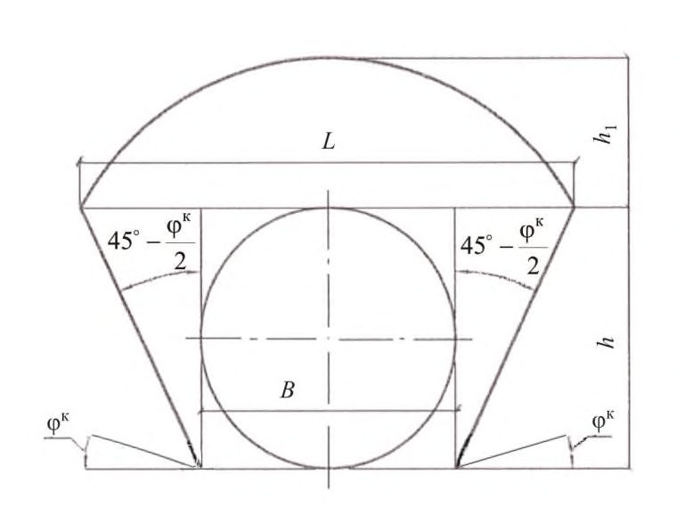

СП 122.13330.2012 «Тоннели железнодорожные и автодорожные»
О документе: разработчики, утверждение, регистрация, ключевые слова
СВОД ПРАВИЛ
СП 122.13330.2012
Москва 2012
Цели и принципы стандартизации в Российской Федерации установлены Федеральным законом от 27 декабря 2002 г. № 184-ФЗ «О техническом регулировании», а правила разработки постановлением Правительства Российской Федерации «О порядке разработки и утверждения сводов правил» от 19 ноября 2008 г. № 858.
- 1 ИСПОЛНИТЕЛИ: ОАО «Научно-исследовательский институт транспортного строительства» (ОАО ЦНИИС); ОАО «Научно-исследовательский проектно-изыскательский институт «Ленметрогипротранс» (ОАО «НИПИИ «Ленметрогипротранс»); Тоннельная ассоциация России, ООО «Научно-инженерный центр Тоннельной ассоциации» (ООО «НИЦ ТА»)
- 2 ВНЕСЕН Техническим комитетом по стандартизации ТК 465 «Строительство»
- 3 ПОДГОТОВЛЕН к утверждению Департаментом архитектуры, строительства и градостроительной политики
- 4 УТВЕРЖДЕН приказом Министерства регионального развития Российской Федерации от 30.06.2012 г. № 278 и введен в действие с 1 января 2013 г.
- 5 ЗАРЕГИСТРИРОВАН Федеральным агентством по техническому регулированию и метрологии (Росстандарт)
Информация об изменениях к настоящему своду правил публикуется в ежегодно издаваемом информационном указателе «Национальные стандарты», а текст изменений и поправок -в ежемесячно издаваемых информационных указателях «Национальные стандарты». В случае пересмотра (замены) или отмены настоящего свода правил соответствующее уведомление будет опубликовано в ежемесячно издаваемом информационном указателе «Национальные стандарты». Соответствующая информация, уведомление и тексты размещаются также в информационной системе общего пользования - на официальном сайте разработчика (Минрегион России) в сети Интернет
© Минрегион России, 2012
Настоящий нормативный документ не может быть полностью или частично воспроизведен, тиражирован и распространен в качестве официального издания на территории Российской Федерации без разрешения Минрегиона России
Дата введения 2013-01-01
Введение
Настоящий свод правил определяет системотехнику принятия технических решений по обеспечению комплексной безопасности тоннельных переходов на путях сообщения за счет повышения уровня надежности и эффективности тоннельных сооружений, повышения их эксплуатационной надежности в соответствии с Техническим регламентом «О безопасности зданий и сооружений» (Федеральный закон от 30 декабря 2009 г. № 384-ФЗ), Техническим регламентом «О требованиях пожарной безопасности» (Федеральный закон от 22 июля 2006 г. № 123-ФЗ), Техническим регламентом Таможенного союза «Безопасность автомобильных дорог» (ТР ТС 014/2011), Техническим регламентом Таможенного союза «О безопасности инфраструктуры железнодорожного транспорта» (ТР ТС 003/2011) и постановлением Правительства РФ от 16 февраля 2008 г. № 87 «О составе разделов проектной документации и требованиях к их содержанию».
Свод правил содержит правила принятия инженерных решений при проектировании новых и реконструируемых автодорожных и железнодорожных тоннелей, в том числе устройств и систем, обеспечивающих их эксплуатацию, строительство и ввод в эксплуатацию. Требования обеспечения комплексной безопасности базируются на рассмотрении тоннельных переходов, как транспортных природно-технических систем.
Работа выполнена авторским коллективом: ОАО ЦНИИС ( доктора техн. наук А.А. Цернант, В.А. Гарбер, Г.С. Переселенков, кандидаты техн. наук Е.В. Щекудов, И.А. Бегун, Г.Г. Орлов ) с участием НИЦ Тоннельной ассоциации ( д-р техн. наук В.Е. Меркин ), Тоннельной ассоциации России ( Г.М. Синицкий, академик МАНЭБ Б.Г. Крохалев, канд. техн. наук С.В. Мазеин ), Ленметрогипротранс ( А.И. Салан, А.Н. Соловьев, доктора техн. наук К.П. Безродный, С.Г. Гендлер, канд. геол.-минер. наук А.И. Арнаутов, В.А. Марков, Г.Р. Захаров В.А. Соколов, А.И. Данилов, Н.В. Алферова ), ФГБОУ ВПО ПГУПС ( д-р техн. наук Д.М. Голицынский, кандидаты техн. наук В.Н. Кавказский, Т.В. Иванес ).
1Область применения
Настоящий свод правил распространяется на проектирование, строительство и приемку в эксплуатацию новых и реконструкцию существующих железнодорожных тоннелей на железных дорогах общей сети колеи 1520 мм и автодорожных тоннелей на автомобильных дорогах общего пользования всех категорий, в том числе городских транспортных тоннелей и коротких железнодорожных и автодорожных тоннелей путепроводов тоннельного типа.
Настоящий свод правил не распространяется на проектирование тоннелей, сооружаемых на высокоскоростных (свыше 200 км/ч) железнодорожных пассажирских линиях, на скоростных автомагистралях (с расчетной скоростью движения более 150 км/ч), и уникальных автодорожных тоннелей или тоннелей для совмещенного движения безрельсового и рельсового транспорта в разных уровнях. Для этих тоннелей должны на основе специальных исследований разрабатываться специальные технические условия.
2Нормативные ссылки
В настоящем своде правил использованы ссылки на следующие нормативные документы:
ГОСТ Р 22.1.12-2005 Безопасность в чрезвычайных ситуациях. Структурированная система мониторинга и управления инженерными системами зданий и сооружений. Общие требования
ГОСТ Р 51256-99 Технические средства организации дорожного движения. Разметка дорожная. Типы и основные параметры. Общие технические требования
ГОСТ Р 53607-2009 Глобальная навигационная спутниковая система. Методы и технологии выполнения геодезических и землеустроительных работ. Определение относительных координат по измерениям псевдодальностей. Основные положения
ГОСТ Р 54257-2010 Надежность строительных конструкций и оснований. Основные положения и требования
ГОСТ 9.402-2004 Единая система защиты от коррозии и старения. Покрытия лакокрасочные. Подготовка металлических поверхностей к окрашиванию
ГОСТ 12.1.004-91 Система стандартов безопасности труда. Пожарная безопасность. Общие требования
Railways and highway tunnels
ГОСТ 12.1.012-2004 Система стандартов безопасности труда. Вибрационная безопасность. Общие требования
ГОСТ 17.1.3.13-86 Охрана природы. Гидросфера. Общие требования к охране поверхностных вод от загрязнения
ГОСТ 1412-85 Чугун с пластинчатым графитом для отливок. Марки
ГОСТ 7293-85 Чугун с шаровидным графитом для отливок. Марки
ГОСТ ИСО 8041-2006 Вибрация. Воздействие вибрации на человека. Средства измерений
ГОСТ 9128-2009 Смеси асфальтобетонные дорожные, аэродромные и асфальтобетон. Технические условия
ГОСТ 9238-83 Габариты приближения строений и подвижного состава железных дорог колеи 1520 (1524) мм
ГОСТ 10060.0-95 Бетоны. Методы определения морозостойкости. Общие требования
ГОСТ 23616-79 Система обеспечения точности геометрических параметров в строительстве. Контроль точности
ГОСТ 24451-80 Тоннели автодорожные. Габариты приближения строений и оборудования
ГОСТ 26633-91 Бетоны тяжелые и мелкозернистые. Технические условия
ГОСТ 27483-87 Испытания на пожароопасность. Методы испытаний. Испытания нагретой проволокой
ГОСТ 27484-87 Испытания на пожароопасность. Методы испытаний. Испытания горелкой с игольчатым пламенем
ГОСТ 31416-2009 Трубы и муфты хризотилцементные. Технические условия
- СП 3.13130.2009 Система оповещения и управления эвакуацией людей при пожаре. Требования пожарной безопасности
- СП 5.13130.2009 Установки пожарной сигнализации и пожаротушения автоматические. Нормы и правила проектирования
- СП 12.13130.2009 Определение категорий помещений, зданий и наружных установок по взрывопожарной и пожарной опасности
СП 14.13330.2011 «СНиП II-7-81* Строительство в сейсмических районах»
- СП 16.13330.2011 «СНиП II-23-81 Стальные конструкции»
- СП 20.13330.2011 «СНиП 2.01.07-85* Нагрузки и воздействия»
- СП 21.13330.2012 «СНиП 2.01.09-91 Здания и сооружения на подрабатываемых территориях и просадочных грунтах»
- СП 22.13330.2011 «СНиП 2.02.01-83* Основания зданий и сооружений»
- СП 25.13330.2012 «СНиП 2.02.04-88 Основания и фундаменты на вечномерзлых грунтах»
- СП 28.13330.2012 «СНиП 2.03.11-85 Защита строительных конструкций от коррозии»
- СП 31.13330.2012 «СНиП 2.04.02-84* Водоснабжение. Наружные сети и сооружения»
СП 32.13330.2012 «СНиП 2.04.03-85 Канализация. Наружные сети и сооружения»
- СП 34.13330.2012 «СНиП 2.05.02-85* Автомобильные дороги»
- СП 35.13330.2011 «СНиП 2.05.03-84* Мосты и трубы»
- СП 45.13330.2012 «СНиП 3.02.01-87 Земляные сооружения, основания и фундаменты»
СП 47.13330.2012 «СНиП 11-02-96 Инженерные изыскания для строительства. Основные положения»
СП 48.13330.2011 «СНиП 12-01-2004 Организация строительства»
СП 51.13330.2011 «СНиП 23-03-2003 Защита от шума»
СП 52.13330.2011 «СНиП 23-05-95* Естественное и искусственное освещение»
СП 60.13330.2012 «СНиП 41-01-2003 Отопление, вентиляция и кондиционирование»
СП 63.13330.2012 «СНиП 52-01-2003 Бетонные и железобетонные конструкции. Основные положения»
СП 68.13330.2011 «СНиП 3.01.04-87 Приемка в эксплуатацию законченных строительством объектов. Основные положения»
СП 69.13330.2011 «СНиП 3.02.03-84 Подземные горные выработки»
СП 72.13330.2011 «СНиП 3.04.03-85 Защита строительных конструкций и сооружений от коррозии»
СП 85.13330.2011 «СНиП III-41-76 Контактные сети электрифицированного транспорта»
СП 113.13330.2012 «СНиП 21-02-99* Стоянки автомобилей»
- СП 116.13330.2012 «СНиП 22-02-2003 Инженерная защита территорий, зданий и сооружений от опасных геологических процессов. Основные положения»
СП 119.13330.2012 «СНиП 32-01-95 Железные дороги колеи 1520 мм»
СП 120.13330.2012 «СНиП 32-02-2003 Метрополитены»
СП 124.13330.2012 «СНиП 41-02-2003 Тепловые сети»
СП 131.13330.2012 «СНиП 23-01-99* Строительная климатология»
Примечание - При пользовании настоящим сводом правил целесообразно проверить действие ссылочных стандартов и классификаторов в информационной системе общего пользования -на официальном сайте национального органа Российской Федерации по стандартизации в сети Интернет или по ежегодно издаваемому указателю «Национальные стандарты», который опубликован по состоянию на 1 января текущего года, и по соответствующим ежемесячно издаваемым информационным указателям, опубликованным в текущем году. Если ссылочный документ заменен (отменен), то при пользовании настоящим сводом правил следует руководствоваться заменяющим (измененным) документом. Если ссылочный стандарт отменен без замены, то положение, в котором дана ссылка на него, применяется в части, не затрагивающей эту ссылку.
3Термины и определения
В настоящем своде правил использованы следующие термины с соответствующими определениями:
- 3.1авария
- Опасное дорожно-транспортное происшествие, создающее угрозу жизни и здоровью людей и приводящее к повреждению или разрушению транспортных средств, элементов строительных конструкций или оборудования, а также нарушению движения в тоннеле.
- 3.2аварийное освещение
- Освещение, предусматриваемое на случай нарушения или отключения питания основного (рабочего) освещения и подключаемое к источнику питания, независимому от источника питания рабочего освещения, а в случае аварии переключается на питание от третьего независимого источника электроснабжения, например на встроенную или централизованную аккумуляторную батарею.
- 3.3автодорожный тоннель
- Подземное (или подводное) инженерное сооружение, предназначенное для пропуска (проезда) автотранспортных средств в целях преодоления высотных или контурных препятствий.
- 3.4безопасность движения в тоннеле
- Комплекс инженерно-технических и организационных мероприятий, направленных на обеспечение безопасности эксплуатации тоннелей с заданными параметрами.
- 3.5вираж
- Участок односкатного поперечного профиля проезжей части на кривых в плане с уклоном к центру кривой, служащий для компенсации центробежного ускорения автомобиля в целях повышения безопасности и удобства движения.
- 3.6высота проезда (высотный габарит)
- Наименьшее расстояние от верха покрытия дорожной одежды до элементов конструкции или оборудования, расположенного в верхней части тоннеля, обеспечивающее или ограничивающее проезд транспортного средства.
- 3.7горно-экологический мониторинг
- Система постоянных и (или) непрерывных наблюдений, анализ и прогноз современного геодинамического состояния геологической среды, оценка негативного влияния горных работ на окружающую среду и безопасность при строительстве и эксплуатации транспортных тоннелей.
- 3.8горный тоннель
- Подземное протяженное инженерное сооружение, предназначенное для пропуска транспортных средств в целях преодоления высотных препятствий.
- 3.9городской тоннель
- Подземное инженерное сооружение для пропуска транспортных средств, расположенное в административных границах города.
- 3.10дренажная штольня
- Штольня, предназначенная для защиты тоннеля от грунтовых вод или снижения гидростатического давления.
- 3.11дорожная одежда
- Многослойная конструкция в пределах проезжей части, воспринимающая нагрузку от транспортных средств и передающая ее на грунт или элемент конструкции тоннеля.
- 3.12железнодорожный тоннель
- Подземное протяженное инженерное сооружение, предназначенное для пропуска железнодорожного транспорта в целях преодоления высотных или контурных препятствий, в том числе и в городах.
- 3.13закрытый способ работ
- Сооружение тоннеля без вскрытия поверхности земли.
- 3.14защитная полоса
- Пристенное возвышение с противоположной относительно служебного прохода стороны тоннеля, предназначенное для повышения безопасности дорожного движения, в том числе находящихся в тоннеле людей и защиты конструкций тоннеля от внешних механических воздействий.
- 3.15зона безопасности
- Отделенное противопожарными преградами помещение (отсек) в объеме тоннеля или притоннельное сооружение, приспособленное для временного пребывания людей во время пожара в транспортной зоне или другой части тоннеля.
- 3.16интенсивность движения
- Количество транспортных средств, проходящих через сечение дороги за единицу времени (за сутки - авт/сут, за час - авт/ч).
- 3.17класс бетона по прочности на сжатие
- Установленные в нормативных документах унифицированные ряды показателей прочности бетона на сжатие, принимаемые с гарантированной обеспеченностью.
- 3.18кривая переходная
- Кривая переменного радиуса между участками дороги различной кривизны в плане, служащая для обеспечения плавного изменения трассы в целях повышения безопасности и удобства движения транспорта.
- 3.19марка бетона по водонепроницаемости
- Максимальная величина давления воды, при котором не наблюдается ее просачивание через бетонные образцы, изготовленные и испытанные на водонепроницаемость согласно требованиям действующих стандартов.
- 3.20марка бетона по морозостойкости
- Количество циклов попеременного замораживания и оттаивания в воде, которые выдерживают бетонные образцы, изготовленные и испытанные на морозостойкость согласно требованиям действующих стандартов.
- 3.21обделка
- Постоянная несущая конструкция, воспринимающая внешние нагрузки, ограждающая подземную выработку и образующая внутреннюю поверхность подземного сооружения.
- 3.22остановочная полоса
- Дополнительная полоса на проезжей части, предназначенная для вынужденной остановки транспортных средств.
- 3.23открытый способ работ
- Сооружение тоннеля в котловане с поверхности земли.
- 3.24охрана окружающей среды при строительстве
- Научно обоснованный регламент строительной деятельности, направленный на сохранение качественных и количественных соотношений в сложившейся экосистеме.
- 3.25подводный тоннель
- Капитальное подземное сооружение для обеспечения движения транспорта и (или) прокладки инженерных коммуникаций под водой.
- 3.26пожарный отсек
- Часть сооружения, отделенная от других его частей противопожарными преградами.
- 3.27портал тоннеля
- Архитектурно оформленный вход или выход из тоннеля.
- 3.28притоннельное сооружение
- Подземное или наземное сооружение, предназначенное для расположения технологических или эксплуатационных обустройств, обеспечивающих жизнедеятельность и обслуживание тоннеля.
- 3.29проезжая часть тоннеля
- Элемент автотранспортного тоннеля, предназначенный для движения транспортных средств.
- 3.30путь тормозной
- Путь, который проходит транспортное средство при включенной тормозной системе.
- 3.31пропускная способность тоннеля
- Максимальное количество автомобилей, которое может пройти через сечение тоннеля за единицу времени.
- 3.32полоса безопасности
- Краевая полоса проезжей части, ограничивающая приближение транспортных средств к служебному проходу или защитной полосе, расположенных у стены автодорожного тоннеля.
- 3.33полоса движения
- Часть проезжей части автодорожного тоннеля, имеющая ширину, достаточную для движения транспортных средств в один ряд.
- 3.34полоса переходно-скоростная
- Дополнительная полоса движения, устраиваемая для обеспечения разгона или торможения автомобилей, въезжающих или выезжающих с основных полос движения.
- 3.35пучение морозное
- Процесс деформации вследствие увеличения объема грунта при промерзании, зависящий от свойств грунта, режима промерзания и условий увлажнения.
- 3.36пожарная безопасность объекта
- Состояние объекта, при котором с регламентируемой вероятностью исключается возможность возникновения и развития СП 122.13330.2012 пожара и воздействия на людей опасных факторов пожара, а также обеспечивается защита материальных ценностей.
- 3.37притоннельные сооружения
- Подземное или наземное сооружение, предназначенное для расположения технологических или эксплуатационных обустройств, обеспечивающих жизнедеятельность и обслуживание тоннеля.
- 3.38противопожарная защита
- Совокупность организационных мероприятий и технических средств, направленных на предотвращение воздействия на людей опасных факторов пожара и ограничение материального ущерба от него.
- 3.39путепровод тоннельного типа
- Тоннель с протяженностью перекрытой части менее 300 м, являющийся элементом транспортной развязки и предназначенный для движения транспортных средств.
- 3.40рампа
- Сооружение, служащее для перехода транспортных средств с проезжей части на поверхности земли в тоннель или наоборот.
- 3.41разметка дорожная
- Линии, надписи и другие средства зрительного ориентирования участников дорожного движения, размещаемые на проезжей части дороги, элементах дорожных сооружений и инженерного оборудования дороги.
- 3.42расстояние безопасного торможения
- Минимальное расстояние, требуемое для надежного приведения транспортного средства, движущегося с установленной скоростью, в состояние полной остановки.
- 3.43сервисная штольня
- Штольня, предназначенная для обслуживания основного тоннеля.
- 3.44служебный проход
- Выделенная у стены автодорожного тоннеля с некоторым возвышением над уровнем проезжей части полоса, предназначенная для прохода по тоннелю служебного персонала.
- 3.45техническая зона
- Зона вдоль трассы тоннеля шириной 40 м, где запрещается проводить работы без разрешения эксплуатирующей организации.
- 3.46тоннельный переход
- Комплекс сооружений для подземного (подводного) преодоления высотных либо контурных препятствий для движения автомобильного и железнодорожного транспорта.
- 3.47тоннель
- Протяженное подземное (подводное) инженерное сооружение, предназначенное для транспортных целей, пропуска воды и прокладки инженерных коммуникаций, являющееся основным объектом тоннельного перехода.
- 3.48транспортная зона
- Основная часть объема тоннеля или часть комплексного подземного сооружения с расположенными в ней ездовым полотном, другими элементами строительных конструкций, а также с эксплуатационным оборудованием, необходимым для использования тоннеля в качестве транспортного сооружения.
- 3.49транспортная штольня
- Штольня, предназначенная для транспортирования людей, инструмента и инвентаря.
- 3.50транспортный поток
- Совокупность транспортных средств, движущихся по проезжей части в данном направлении.
- 3.51трасса тоннеля
- Линия, отображающая положение оси тоннеля в пространстве.
- 3.52трещиностойкость конструкции
- Способность конструкции сопротивляться образованию трещин под воздействием нагрузок, изменяющихся эксплуатационных воздействий и погодных условий.
- 3.53улица, площадь
- Территория, ограниченная красными линиями уличнодорожной сети города.
- 3.54чрезвычайная ситуация; ЧС
- Обстановка, сложившаяся в результате аварии, стихийного или иного бедствия, которая может или повлекла за собой человеческие жертвы, ущерб здоровью людей, окружающей среде или явилась причиной значительных материальных потерь.
- 3.55шов деформационный
- Искусственно образуемый конструктивный элемент сооружения для обеспечения возможности перемещения отдельных элементов конструкции без силового воздействия элементов обделки друг на друга под влиянием их осадок, изменения температуры, усадки бетона и предупреждения образования трещин.
- 3.56эвакуационная штольня (штольня безопасности)
- Штольня, предназначенная для эвакуации людей из эксплуатируемых подземных сооружений в случае пожара или другой чрезвычайной ситуации.
4Общие положения
Выбор трасс тоннелей и комплексов сооружений тоннельного перехода выполняется взаимосвязанно с выбором трассы железной и автомобильной дороги в соответствии с СП 119.13330 и СП 34.13330.
Основные технические решения по вариантам тоннельных переходов по выбору совмещенного или раздельного положения автодорожных и железнодорожных тоннелей, а также по детальному выбору положения трассы, плана и профиля тоннелей, одно- или многопутности, типу обделки определяются при технико-экономическом сопоставлении показателей строительных и эксплуатационных затрат за весь период жизненного цикла сооружений тоннельного перехода.
Камеры следует устраивать с каждой стороны железнодорожного тоннеля не более чем через 300 м, располагая их в шахматном порядке. При длине тоннеля от 300 до 500 м необходима одна камера в середине тоннеля, а при длине от 500 до 700 м - две камеры с двух сторон на равных расстояниях между ними и порталами.
Ниши следует располагать между камерами с обеих сторон тоннеля в шахматном порядке, с шагом по каждой стороне 60 м. Размеры камер и ниш в железнодорожных тоннелях должны быть не менее указанных в таблице 1.
Таблица 1 Размеры камер и ниш в миллиметрах
| Устройства | Ширина | Высота (по середине камеры, ниши) | Глубина |
|---|---|---|---|
| Камеры в тоннелях: | |||
| железнодорожных | 4000 | 2800 | 2500 |
| автодорожных | 2000 | 2500 | 2000 |
| Ниши в тоннелях: | |||
| железнодорожных | 2000 | 2500 | 1000 |
| автодорожных | 2000 | 2500 | 500 |
При устройстве эвакуационных выходов (выработок) в рядом расположенный тоннель или штольню камеры следует совмещать с входом в эти выработки.
Уровень чистого пола ниш и камер в железнодорожных тоннелях должен быть на одном уровне с подошвой ближайшего к ним рельса, а в автодорожных тоннелях - на одном уровне со служебным проходом или верхом защитной полосы.
В случае если обслуживание железнодорожного тоннеля при эксплуатации осуществляется при отсутствии движения поездов (в ночные и дневные окна) камеры и ниши допускается не предусматривать.
В автодорожных тоннелях ниши могут, при необходимости, предусматриваться только для расположения технологического оборудования.
Камеры в автодорожных тоннелях не предусматриваются.
Допускается смещать отдельные камеры и ниши по месту для исключения их расположения в местах устройства деформационных и рабочих швов при сохранении шага ниш не более 60 м.
Для путепроводов тоннельного типа устройство камер и ниш не требуется.
При размещении между тоннелями трансформаторных подстанций и других эксплуатационно-технологических устройств места расположения межтоннельных проходов (сбоек) следует совмещать с необходимыми для этих устройств притоннельными сооружениями.
Пройденные в период строительства вспомогательные штольни, имеющие выход на поверхность, следует переоборудовать в сервисные штольни для обслуживания основных тоннелей при их эксплуатации (сервисные штольни).
Транспортные тоннели должны охраняться.
Решение об охране тоннелей должно быть определено в задании на проектирование.
5Общие правила проектирования и строительства автодорожных и железнодорожных тоннелей
5.1Исходные данные для проектирования тоннелей
Инженерные изыскания для проектирования тоннелей должны выполняться специализированными проектно-изыскательскими организациями по проектированию тоннелей или консорциумом таких организаций.
На этапе выполнения инженерных изысканий необходимо определить конкурентные варианты прохождения трассы тоннеля. По результатам выполнения изысканий по определенным вариантам трассы проводят технико-экономическое сравнение вариантов.
Инженерные изыскания по утвержденному варианту трассы заказчиком передаются в качестве исходных данных для разработки проектной документации. Инженерные изыскания до начала работ по разработке проектной документации могут быть направлены на экспертизу.
При выполнении инженерных изысканий для проектирования горных тоннелей требование по разработке вариантов трассы тоннеля является обязательными.
При выборе варианта трассы для каждого варианта разрабатывается раздел оценки воздействия на окружающую среду (ОВОС) при строительстве и эксплуатации с расчетом ущерба окружающей среде и стоимости мероприятий по его предотвращению.
При выборе варианта трассы разрабатывают раздел «Оценка воздействия на окружающую среду».
Для подводных тоннелей в задании на проектирование должны быть приведены данные об условиях судоходства (с указанием положения фарватера и возможными перспективами дноуглубления) и о перспективах берегоукрепительных работ и строительства портовых сооружений в районе трассы тоннеля.
Задание на проектирование должно включать: общие данные (основание для проектирования, наименование объекта капитального строительства и вид строительства, местонахождение объекта, источник финансирования); основные технико-экономические характеристики тоннеля; стадию проектирования; необходимость разработки конкурсной документации на строительство тоннеля и требования к ней; даты начала и окончания строительства, этапы строительства; возможность подготовки проектной документации применительно к отдельным этапам строительства, требование к перспективному расширению объекта; особые условия строительства; уровень ответственности сооружения; отнесение тоннеля к городскому или внегородскому на незастроенных или малозастроенных территориях; перечень сведений отнесенных к государственной тайне (степень секретности сооружения); технические условия для подключения к сетям инженерно-технического обеспечения на период строительства и эксплуатации; требования к архитектурно-строительным, объемно-планировочным и конструктивным решениям; необходимость предварительного согласования отдельных проектных решений; дополнительные данные (требования к защитным сооружениям, прочие условия); требования по выполнению работ вахтовым методом; требования к основным строительным материалам (при необходимости); материалы по выбору вариантов трассы, на которой планируется расположение тоннеля; данные о перспективной расчетной интенсивности движения транспортных средств в тоннеле, составе транспортного потока и распределении его по видам потребляемого топлива; данные по организации и безопасности дорожного движения в районе строительства (для городских тоннелей); решение местного уполномоченного органа о предварительном согласовании места размещения объекта; акт выбора земельного участка (трассы) для строительства и прилагаемые к нему материалы; выкопировка из генерального плана с указанием начальной и конечной точек трассы, на которой планируется расположение тоннеля; план развития инфраструктуры на предполагаемых участках строительства; сведения об объектах культурного наследия (памятниках истории и культуры), территориях с особым статусом (заповедники, заказники и т. д.), подтвержденные соответствующими органами; технические условия на мероприятия по их защите; материалы по оценке воздействия на окружающую природную среду (ОВОС); проект планировки территории и проект межевания территории для городских тоннелей; отчетная документация по результатам инженерных изысканий; положительное заключение государственной экспертизы результатов инженерных изысканий, если они были направлены на государственную экспертизу до направления проектной документации; правоустанавливающие документы на объект капитального строительства (для реконструируемых тоннелей); результаты обследования действующих тоннелей (для реконструируемых тоннелей); данные по эксплуатируемым и проектируемым наземным и подземным сооружениям, сетям и коммуникациям в районе строительства, а также результатам обследования эксплуатируемых объектов, находящихся в зоне возможного влияния строительства; технические условия по эксплуатации предполагаемого для использования технологического оборудования, обеспечивающего нормальную эксплуатацию тоннеля; согласованный с эксплуатирующей организацией перечень административных, служебно-технических и бытовых помещений, входящих в состав эксплуатационнотехнических блоков, и их площади; технические условия на присоединение эксплуатационных устройств тоннеля к источникам снабжения электроэнергией, инженерным сетям и коммуникациям; предложения по применению оборудования и материалов при эксплуатации тоннеля (при необходимости); сведения по проведенным с общественностью обсуждениям решений о строительстве тоннеля; данные по оборудованию индивидуального изготовления при эксплуатации тоннеля (при необходимости); места расположения отвалов грунта с утвержденными транспортными схемами; места утилизации твердых бытовых отходов и демонтированных строительных конструкций с утвержденными транспортными схемами; источники получения строительных материалов с транспортными схемами; данные по результатам выполненных научно-исследовательских и опытноконструкторских работ, связанных со строительством (реконструкцией) тоннеля; требования по созданию на объекте базы стройиндустрии, вахтовых поселков; перечень технологического оборудования, предназначенного для создания объекта капитального строительства, с указанием типа, марки, производителей и других данных по укрупненной номенклатуре; исходные данные для составления сметной документации.
В проекте детальной планировки и на схеме вертикальной планировки должны быть отражены основные плановые и высотные технические характеристики всех улиц, дорог и площадей на территории, прилегающей к проектируемому транспортному тоннелю. Конкретные требования к ситуационному плану, проекту детальной планировки и вертикальной планировки должны содержаться в задании на их разработку.
5.2Инженерные изыскания
5.2.1 Инженерно-геологические изыскания
- 5.2.1.1 Инженерные изыскания (с выбором вариантов строительства) сбор и обработка имеющихся инженерно-геологических материалов по предполагаемым вариантам (аэрои космоснимки, скважины, шурфы, отчеты различных организаций и т. д.); дополнительные буровые и горные работы, геофизические исследования, обработка аэро- и космоснимков, лабораторные исследования в объеме не менее 20 % изысканий на стадии проектной документации.
- 5.2.1.2 Инженерно-геологические изыскания для разработки проектной документации строительства тоннеля
Инженерно-геологические изыскания для разработки проектной документации тоннелей должны выполняться в соответствии с требованиями СП 47.13330, СП 22.13330, [2, часть I], [3], [12] и настоящего свода правил.
В состав инженерно-геологических изысканий должны входить следующие виды работ и комплексных исследований: сбор и обработка материалов изысканий и исследований прошлых лет по участку тоннеля и прилегающим территориям; рекогносцировочное обследование территории; построение априорной геодинамической 3D-модели внутреннего строения и свойств массива горных пород по материалам прошлых лет и на основе обработки измерений рельефа земной поверхности по методу Марковской гипсотомографии; детальная инженерно-геологическая съемка на припортальных участках и участках шахтных стволов; бурение скважин; геофизические исследования; полевые исследования грунтов; гидрогеологические исследования; стационарные наблюдения; лабораторные исследования грунтов, подземных и поверхностных вод; обследование грунтов оснований существующих зданий и сооружений (при отсутствии по ним исполнительной документации); составление прогноза изменений инженерно-геологических условий; камеральная обработка материалов и составление технического отчета (заключения).
В состав рекогносцировочного обследования территории помимо осмотра места изыскательских работ с визуальной оценкой рельефа должны входить описание имеющихся строительных выработок и других обнажений, внешних проявлений геодинамических процессов, а также оценка эффективности существующих транспортных потоков с позиций организации изыскания.
Рекогносцировочное обследование следует производить в полосе шириной до 150 м вдоль оси тоннеля.
Должна быть проведена инженерно-геологическая съемка полосы трассы тоннеля (не менее 150 м в каждую сторону) масштаба 1:2000. Площадь съемки должна быть достаточной для освещения инженерно-геологических условий возможных вариантов изменений трассы тоннеля.
Инженерно-геологическая съемка на припортальных участках (500 × 500 м) и участках шахтных стволов (100 × 100 м) должна выполняться в масштабе 1:1000 или 1:500 и установить несущую способность грунтов и их устойчивость при сооружении порталов.
Атмо-геохимическая съемка полосы трассы тоннеля (по 150 м в каждую сторону) выполняется для уточнения положения зон разрывных нарушений, характеристики их открытости и активности (масштаб съемки 1:2000).
Количество разведочных скважин по трассе тоннеля определяется категорией сложности инженерно-геологических условий (по [3]) и глубиной заложения тоннеля.
Число разведочных скважин при глубине заложения тоннеля до 300 м следует принимать: при длине тоннеля до 300 м - не менее трех вдоль оси тоннеля в простых условиях и в условиях средней сложности и не менее четырех в сложных условиях; при длине тоннеля более 300 м - дополнительно по одной скважине на каждые 200 м вдоль оси тоннеля в простых условиях, на каждые 100 - 120 м в условиях средней сложности и на каждые 75 100 м в сложных условиях. Аналогично определяется число скважин для подходных выработок.
При необходимости на наиболее сложных участках трассы дополнительно бурятся скважины по поперечникам. Число скважин в каждом поперечнике - две-три.
На участках развития опасных инженерно-геологических процессов рекомендуется закладывать поперечники из трех -пяти скважин и проводить дополнительные геофизические исследования.
Глубина скважин определяется необходимостью освещения геологического разреза, гидрогеологических условий, структуры горного массива и свойств пород в пределах прогнозируемой зоны взаимодействия проектируемых объектов с геологической средой, но не менее чем на 8 - 10 м ниже лотка тоннеля.
Согласно требованиям [3, подраздел 1.6], с особой детальностью должны быть изучены инженерно-геологические условия в зоне подземного сооружения, под которой понимают толщу грунтов на 30 - 40 м выше и на 8 - 10 м ниже лотка сооружения. Детально (через 2 м) опробуется: на 10 м ниже лотка тоннеля; зона тоннеля (10 м); зона сдвижения (15 м выше кровли тоннеля).
С меньшей детальностью (через 5 м) опробуется зона в интервале 15 - 40 м над кровлей тоннеля.
Остальной разрез опробуется с шагом одна проба на 10 м (низкая детальность).
Состав определений для скальных и полускальных пород: низкая детальность: полный комплекс определений физических свойств и механической прочности пород; нормальная детальность: полный комплекс определений физических свойств и механической прочности пород; особая детальность: полный комплекс определений физических свойств и механической прочности пород; полный комплекс определений физико-механических свойств, механической прочности и деформационных характеристик.
В сложных инженерно-геологических условиях для получения необходимых параметров для расчета (математического моделирования) обделки выполняются специальные лабораторные исследования по определению физико-механических свойств грунтов и горных пород [определение прочности пород на сдвиг в условиях трехстороннего сжатия (стабилометр), определение прочности пород на сдвиг по готовой поверхности, определение параметров длительной прочностности, прогноз удароопасности].
Число определений каждой характеристики должно обеспечить получение нормативных и расчетных показателей для выделенных инженерно-геологических элементов при заданной доверительной вероятности.
При строительстве тоннелей открытым способом с использованием метода «стена в грунте», шпунтовых и свайных ограждений котлованов, входящих в состав постоянных конструкций, скважины следует располагать по сетке 20 × 20 м или по оси ограждающих конструкций не реже, чем через 20 м.
На участках распространения специфических грунтов разведочные скважины необходимо проходить на полную их мощность или до глубины, где наличие таких грунтов не будет оказывать влияния на устойчивость проектируемых сооружений.
При изысканиях на участках развития геологических и инженерно-геологических процессов выработки следует проходить на 3-5 м ниже зоны их активного развития.
В состав гидрогеологических исследований должны входить наблюдения за уровнями подземных вод в процессе бурения скважин, замеры гидравлических напоров, откачки (наливы, нагнетания) из скважин, определения дебитов поверхностных водотоков (родников, источников), замер температуры подземных и поверхностных вод (и температуры грунтов), отбор проб воды и газов (при их наличии) на лабораторные исследования.
Виды и объемы гидрогеологических исследований должны определяться программой изысканий.
Комплекс геофизических методов следует назначать исходя из характера решаемых задач и возможности применения того или иного метода в конкретных условиях.
Объем геофизических исследований определяется программой изысканий и корректируется в процессе их выполнения.
Должны быть организованы режимные наблюдения за поверхностными и подземными водами, а при наличии многолетнемерзлых грунтов - за их температурой и состоянием.
При камеральной обработке материалов изысканий должны быть составлены: карта фактического материала с контурами проектируемых сооружений (СП 47.13330); инженерно-геологическая карта; гидрогеологическая карта (при необходимости); карта распространения геологических процессов и явлений; карта-срез на уровне заложения тоннеля.
Указанные карты составляются в масштабе 1:2000 - 1:5000; геолого-литологические разрезы разведочных выработок в масштабе не менее 1:500; инженерно-геологический разрез по оси тоннеля в масштабе - горизонтальный 1:5000 - 1:2000 и вертикальный 1:500 - 1:100 и разрезы по поперечникам; инженерно-геологические разрезы шахтных стволов и подходных выработок в масштабе 1:200 - 1:500; графики, расчеты и таблицы гидрогеологических и геофизических исследований; ведомости лабораторных исследований грунтов и вод.
- 5.2.1.3 Инженерно-геологические изыскания в процессе строительства тоннеля
Инженерно-геологические изыскания в процессе строительства производятся в соответствии с требованиями [39, раздел 5] для оценки состояния массива пород и, при необходимости, корректировки способов проходки и конструкций обделки.
В состав инженерно-геологических работ при строительстве тоннеля входят: систематическое описание пород в забое, своде и стенах выработок, определение крепости и устойчивости грунтов и пород, фиксирование проявлений горного давления, вывалов, переборов, обводненности и газоносности грунтов, способа проходки, состояния временного крепления и постоянной обделки.
В случае несоответствия фактических инженерно-геологических условий данным проектной документации производится корректировка способов проходки и конструкций обделки.
5.2.2 Инженерно-экологические изыскания
Инженерно-экологические изыскания для разработки проектной документации следует выполнять в соответствии с СП 47.13330 и [1, подразделы 6.2, 6.4, 6.9 - 6.31].
При отсутствии стадии проектной документации или в случае совмещения стадий проектной и рабочей документации инженерно-экологические изыскания должны предшествовать разработке рабочей документации.
Задачей инженерно-экологических изысканий для разработки проектной документации является получение необходимых материалов и данных для экологического обоснования проекта строительства тоннеля, в том числе: уточнение природно-техногенных условий на выбранном варианте трассы и площадках вспомогательных сооружений к началу строительства; уточнение границ зоны воздействия тоннеля по компонентам природной и городской среды; прогноз возможного изменения окружающей среды в зоне влияния тоннеля при его строительстве и эксплуатации; получение необходимых материалов и исходных данных для составления раздела проектной документации «Мероприятия по охране окружающей среды».
Маршрутное обследование трассы и прилегающей территории должно осуществляться с детальностью, отвечающей, как правило, масштабам 1:5000 - 1:2000, на сложных участках при необходимости масштаб обследования может быть увеличен до 1:1000, а на прилегающей территории уменьшен до 1:25000 - 1:10000. Допускается изменение масштабов при обосновании в программе работ.
Бурение разведочных скважин для экологических наблюдений и опробования следует проводить на участках выявленных ранее геохимических, гидрохимических и геофизических аномалий и в местах предполагаемой локализации загрязнений для установления их планового распространения и глубины проникновения. Число и глубина скважин обосновываются в программе изысканий.
Глубина бурения скважин для отбора проб на участках, предназначенных для организации стройплощадок на порталах тоннелей, и в местах предполагаемого расположения устьев вентиляционных стволов и штолен должна соответствовать требованиям [1]. Глубина скважин для отбора проб пород по трассе тоннелей должна соответствовать расстояниям от поверхности земли до профиля трассы.
Оценка радиационной обстановки при производстве изысканий должна осуществляться согласно [42, 43] с учетом [1]. Радиационно-экологические исследования должны включать: оценку гамма-фона на территории строительства; оценку радиоактивности грунтов в приповерхностной зоне и в интервалах глубин прохождения тоннеля; определение радиационных характеристик водоносных горизонтов, вскрываемых при проходке тоннеля; оценку радоноопасности территории на основании плотности потока радона с поверхности грунта и содержания радона в воздухе сооружаемого тоннеля; оценку мощности экспозиционной дозы (МЭД) гамма-излучения по глубине с использованием гамма-каротажа в скважинах, проходка которых осуществляется в ходе инженерно-геологических изысканий.
Рекогносцировочное обследование территории следует выполнять согласно требованиям [1, подраздел 4.8] вдоль трассы тоннеля и на прилегающей территории в полосе 300 - 500 м для составления схемы расположения промышленных предприятий, свалок, отстойников, нефтехранилищ, АЗС и других объектов повышенной опасности и источников загрязнения окружающей среды, а также объектов историко-культурного наследия и повышенной уязвимости (исторической застройки, медицинских, научноисследовательских и детских учреждений, скверов, парков и зон отдыха).
Опробование и оценка качества воды, используемой как источник водоснабжения для хозяйственно-питьевых и коммунально-бытовых нужд и других целей, проводят в соответствии с установленными санитарными нормами и стандартами качества воды применительно к видам водопользования.
Геоэкологическое опробование и оценку загрязнения грунтовых вод, не используемых для водоснабжения, при экологической оценке территории в зоне влияния проектируемого тоннеля и вспомогательных сооружений проводят согласно [1, подразделы 4.37, 4.38]. Число проб устанавливается в программе изысканий в соответствии со спецификой гидрогеологических условий, протяженностью тоннеля и влиянием техногенных факторов.
Оценка состояния растительного покрова проводится при маршрутном обследовании трассы проектируемого тоннеля и прилегающей территории и сопровождается отбором проб зеленых насаждений (трав, кустарников, листьев деревьев) для определения степени их деградации и химического загрязнения в городской среде. Для проведения геоботанических исследований следует привлекать специализированные организации или квалифицированных специалистов в области городского лесопаркового хозяйства, имеющих лицензии и личные сертификаты соответствия на право проведения подобных работ.
5.2.3 Инженерно-геодезические изыскания
Инженерно-геодезические изыскания должны обеспечивать получение топографо-геодезических материалов и данных о ситуации, рельефе местности (в том числе дна водотоков, водоемов и акваторий), существующих зданиях и сооружениях (наземных и подземных), подземных коммуникаций и других элементов планировки, необходимых для комплексной оценки природных и техногенных условий по проектируемой трассе линии, обоснования проектирования, строительства и эксплуатации тоннеля [2].
Инженерно-геодезические изыскания на стадии разработки проектной документации следует осуществлять по всем вариантам проектируемых трасс тоннеля. В состав работ должны входить: сбор и анализ топографических (инженерно-топографических) карт и планов в масштабах 1:5000 1:2000, землеустроительных и лесоустроительных планов, материалов прошлых лет по развитию опорных геодезических сетей, земельного, градостроительного и иных кадастров; обследование пунктов государственной геодезической опорной сети и выполнение сгущения или развития ее в случае необходимости; обновление топографических карт и планов, если они не соответствуют современному состоянию ситуации, рельефа местности и расположения подземных коммуникаций; промеры глубин на реках и водоемах, нивелирование поверхности дна водотоков и составление продольного профиля на исследуемом участке реки и поперечных профилей по промерным створам; перенесение в натуру и привязка инженерно-геологических выработок и других точек наблюдений; геодезические работы при изучении опасных природных и техноприродных процессов (карст, склоновые процессы, переработка берегов рек, озер и водохранилищ, а также в случаях подрабатывания и подтопления территории); начальные геодезические наблюдения за деформациями оснований зданий и сооружений на земной поверхности; рекогносцировочное обследование вариантов трассы и мест расположения сооружений при необходимости визуальных осмотров в целях дополнительной проверки достоверности имеющихся материалов; создание планово-высотного съемочного обоснования и проведение топографической съемки участков в масштабах 1:5000 - 1:2000; проложение тахеометрических ходов с набором пикетных точек в характерных местах рельефа и ситуации; уточненный ситуационный план в масштабе 1:500 с указанием на нем существующих и проектируемых инженерных коммуникаций; проект инженерной подготовки строительных площадок с указанием существующих и подлежащих сносу зданий и сооружений; чертежи генерального плана линии и вертикальной планировки территории; природоохранные мероприятия; материалы геодезического обеспечения строительства.
При изысканиях должны выполняться: сбор и анализ дополнительных топографо-геодезических материалов, включая материалы и данные изысканий прошлых лет; построение (развитие) опорной и планово-высотной съемочной геодезической сети; топографическая съемка в масштабе 1:500; составление и размножение инженерно-топографических планов; геодезическое обеспечение других видов инженерных изысканий, включая изучение опасных природных и техноприродных процессов; геодезические работы для изучения движения земной поверхности в районах развития современных разрывных тектонических смещений; камеральная обработка материалов и составление технического отчета.
Инженерно-геодезические изыскания на стадии разработки рабочей документации должны обеспечить получение дополнительных топографогеодезических материалов и данных для доработки генерального плана трассы, уточнения и детализации проектных решений.
При этом выполняются: анализ и доработка материалов, выполненных на предшествующих стадиях проектирования; обследование участков трассы и сооружений; полевое трассирование (вынос трассы в натуру); планово-высотная привязка трассы к пунктам государственной (опорной) геодезической сети; топографическая съемка полосы местности вдоль трассы (съемка текущих изменений при наличии планов) в масштабах 1:1000 - 1:500, досъемка переходов, пересечений и вновь появившихся (после уточнений для разработки проекта) инженерных коммуникаций; составление и размножение инженерно-топографических планов; геодезическое обеспечение других видов изысканий.
5.3Объемно-планировочные решения
5.3.1 Общие требования
5.3.1.1 Состав и порядок разработки, подготовки исходных данных, согласования, утверждения проекта планировки тоннелей определяются и уточняются планировочным заданием на разработку проекта.
Планировочное задание составляется с учетом различия по глубине заложения (к тоннелям мелкого и глубокого заложения) и по условиям проходки (к тоннелям в скальных и связных грунтах).
- 5.3.1.2 Объемно-планировочные и конструктивно-технологические решения для тоннелей должны приниматься с учетом обеспечения максимальной сохранности расположенных поблизости зданий, сооружений и культурно-исторических памятников.
Архитектурный облик наземных сооружений тоннелей должен отвечать эстетическим требованиям, и его следует решать в единой композиции с окружающим ландшафтом и архитектурными сооружениями (ансамблями), расположенными в зоне прилегающей улично-дорожной сети.
- 5.3.1.3 При проектировании тоннелей, располагаемых в непосредственной близости от жилых и общественных зданий, необходимо предусматривать на въездах и выездах из тоннелей специальные планировочные и конструктивные мероприятия, понижающие шум от проезжающих транспортных средств до допустимых уровней в соответствии с СП 51.13330.
- 5.3.1.4 В путепроводе тоннельного типа, состоящем из перекрытой (тоннельной) части и двух открытых рамповых участков, места перехода от рамп к перекрытой части следует назначать, как правило, из условия обеспечения беспрепятственного пропуска транспортных потоков и пешеходов над перекрытой частью.
- 5.3.1.5 При проектировании протяженных тоннелей, сооружаемых двумя способами - открытым и закрытым, границы участков различных способов работ должны определяться на основе технико-экономического сравнения вариантов с учетом градостроительной обстановки и инженерно-геологических условий строительства.
- 5.3.1.6 У въездов в тоннели следует предусматривать системы, останавливающие въезд транспортных средств на полосы движения.
В разделительной полосе улицы (дороги) на подходах к тоннелю (тоннелям) на расстоянии не менее 500 м от порталов должны быть предусмотрены разрывы для возможности въезда пожарной техники в тоннель во встречном направлении, а также для разворота автомобилей для движения в обратном направлении.
- 5.3.1.7 Пешеходные переходы, зоны размещения торгово-сервисных объектов и рекреационные зоны, подземные гаражи и паркинги в составе объединенных конструкций с транспортными тоннелями следует проектировать с учетом требований СП 113.13330 и [12].
- 5.3.1.8 Для автодорожных тоннелей должна быть предусмотрена возможность отвода транспортных средств на случай аварийной ситуации в тоннеле (площадки для разворота транспортных средств, съезды и т. п.). При невозможности выполнить разворот или съезд транспорта перед порталом каждого тоннеля допускается предусматривать мероприятия по отводу транспортных средств для комплекса тоннелей на участке автодороги.
- 5.3.1.9 Автодорожные тоннели длиной более 1500 м при отсутствии остановочных полос могут иметь через каждые 750 м местные уширения с площадками для аварийной остановки транспортных средств.
Длина площадок должна быть не менее 50 м, а ширина - не менее 2,75 м. При двустороннем движении площадки должны располагаться с каждой стороны тоннеля.
Допускается не выполнять площадок для аварийной остановки транспортных средств. Отсутствие площадок должно компенсироваться организацией специальной эксплуатационной службы по своевременному удалению аварийных автомобилей за пределы тоннеля или другими организационными мероприятиями.
5.3.2 Поперечное сечение, продольный профиль и план
- 5.3.2.1 Поперечное сечение строящихся и реконструируемых железнодорожных тоннелей должно приниматься в соответствии с габаритом приближения строений С, приведенном в ГОСТ 9238 и [44]. Поперечное сечение должно выполняться с учетом принятых конструкций контактной сети, пути, водоотвода, размещения всех необходимых технологических обустройств, а также с учетом строительных допусков на сооружение обделки тоннеля.
- 5.3.2.2 Продольный уклон пути в железнодорожном тоннеле должен соответствовать СП 119.13330. При длине тоннеля до 400 м продольный уклон должен быть одного знака.
- 5.3.2.3 Коэффициенты смягчения руководящего уклона или уклона усиленной тяги должны приниматься по расчету в зависимости от длины тоннеля.
- 5.3.2.4 Смежные элементы продольного профиля железнодорожного и автодорожного тоннелей должны сопрягаться в вертикальной плоскости кривыми, величина радиуса которых определяется в зависимости от категории дороги.
- 5.3.2.5 Расположение железнодорожных тоннелей в плане должно удовлетворять требованиям, предъявляемым к открытым участкам железнодорожной линии, за исключением радиусов кривых, величина которых должна быть не менее 350 м.
- 5.3.2.6 Основные параметры поперечного сечения автодорожных тоннелей должны определяться габаритом приближения строений и оборудования, принимаемым в зависимости от категорий автомобильной дороги и длины тоннеля по ГОСТ 24451, и дополнительным пространством для размещения необходимых эксплуатационных устройств и оборудования, а также строительным допуском на сооружение обделки тоннеля.
Основные параметры поперечного сечения автодорожных городских тоннелей определяются необходимой шириной проезжей части транспортных зон, шириной служебных проходов и защитных полос, разделительной полосы (при двустороннем движении), наличием остановочной полосы, необходимым дополнительным пространством для размещения эксплуатационных устройств и оборудования, а также строительным допуском на сооружение обделки тоннеля.
Ширина проезжей части в городских тоннелях определяется шириной полос движения и их количеством, шириной полос безопасности и резервной полосы для вынужденной остановки транспортных средств (при ее наличии).
Ширину одной полосы движения следует принимать: для тоннелей на магистральных улицах общегородского значения классов I и II с непрерывным движением - не менее 3,75 м, а в стесненных условиях при ограничении скорости движения и соответствующем обосновании - не менее 3,5 м; для тоннелей на магистральных улицах общегородского значения класса II с регулируемым движением - не менее 3,5 м; для тоннелей на магистральных улицах районного значения - не менее 3,25 м. Ширина полос безопасности городских тоннелей должна приниматься не менее 0,75 м. При ограниченной ширине тоннеля, например при сооружении его щитовым способом или в стесненных городских условиях, допускается уменьшать ширину полос безопасности в соответствии с техническим заданием на проектирование. При размещении на разделительной полосе опор ее возвышение над уровнем проезжей части должно быть не менее 0,6 м. Высотный габарит транспортной зоны городского тоннеля (от уровня покрытия дорожной одежды до низа перекрытия зоны) должен составлять не менее 5,25 м. В стесненных условиях, а также в условиях реконструкции тоннелей при соответствующем обосновании допускается уменьшение высоты транспортной зоны при условии обеспечения высотного габарита приближения конструкций и оборудования 4,5 м. Автодорожные тоннели должны иметь служебные проходы: при движении в одном направлении - с одной стороны, а при разнонаправленном - с двух сторон. При устройстве служебного прохода с одной стороны тоннеля следует устраивать защитную полосу с другой стороны. Ширина служебных проходов и защитной полосы принимается в соответствии с требованиями ГОСТ 24451. При наличии остановочной полосы в городских тоннелях служебный проход не предусматривается, ширина защитной полосы может быть уменьшена до 0,25 м. Ширину разделительной полосы или полосы для размещения опор между проезжими частями единого тоннеля для обоих направлений следует предусматривать не менее 1,3 м. В тех случаях, когда ширина разделительной полосы улицы (дороги) превышает ее ширину в тоннеле, переход от большей к меньшей ширине следует предусматривать плавным на длине не менее 100 м. Возвышение служебных проходов, защитных и разделительных полос без размещения на них промежуточных опор должно быть не менее 0,4 м. При размещении на разделительной полосе опор ее возвышение над уровнем проезжей части должно быть не менее 0,6 м. 5.3.2.7 Элементы плана и профиля автодорожных тоннелей должны назначаться исходя из условий обеспечения необходимой видимости при заданной расчетной
- скорости. Радиусы кривых в плане должны быть не менее 250 м.
5.3.2.8 Продольный уклон в железнодорожных и автодорожных тоннелях должен быть не менее 3 ‰, за исключением участков переходных вертикальных кривых. Как исключение, в заведомо сухих районах уклон может быть 2 ‰, а в суровых условиях с большим водопритоком - до 6 ‰.
Максимальные продольные уклоны в автодорожных тоннелях не должны превышать 40 ‰, а в сложных топографических и инженерно-геологических условиях при длине тоннеля до 500 м - 60 ‰.
5.3.2.9 При расположении портала горного тоннеля или рампового участка подводного тоннеля у заливаемой поймы дно водоотводного лотка у портала или отметка верхней точки проезжей части рампы должны быть не меньше чем на 1,0 м выше наивысшего уровня паводковых вод (наводнений) с вероятностью превышения
1:300 (0,33 %) с учетом подпора, ледохода и высоты волны. При невозможности выполнения этого требования необходимо устраивать в тоннеле защитные устройства.
5.3.3 Расположение притоннельных сооружений
- 5.3.3.1 В соответствии с объемно-планировочными решениями притоннельные сооружения, включающие помещения с непостоянным пребыванием людей, могут располагаться у порталов, на рамповых участках и по длине тоннеля.
- 5.3.3.2 По условиям водоотвода все притоннельные сооружения, кроме камер водоотливных установок, должны располагаться выше лотковой части тоннеля.
- 5.3.3.3 Рабочие стволы, предназначенные для сооружения тоннеля закрытым способом работ, следует использовать в системе тоннельной вентиляции и для прокладки инженерных коммуникаций.
5.4Строительные конструкции и материалы обделок
5.4.1 Общие требования
- 5.4.1.1 Ограждающие несущие конструкции (обделки) и внутренние несущие конструкции тоннельных сооружений должны отвечать требованиям прочности, эксплуатационной надежности, долговечности, огнестойкости и устойчивости к различным видам агрессивного воздействия внешней среды.
- 5.4.1.2 Обделки следует проектировать, как правило, замкнутыми из монолитного бетона и железобетона, железобетонных элементов заводского изготовления, применяемых, как правило, при щитовой проходке, или из чугунных тюбингов, исходя из назначения сооружения и глубины его заложения, инженерно-геологических условий, ожидаемых нагрузок и технологии производства строительно-монтажных работ.
Выбор конструкции обделки тоннеля следует производить на основе сравнения технико-экономических показателей различных вариантов строительства тоннеля.
- 5.4.1.3 Обделки по всему контуру должны иметь плотное примыкание к грунту.
Пустоты за обделкой следует заполнять твердеющими составами в соответствии с [9] или обеспечивать силовое прижатие монтируемых колец обделки к грунту.
- 5.4.1.4 Тоннели и притоннельные сооружения с расположенными в них помещениями и эксплуатационными устройствами должны быть защищены от неблагоприятного воздействия поверхностных, грунтовых и других вод и жидкостей.
Способы защиты обделок от агрессивного воздействия внешней среды следует принимать в увязке с решениями по выбору их типа, возможности устройства гидроизоляции, плотности и коррозионной стойкости применяемых материалов, трещиностойкости конструкций на стадии строительства и эксплуатации, степени проницаемости стыков и соединений, а также с учетом условий эксплуатации сооружения.
Защита от коррозии обделок, а также металлоизоляции обделок, закладных деталей и всех видов скреплений должна выполняться в соответствии с указаниями СП 28.13330.
Технические меры по защите обделок и внутренних строительных конструкций от грунтовых вод, атмосферных воздействий, коррозии и других неблагоприятных воздействий должны обеспечивать нормальные условия эксплуатации тоннеля в течение не менее 100 лет.
- 5.4.1.5 Пределы огнестойкости несущих и других строительных конструкций следует принимать согласно 5.12.4.
- 5.4.1.6 Выступающая из лобового откоса часть тоннеля должна быть оформлена в виде горизонтальной площадки длиной не менее 2,0 м, а при длине выступающей части 2,0 м покрыта плотной засыпкой толщиной не менее 1,5 м и защищена от размыва жестким покрытием. На участках, превышающих 2,0 м, толщина засыпки определяется расчетом.
При выносе портала за пределы зоны возможного падения скальных обломков засыпка может не предусматриваться.
Парапет портала, поддерживающий засыпку и обеспечивающий задержание осыпающегося грунта с лобового откоса, должен возвышаться над засыпкой не менее чем на 1,10 м.
Лобовые откосы, при необходимости, должны быть укреплены.
- 5.4.1.7 Конструкции обделок тоннелей, порталов, сооружаемых в районах (зонах) сейсмичностью 7 баллов и более, должны удовлетворять требованиям СП 14.13330.
- 5.4.1.8 Расстояние между антисейсмическими деформационными швами тоннельной обделки следует устанавливать расчетом и совмещать их с температурноосадочными деформационными швами, расстояние между которыми в обделках из монолитного бетона и набрызг-бетона должно быть не более 20 м, а в случае использования монолитного железобетона - не более 40 м. При бетонировании обделок с помощью передвижных опалубок расстояние между деформационными швами рекомендуется назначать кратным длине опалубки.
- 5.4.1.9 При пересечении тоннелем тектонических трещин или контакта между грунтами различной крепости следует устраивать дополнительные деформационные швы, отсекающие приконтактный участок тоннеля.
- 5.4.1.10 Конструкции антисейсмических, температурно-осадочных и дополнительных деформационных швов должны обеспечивать водонепроницаемость обделки.
- 5.4.1.12 Минимальную толщину защитного слоя бетона до рабочей арматуры для сборных и монолитных железобетонных (кроме набрызг-бетонных) обделок толщиной менее 300 мм следует принимать по СП 63.13330. Толщину защитного слоя для обделок большей толщины и для набрызг-бетонных обделок следует принимать не менее величин, указанных в таблице 2.
Таблица 2 Минимальная толщина защитного слоя бетона рабочей арматуры в тоннельных обделках
| Обделка тоннеля | Толщина элементов, мм | Минимальная толщина защитного слоя, мм |
|---|---|---|
| Сборная и монолитная железобетонная | От 300 до 500 Свыше 500 | 30 40 |
| Опускные секции | До 1000 Свыше 1000 | 30 60 |
| Набрызг-бетонная | Для любой толщины | 20 |
5.4.2 Материалы
- 5.4.2.1 Материалы для обделок и их гидроизоляции, внутренних строительных конструкций, а также отделочные материалы должны отвечать требованиям прочности, долговечности, пожарной безопасности, устойчивости к химической агрессивности грунтовых вод, другим видам агрессивного воздействия внешней среды, в том числе воздействию микроорганизмов, не выделять токсичных соединений в условиях строительства и эксплуатации сооружений, соответствовать требованиям нормативных документов.
- 5.4.2.2 Бетонные и железобетонные несущие конструкции следует предусматривать из тяжелых бетонов по ГОСТ 26633.
- 5.4.2.3 Классы бетона по прочности на сжатие для обделок, их элементов и внутренних бетонных и железобетонных конструкций следует принимать не ниже указанных в таблице 3.
- 5.4.2.4 Проектную марку бетона обделок и внутренних конструкций по морозостойкости в зонах знакопеременных температур следует принимать по таблице 4.
Таблица 3 Классы бетона по прочности на сжатие
| Вид конструкции Класс бетона, не ниже | Вид конструкции Класс бетона, не ниже |
|---|---|
| Высокоточные железобетонные блоки обделок из водонепроницаемого бетона для закрытого способа работ, предварительно напряженные железобетонные элементы конструкций | В40 |
| Монолитные бетонные и фибробетонные обделки | В25 |
| Железобетонные и набрызг-бетонные элементы обделок для закрытого способа работ | В30 |
| Железобетонные элементы обделок для открытого способа работ (включая опускные цельносекционные), закрытого способа работ, несущих конструкций «стен в грунте» | В25 |
| Железобетонные и бетонные монолитные несущие «стены в грунте», бетонные монолитно-прессованные обделки | В20 |
| Порталы, оголовки, набрызг-бетонные обделки, «стены в грунте» для крепления котлованов, внутренние монолитные железобетонные конструкции, бетонные подготовки под гидроизоляцию | В15 |
| Путевой бетонный слой верхнего строения пути, бетон внутренних конструкций | В15 |
| Жесткое основание пути, бетонное основание под полы, бетон для водоотводящих и кабельных лотков | В15 |
СП 122.13330.2012
Таблица 4
| Климатические условия со среднемесячной температурой наиболее холодного месяца, °С, по СП 131.13330 | Наземные конструкции на открытом воздухе | Наземные конструкции на открытом воздухе | Наземные конструкции на открытом воздухе | Наземные конструкции на открытом воздухе | Подземные конструкции в зоне промерзания, контактирующие с грунтом |
|---|---|---|---|---|---|
| Климатические условия со среднемесячной температурой наиболее холодного месяца, °С, по СП 131.13330 | контактирующие с водой | контактирующие с грунтом | без навеса | под навесом | Подземные конструкции в зоне промерзания, контактирующие с грунтом |
| Умеренные, до минус 10 и выше | 200 | 150 | 100 | 100 | 100 |
| Суровые, ниже минус 10 до минус 20 включительно | 300 | 200 | 150 | 100 | 150 |
| Особо суровые, ниже минус 20 | 400 | 300 | 200 | 150 | 200 |
При отсутствии знакопеременных температур проектные марки бетона обделок по морозостойкости должны быть не ниже F100.
Для конструкций, контактирующих с сильноминерализованными водами с содержанием солей более 1 % по массе, засоленными грунтами, растворами солейантиобледенителей и подвергающихся циклическому замораживанию и оттаиванию, марку бетона по морозостойкости назначают и контролируют как для бетона дорожных покрытий по ГОСТ 10060.0.
5.4.2.5 Проектную марку бетона обделок по водонепроницаемости в зависимости от наличия гидроизоляции, условий строительства и эксплуатации следует принимать по таблице 5.
Таблица 5 Марка бетона обделок и внутренних конструкций по водонепроницаемости
| Степень агрессивного воздействия среды | Категория требований к трещиностойкости (в числителе) и предельно допустимая ширина продолжительного раскрытия трещин, мм, (в знаменателе) конструкций, контактирующих с грунтом | Категория требований к трещиностойкости (в числителе) и предельно допустимая ширина продолжительного раскрытия трещин, мм, (в знаменателе) конструкций, контактирующих с грунтом | Толщина защитного слоя со стороны контакта с грунтом **, мм | Марка бетона по водонепроницаемости, не менее | Марка бетона по водонепроницаемости, не менее |
|---|---|---|---|---|---|
| Степень агрессивного воздействия среды | в зоне обводнения без гидроизоля- ции | в зоне обводнения с гидроизоляцией и в необводненной зоне* | Толщина защитного слоя со стороны контакта с грунтом **, мм | в зоне обводнения без гидроизоляции | в зоне обводнения с гидроизоляцией или в необводненной зоне |
| Неагрессивная | 1/- | 3/0,20 | 30 | W8 | W6 |
| Слабоагрессивная | 1/- | 3/0,15 | 30 | W8 | W6 |
| Среднеагрессивная | 1/- | 3/0,10 | 35 | W10 | W8 |
| Сильноагрессивная | 1/- | 2/0,10 | 35 | W12 | W8 |
5.4.2.6 Железобетонные обделки, возводимые в обводненных грунтах и не имеющие наружной или внутренней гидроизоляции, должны проектироваться из водонепроницаемого бетона с разработкой специального регламента на производство бетонных работ. Во всех остальных случаях бетоны для обделок должны иметь марку по водонепроницаемости не ниже W8.
5.4.2.7 Для армирования монолитных железобетонных и набрызг-бетонных конструкций используется горячекатаная сталь различных классов, механические характеристики которой принимаются согласно действующим нормативным документам. Допускается применение других арматурных сталей, полимерных, стальных, фибергласовых волокон в виде арматуры или фибры, имеющих соответствующие технические условия и сертификаты.
5.4.2.8 Прочностные характеристики чугуна тюбинговых обделок из серого литейного чугуна должны соответствовать ГОСТ 1412, из высокопрочного чугуна ГОСТ 7293.
5.4.2.9 Нормативные и расчетные сопротивления проката для стальных конструкций и отливок из серого чугуна разных марок следует принимать по СП 16.13330.
5.4.2.10 Материалы для гидроизоляции обделок назначаются в соответствии с принятой системой водозащиты тоннельных сооружений, величиной гидростатического давления грунтовых вод на обделку, их агрессивности, других особенностей их воздействия на обделку, возможного диапазона температурных изменений и других особенностей работы тоннельной обделки в процессе эксплуатации сооружения.
5.4.2.11 В качестве материалов для шумозащитных и светозащитных экранов, конструкций лестничных маршей, кронштейнов кабельных линий и трубопроводов, стоек указателей следует отдавать предпочтение применению долговечных коррозионно-стойких армированных полимерных композитов с показателями пожарной опасности не выше чем КМ1.
5.4.2.12 Материалы для водоотводных устройств должны обладать высокой коррозионной стойкостью в соответствии с нормами на материалы и изделия, применяемые в наружной хозяйственно-бытовой и ливневой канализации. Трубы, колена, отстойники и другую арматуру водоотводной системы рекомендуется предусматривать по сортаменту изделий, применяемых в наружной канализации и для водоотвода.
5.4.2.13 Материалы для отделки тоннелей, рамп и порталов должны быть удобными в эксплуатации, допускающими промывку водой при давлении струи до 10 кг/см² , и не давать бликов.
5.4.2.14 В целях снижения электропотребления облицовку стен и потолков транспортных зон или их покрытия следует предусматривать светлыми матовыми материалами с коэффициентом отражения не менее 0,5.
5.4.2.15 Облицовку или покраску наружных поверхностей порталов и стен рамп следует предусматривать материалами темного матового цвета.
5.4.3 Общие конструктивные требования
5.4.3.1 Тоннели в зависимости от глубины заложения, инженерно-геологических условий, типа принятых конструкций обделки и способов сооружения могут приниматься однопутными либо двухпутными (для автодорожных тоннелей в зависимости от числа полос движения проезжей части), кругового, подковообразного или прямоугольного очертания.
- 5.4.3.2 Однопутные или двухпутные (для автодорожных тоннелей в зависимости от числа полос движения проезжей части) тоннели прямоугольного очертания рекомендуется применять при открытом способе производства работ, однопутные тоннели кругового и подковообразного очертания - при закрытом способе. Очертания стен и сводов при наличии бокового давления, пучения грунтов или гидростатического давления должны определяться расчетом. Пустоты за обделкой следует заполнять твердеющими составами в соответствии с [10] или обеспечивать силовое прижатие монтируемых колец обделки к грунту.
- 5.4.3.3 Устройство однослойных и двухслойных обделок из набрызг-бетона допускается в малообводненных и сухих грунтах в сочетании с арматурной сеткой, анкерами (железобетонными, клинощелевыми, сталеполимерными, полимерными, а также самозабуривающимися и водораспорными анкерами типа «Титан» и «Swelex) металлическими арками. В качестве набрызг-бетона может использоваться бетон с дисперсным армированием металлической или синтетической фиброй [35].
- 5.4.3.4 При раскрытии выработок в скальных грунтах по частям возможно применение обделок в виде свода переменной жесткости (с выносными пятами) из монолитного бетона, опирающегося одновременно на облегченные стены и на грунт.
- 5.4.3.5 Сейсмическое воздействие на тоннельную обделку следует учитывать для сооружений, возводимых в районах сейсмичностью 7 - 9 баллов.
Проектирование подземных конструкций, расположенных в сейсмических районах, следует выполнять в соответствии с [11].
5.4.4 Конструкции обделок тоннелей, сооружаемых открытым и полузакрытым способами
- 5.4.4.1 Для заглубленных тоннелей при соответствующем обосновании допускается применение односводчатых конструкций.
- 5.4.4.2 В проектах производства бетонных работ следует предусматривать разбивку отдельных элементов конструкций на блоки бетонирования. Размеры блоков бетонирования следует устанавливать в технологических регламентах в зависимости от пространственного положения элемента конструкции (лотковая часть, стены, перекрытия), его массивности и принятой технологии бетонирования на основе теплофизических расчетов.
- 5.4.4.3 Обделки тоннелей, сооружаемых открытым способом, должны иметь деформационные температурно-осадочные швы, расстояние между которыми следует принимать по расчету.
Конструкции швов должны предохранять гидроизоляцию от разрывов, обеспечивая водонепроницаемость обделки.
- В местах значительного изменения типа конструкции, свойств грунтов в основании тоннеля или действующих на обделку нагрузок могут предусматриваться дополнительные деформационно-осадочные швы.
- 5.4.4.4 Элементы конструкций сборных железобетонных обделок должны отвечать требованиям удобства их изготовления, транспортирования и монтажа, надежности монтажных соединений и опираний. Лотковые перекрытия и лотковые днища допускается изготовлять из фибробетона [35, приложение 1.2].
5.4.5 Конструкции обделок тоннелей, сооружаемых закрытым способом
- 5.4.5.1 При сооружении тоннелей закрытым способом применяют обделки сводчатого или кругового очертания. Такие обделки используются для однопутных либо двухпутных тоннелей (для автодорожных тоннелей преимущественно двух и трех полос движения). При необходимости иметь четыре или большее число полос может рассматриваться целесообразность устройства двухсводчатой конструкции с общей средней опорой - стеной или системой колонн и прогонов.
- 5.4.5.2 Обделки сводчатого очертания применяются при сооружении тоннелей горным способом. Они могут быть как из монолитного бетона, железобетона, набрызгбетона, так и сборных железобетонных элементов.
Форма стен и лотковой части обделки сводчатого очертания принимается в зависимости от величины бокового давления грунта и гидростатического давления.
- 5.4.5.3 Обделки кругового очертания возводят преимущественно из железобетонных блоков сплошного сечения при заводском их изготовлении.
Блоки изготовливают по техническим условиям.
Обделки из чугунных тюбингов применяют в обводненных грунтах.
- 5.4.5.4 Элементы сборных обделок при герметизации стыков между ними быстросхватывающими составами должны иметь по контуру фальцы, образующие в собранной обделке чеканочные канавки. При герметизации стыков упругими резиновыми прокладками или упругими прокладками из других материалов для лучшего их закрепления на боковых поверхностях элементов необходимо предусматривать пазы.
5.4.6 Гидроизоляция обделок и защита от коррозии
5.4.6.1 Вид гидроизоляции для обделок разных типов определяется инженерногеологическими условиями строительства, величиной гидростатического давления, наличием агрессивного воздействия внешней среды, возможностями обеспечения водонепроницаемости бетона при принятой технологии ведения строительных работ, другими производственными условиями.
В зависимости от инженерно-геологических условий строительства и принятой технологии работ могут быть применены следующие виды гидроизоляции подземных сооружений: оклеечная, обмазочная, наплавляемая, напыляемая и стальная гидроизоляция обделок.
- 5.4.6.2 Конструкции тоннелей, сооружаемых в водоносных грунтах открытым способом, должны иметь сплошную наружную гидроизоляцию по всему контуру. Сплошность гидроизоляции не должна нарушаться в случае пропуска через конструкцию перекрытия коммуникаций.
При наличии естественного стока воды под тоннелем в качестве дополнительной защиты его от воды допустимо использовать пристенный дренаж. В случае недостаточной фильтрационной способности грунтов основания следует предусматривать устройство под лотковой частью тоннеля пластового дренажа с водоотводом.
5.4.6.3 Гидроизоляцию из битумно-полимерных и полимерных материалов (наплавляемую, распыляемую, оклеечную, мембранного типа и др.) при открытом способе производства работ следует предусматривать из материалов, соответствующих требованиям СП 120.13330.
- 5.4.6.4 В лотковой части гидроизоляция должна укладываться на бетонную подготовку (класс бетона не ниже В15) толщиной не менее 10 см.
- 5.4.6.5 При применении гидроизоляции, предварительно наносимой на наружную поверхность элементов сборной обделки, следует предусматривать надежные способы соединения гидроизоляции отдельных элементов в процессе их монтажа и защиты ее в процессе строительства от повреждений.
Защитные покрытия для лотковой части и перекрытия предусматриваются из мелкозернистого бетона (не ниже В20) толщиной 4 - 10 см. Защитный слой на перекрытии должен быть армирован металлической сеткой 100 × 100 или 150 × 150 мм или бетоном, армированным полимерной конструкционной фиброй.
Гидроизоляцию по стенам сооружения защищают слабоармированными бетонными плитами (В15), набрызг-бетоном по сетке, полимерными мембранами (например, по [45]).
- 5.4.6.6 При устройстве мембранной изоляции следует предусматривать меры по отводу воды и конденсата полотнами нетканого дренирующего материала, закрепляемого на поверхности конструкции перед укладкой гидроизоляции.
Нетканый дренирующий материал крепится крепежными элементами (рондели), мембрана нагревается и приклеивается к пластиковым крепежным элементам.
- 5.4.6.7 При сооружении тоннелей из замкнутых секций методом продавливания или протаскивания допускается устройство внутренней металлоизоляции при толщине стальных листов не менее 6 мм.
- 5.4.6.8 В сборных железобетонных обделках из водонепроницаемых элементов и чугунных обделках тоннелей, сооружаемых щитовым способом, должна быть обеспечена герметизация швов между элементами обделки, болтовых отверстий и отверстий для нагнетания постановкой упругих уплотнителей или чеканкой в соответствии с [9].
- 5.4.6.9 Гидроизоляцию «стен в грунте», используемых в качестве несущих конструкций в обводненных грунтах, допускается осуществлять металлическими листами толщиной не менее 10 мм.
- 5.4.6.10 Гидроизоляцию, устраиваемую с внутренней стороны обделки, следует защищать железобетонной «рубашкой», рассчитанной на восприятие ожидаемого гидростатического давления. При этом должно быть обеспечено плотное прижатие внутренней железобетонной конструкции к гидроизоляции.
- 5.4.6.11 Антикоррозионную защиту стальных конструкций и металлоизоляции следует выполнять с учетом требований СП 28.13330, СП 72.13330 и [18]. При этом необходимо предусматривать подготовку металлической поверхности в соответствии с разделом 2 СП 72.13330. Подготовка поверхности должна отвечать 1-й степени очистки по обезжириванию и 2-й степени очистки от окислов (оксидов) по ГОСТ 9.402. Радиус закругления острых кромок следует принимать не менее 2 мм.
- 5.4.6.12 При использовании многослойной обделки из набрызг-бетона допустимо использовать гидроизоляцию (наносимую методом напыления) между слоями, обеспечивающую совместную работу всей конструкции.
5.4.7 Конструкции притоннельных сооружений
- 5.4.7.1 Несущая ограждающая конструкция рамп выполняется в виде жесткой незамкнутой сверху рамы прямоугольного сечения и переменной высоты из монолитного или сборного железобетона. Выбор конструкции рамп: с выступающими в сторону грунта лотковой его частью и контрфорсами, применением грунтовых анкеров, с горизонтальными распорками, устанавливаемыми в верхней их части и т. п., определяется глубиной заложения концевых участков тоннеля и инженерногеологическими условиями строительства.
Конструкции порталов тоннелей решаются, как правило, в простых архитектурных формах, отвечающих облику окружающей градостроительной обстановки.
- 5.4.7.2 При заложении рампы в слабых водонасыщенных грунтах необходима проверка ее устойчивости против всплытия. При необходимости следует предусматривать утяжеление конструкции или заанкеривание ее в коренной грунт.
- 5.4.7.3 Конструкции рамповых стен должны позволять размещение на них фланцевых опор наружного освещения, а конструкции порталов, при необходимости, установку солнцезащитных экранов.
При проветривании тоннеля по продольной схеме в состав конструкции портала может быть включена вентиляционная камера для размещения вентиляционной установки.
- 5.4.7.4 В городских тоннелях с внешней стороны парапета, ограждающего портал и рамповые участки тоннеля, следует предусматривать устройство служебного прохода шириной не менее 1 м.
- 5.4.7.5 Полы в помещениях распределительных устройств, электрощитовых и других электропомещениях должны быть покрыты керамической плиткой или другими материалами, не выделяющими пыли и не поддерживающими горения.
Полы вентиляционных камер и насосных станций следует выполнять наливными.
5.5Нагрузки и воздействия
5.5.1 Виды нагрузок и воздействий
- 5.5.1.1 Нагрузки и воздействия по продолжительности их действия на обделки тоннелей следует подразделять согласно СП 20.13330 на постоянные и временные (длительные, кратковременные и особые).
- 5.5.1.2 К постоянным нагрузкам следует относить: давление грунта; гидростатическое давление; собственную массу конструкций; массу зданий и сооружений, находящихся в зонах их воздействия на обделку тоннеля; сохраняющиеся усилия от предварительного напряжения конструкции и давления щитовых домкратов.
- 5.5.1.3 К длительным нагрузкам и воздействиям следует относить: силы морозного пучения грунта; массу стационарного оборудования, сезонные температурные воздействия, усадку и ползучесть бетона и некоторые другие воздействия, указанные в СП 20.13330; усилия от предварительного обжатия обделки.
- 5.5.1.4 К кратковременным нагрузкам следует относить: нагрузки и воздействия от внутритоннельного и наземного транспорта; нагрузки и воздействия в процессе сооружения тоннеля: от давления щитовых домкратов, нагнетания раствора за обделку, усилий, возникающих при подаче и монтаже элементов сборных конструкций, воздействия массы проходческого и другого строительного оборудования, воздействия водного потока и волнового воздействия на опускную секцию при транспортировании ее по воде и в процессе опускания, гидростатическое давление на свободный торец секции, сосредоточенную нагрузку от массы затонувшего судна (при условии судоходства по акватории), динамическую нагрузку от максимально возможной для данной акватории массы сбрасываемого корабельного якоря и некоторые другие, определяемые особенностями производства работ.
- 5.5.1.5 К особым нагрузкам следует относить сейсмические и взрывные воздействия, а также особые нагрузки, указанные в СП 20.13330, которые могут иметь отношение к проектируемому тоннелю.
5.5.2 Постоянные нагрузки
- 5.5.2.1 Вертикальные и горизонтальные нагрузки от давления грунта при закрытом способе работ или от других постоянных нагрузок, действующих в пределах всего пролета или всей высоты сооружения при расчетах тоннельных обделок, допускается принимать равномерно распределенными.
- 5.5.2.2 Для тоннелей и других объектов, сооружаемых открытым способом, величину нормативной вертикальной нагрузки от насыпного грунта следует принимать в соответствии с давлением всей его толщи над сооружением с учетом массы наземных зданий и других сооружений, строительство которых предусмотрено над данным объектом или в пределах призмы обрушения грунта.
- 5.5.2.3 Величины вертикальных и горизонтальных нормативных нагрузок на обделки тоннелей, сооружаемых закрытым способом, следует определять на основании результатов инженерно-геологических изысканий и накопленных экспериментальных данных о нагрузках, полученных при измерениях в аналогичных условиях строительства, с учетом возможности образования в грунтах самонесущего свода, когда Н 1 ≥ 2 h 1 (рисунок 1).
В особо сложных условиях строительства проектом должно быть предусмотрено проведение наблюдений за изменением напряженно-деформированного состояния обделки тоннеля (мониторинг) в процессе строительства, а при необходимости и в начальный период его эксплуатации.
Рисунок 1 - Схема для расчета высоты свода обрушения

- 5.5.2.4 В неустойчивых грунтах, в которых сводообразование невозможно (водонасыщенные несвязные и слабые глинистые грунты), нагрузки следует принимать с учетом давления всей толщи грунтов над тоннельным сооружением. Нормативные вертикальную и горизонтальную нагрузки q н и p н , кН/м² , определяют в таких случаях по формулам:
где Yi - нормативный удельный вес грунта соответствующего слоя напластования, кН/м³ ;
Hi - толщина соответствующего слоя напластования, м; n - число слоев напластований; φ к - кажущийся угол внутреннего трения грунтового массива в пределах сечения тоннельной обделки, градус, принимаемый по опытным данным или определяемый по формуле φ к = arctg f , где f - коэффициент крепости.
Такие же нагрузки принимают и при наличии сводообразования, если расстояние от вершины свода обрушения до земной поверхности или до контакта с неустойчивыми грунтами меньше высоты свода обрушения.
- 5.5.2.5 Нормативные равномерно распределенные нагрузки: вертикальную q н и горизонтальную p н , кН/м² , в условиях сводообразования определяют по формулам:
где h 1 - высота свода обрушения над верхней точкой обделки, м (рисунок 1); γ - нормативный удельный вес грунта, кН/м³ ; h - высота выработки, м;
- 5.5.2.6 Высоту свода обрушения h 1 над верхней точкой обделки в условиях сводообразования (см. рисунок 1) для нескальных необводненных грунтов определяют по формуле
где L - величина пролета свода обрушения, определяемая по формуле
f - коэффициент крепости по шкале проф. М.М. Протодьяконова, принимаемый на основании геологических изысканий; b - величина пролета выработки, м;
- а) высоту свода обрушения h 1 над верхней точкой обделки для тоннелей, сооружаемых в глинистых грунтах на глубине более 45 м, принимают с коэффициентом , K = H /45, где H - глубина заложения тоннеля от поверхности земли до низа тоннельной обделки, м;
- б) при заложении тоннелей в глинистых грунтах, прочность которых уменьшается под влиянием поступающих подземных вод, высоту свода обрушения h 1 увеличивают до 30 %.
Коэффициенты, определенные в перечислениях а) и б), не суммируются. В расчетах принимается большее из двух значений высоты свода обрушения h 1 .
- 5.5.2.7 Высоту свода обрушения h 1 над верхней точкой обделки в условиях сводообразования для скальных грунтов определяют по формулам:
- а) для скальных грунтов, оказывающих вертикальное и горизонтальное давление:
- б) для скальных грунтов, оказывающих только вертикальное давление:
где R - предел прочности грунта на сжатие «в куске» (образце), МПа;
- α - коэффициент, учитывающий влияние трещиноватости массива, принимаемый по таблице 6 исходя из предела прочности грунта на сжатие «в куске» и категории массива по степени трещиноватости, которая определяется в зависимости от трещинной пустотности и густоты трещин (среднего расстояния между трещинами наиболее развитой их системы) по таблице 7 и дополнительных характеристик трещиноватости по [14].
Таблица 6
| Категория массива скальных грунтов по степени трещиноватости | Коэффициент α при пределе прочности грунта «в куске» на сжатие, МПа | Коэффициент α при пределе прочности грунта «в куске» на сжатие, МПа | Коэффициент α при пределе прочности грунта «в куске» на сжатие, МПа | Коэффициент α при пределе прочности грунта «в куске» на сжатие, МПа | Коэффициент α при пределе прочности грунта «в куске» на сжатие, МПа |
|---|---|---|---|---|---|
| 10 | 20 | 40 | 80 | 160 | |
| I - практически нетрещиноватые | 1,7 | 1,4 | 1,2 | 1,1 | 1,0 |
| II - малотрещиноватые | 1,4 | 1,2 | 1,0 | 0,9 | 0,8 |
| III - среднетрещиноватые | 1,2 | 0,9 | 0,7 | 0,6 | 0,5 |
| IV - сильнотрещиноватые | 0,9 | 0,7 | 0,5 | 0,4 | 0,3 |
| V - раздробленные (разборная скала) | 0,7 | 0,4 | 0,3 | 0,2 | 0,1 |
Таблица 7
| Категория грунтов при густоте трещин, м | Категория грунтов при густоте трещин, м | Категория грунтов при густоте трещин, м | Категория грунтов при густоте трещин, м | |
|---|---|---|---|---|
| Трещинная пустотность,% | очень редкой (более 1,0) | редкой (1,0 - 0,3) | густой (0,3 - 0,1) | очень густой (менее 0,1) |
| Малая - менее 0,3 | I | II | III | IV |
| Средняя - 0,3 - 1,0 | II | III | IV | IV |
| Большая - 1,0 - 3,0 | III | IV | V | V |
| Очень большая - более 3,0 | IV | V | V | V |
Окончание таблицы 7
Примечания 1 При определении трещинной пустотности рыхлый или глиноподобный материал заполнения трещин не учитывается. 2 При большой и очень большой трещинной пустотности и одновременно хорошо выраженной расчлененности массива на блоки по степени трещиноватости его следует относить к категории V (раздробленным) вне зависимости от густоты трещин. 3 В условиях ожидаемого полного нарушения сплошности скальных грунтов в результате интенсивного их расслоения (кливаж) грунты следует относить к категории V. 4 При наличии поверхностей скольжения категорию грунта по степени трещиноватости следует повышать на одну ступень. 5 При трещинах, залеченных частично твердым (кристаллическим) материалом, категорию грунта по степени трещиноватости следует понижать на одну ступень, а при полностью залеченных трещинах - принимать по категории I.
Наличие горизонтального давления скального грунта устанавливается по опыту строительства в аналогичных условиях. При отсутствии аналогов расчет обделки следует выполнять в двух вариантах: при наличии горизонтального давления и без него. 5.5.2.8 Полученную по формулам, приведенным в 5.5.2.7, высоту свода обрушения скальных грунтов корректируют умножением ее на коэффициенты, учитывающие влияние следующих факторов: а) приток воды в выработку для случаев, когда трещины заполнены рыхлым или размокаемым глиноподобным материалом, - 1,2; б) расположение трещин наиболее развитой их системы под углом к оси тоннеля менее 45° - 1,1; в) проходка выработок без применения буровзрывных работ - 0,8. 5.5.2.9 В случаях, когда в грунтовом массиве возможно развитие неблагоприятных для обделки процессов (проявления тектонической напряженности, пучение, ползучесть грунтов, карстово-суффозионные явления) или предполагается значительное изменение свойств или состояния грунтов в результате применения специальных способов производства работ, величины нагрузок на обделки следует устанавливать на основании специальных исследований. 5.5.2.10 При высоте свода обрушения скального грунта менее 1/6 его пролета расчет подземных конструкций следует выполнять на воздействие вывалов. Вертикальную нагрузку интенсивностью, полученной из условия сводообразования, распределяют по площади, соответствующей 1/4 пролета выработки в наиболее невыгодном для работы обделки положении. 5.5.2.11 Нормативное вертикальное горное давление в грунтах с f ≤ 4 при расстоянии от кровли выработки до дневной поверхности больше удвоенной высоты свода обрушения следует принимать равным массе грунтов в объеме, ограниченном сводом обрушения. При меньшем заглублении тоннеля горное давление принимается равным весу всей толщи грунта над ним. 5.5.2.12 Величину вертикальной нагрузки от горного давления на обделки параллельных близко расположенных тоннелей при возможности сводообразования определяют в зависимости от размеров выработок, размеров и несущей способности целиков между ними, а также от технологии производства работ: а) при условии образования самостоятельного свода обрушения над каждой
- выработкой - для каждой выработки в отдельности;
- б) при условии образования общего свода обрушения над выработками - как для выработки, пролет которой равен сумме пролетов всех выработок и ширины целиков между ними.
5.5.2.13 Значение нормативной нагрузки на обделку тоннеля в водонасыщенных несвязных грунтах, содержащих свободную воду, следует принимать в виде совместного действия гидростатического давления воды и давления грунта во взвешенном состоянии. При этом нормативный объемный вес взвешенного в воде грунта γвзв, кН/м³ , определяют по формуле
где ε - коэффициент пористости грунта, определяемый по опытным данным; γ s - нормативный удельный вес частиц грунта, определяемый по данным лабораторных исследований, кН/м³ ; γ w - объемный вес воды, принимаемый равным 10 кН/м³ .
Величину гидростатического давления следует принимать с учетом максимального и минимального уровня, который установится после окончания строительства.
- 5.5.2.14 Величину нормативной горизонтальной нагрузки на обделки кругового очертания в глинистых грунтах текучей и пластичной консистенции, водонасыщенных грунтах, а также в грунтах, переходящих в условиях эксплуатации в разжиженное состояние, следует принимать не более 0,75 величины нормативной вертикальной нагрузки, принимаемой в соответствии с весом вышележащей толщи грунтов.
- 5.5.2.15 Нагрузку от веса зданий, располагаемых над тоннельным сооружением, следует принимать в зависимости от их этажности, размеров в плане и конструктивных особенностей здания.
При отсутствии проектных решений зданий нормативную нагрузку от их веса допускается применять в зависимости от их предполагаемой этажности в размере 15 кН/м² на один этаж.
При расположении зданий и других наземных сооружений в пределах призмы обрушения грунта учитывают соответствующее увеличение горизонтальной нагрузки.
- 5.5.2.16 Значение нормативной вертикальной нагрузки от собственного веса конструкций следует определять исходя из проектных размеров конструкций и удельного веса материалов.
Если собственный вес обделки составляет менее 5 % вертикального давления, допускается его не учитывать.
- 5.5.2.17 Коэффициенты надежности на постоянные нагрузки при расчетах конструкций обделок по потере несущей способности принимают по таблице 8.
Таблица 8
| Вид нагрузки | Коэффициент надежности |
|---|---|
| Вертикальная от давления грунта: от веса всей толщи грунта над тоннелем; а) в природном залегании б) насыпные | 1,1 (0,9) 1,15 (0,9) |
Окончание таблицы 8
| Вид нагрузки | Коэффициент надежности |
|---|---|
| от горного давления при сводообразовании для грунтов: | |
| а) скальных | 1,6 |
| б) глинистых | 1,5 |
| в) песков и крупнообломочных | 1,4 |
| от давления грунта при вывалах | 1,8 |
| Горизонтальная - от давления грунта | 1,2 (0,8) |
| Гидростатическое давление | 1,1 (0,9) |
| Собственный вес конструкции: | |
| сборной железобетонной | 1,1 (0,9) |
| монолитной бетонной и железобетонной | 1,2 (0,8) |
| металлической | 1,05 |
| изоляционных, выравнивающих, отделочных слоев | 1,3 |
| Сохраняющиеся усилия от предварительного обжатия обделки и давления щитовых домкратов | 1,3 |
| Длительные нагрузки: | |
| вес стационарного оборудования | 1,05 |
| температурные климатические воздействия | 1,1 |
| силы морозного пучения в грунтах | 1,5 |
| вертикальная нагрузка от мостовых и подвесных кранов | 1,1 |
| воздействие усадки и ползучести бетона | 1,1 (0,9) |
| Примечания | |
| 1 Коэффициенты надежности принимают по каждой строке | одинаковыми в пределах |
При расчетах конструкций на прочность и устойчивость для стадии строительства коэффициенты надежности по постоянным нагрузкам следует принимать равными 1, за исключением ограждений и анкерных креплений котлованов.
- 5.5.2.18 Обделки тоннелей, заложенные ниже прогнозируемого уровня подземных вод, следует рассчитывать на всплытие на расчетные нагрузки по формуле
где G - сумма всех постоянных вертикальных расчетных нагрузок с минимальными коэффициентами надежности по нагрузке, действующих на длину 1 м тоннеля;
А - площадь подошвы тоннеля на длину 1 м тоннеля; hw - расстояние от уровня грунтовых вод до подошвы тоннеля (без учета бетонной подготовки);
w - объемный вес воды, принимаемый равным 10 кН/м³ ;
f - коэффициент надежности по нагрузке, принимаемый равным 1,2.
- 5.5.2.19 Нормативные нагрузки от веса слоев дорожного покрытия и расположенных на перекрытии тоннелей мелкого заложения различных инженерных коммуникаций следует определять по проектным данным, суммируя давление от веса выравнивающего, гидроизоляционного, защитного и других слоев, а также от дорожной одежды проезжей части и покрытия тротуаров.
При заложении тоннеля под путями линий железных дорог, наземных линий метрополитена или трамвая необходимо учитывать давление балласта и элементов верхнего строения пути.
5.5.3 Временные и особые нагрузки и воздействия
5.5.3.1 Нормативную временную вертикальную и горизонтальную нагрузки на обделки от наземного транспорта, коэффициенты надежности и коэффициенты динамичности следует принимать по СП 35.13330 и [13].
Нормативные временные нагрузки от подвижного состава автомобильных дорог (АК-14, НК-176, НК-80), железных дорог (СК), наземных линий метрополитена и трамвая следует определять в соответствии с положениями СП 35.13330 (раздел 2).
Воздействие временных нагрузок от транспортных средств, проезжающих по тоннелю, следует учитывать в случае объединения лотковой части тоннеля с остальными его элементами в единую рамную конструкцию или при расположении проезжей части на повышенном уровне с опиранием плиты перекрытия на стены тоннеля.
- 5.5.3.2 Временные нагрузки от автомобильных транспортных средств, движущихся над тоннелем мелкого заложения, следует рассматривать в соответствии с планировочной схемой и условиями движения на поверхности: непосредственно над перекрытием; на призмах обрушения; над перекрытием и на призмах обрушения.
Необходимо также учитывать возможность одностороннего (несимметричного) загружения тоннеля (на части перекрытия или на одной призме обрушения) с учетом эпюры бокового отпора грунта.
- 5.5.3.3 Временную нагрузку от подвижного состава железных дорог следует принимать в виде объемлющих максимальных эквивалентных нагрузок (СП 35.13330).
Нагрузку от железнодорожных поездов следует учитывать при загружении тоннельной конструкции в соответствии со схемой расположения нагрузки над перекрытием и призмами обрушения и с учетом распределения ее в грунте под углом 26° к вертикали, считая от концов шпал.
- 5.5.3.4 Нормативную временную нагрузку от подвижного состава метрополитена следует определять в соответствии с положениями [5].
- 5.5.3.5 При расположении над тоннелем трамвайных путей на обособленном полотне, заезд автомобилей на которое исключен, необходимо учитывать нагрузку от поездов трамвая (СП 35.13330). Если трамвайные пути располагаются на необособленном полотне, то в качестве подвижной нагрузки следует принимать автомобильную АК, совмещая оси полос нагрузки с осями трамвайных путей.
5.5.3.6 При расчете конструкций тоннелей мелкого заложения, имеющих засыпку над ними менее 0,7 м, наряду с вертикальной временной нагрузкой необходимо учитывать горизонтальные нагрузки от ударов подвижного состава, от центробежной силы (если улица или дорога над тоннелем расположены на кривой в плане), а также от торможения и силы тяги транспортных средств в соответствии с положениями СП 35.13330, (подразделы 2.19, 2.20).
5.5.3.7 Для тоннелей, заложенных под улицами и дорогами на глубине 1,0 м и более, а также под рельсовыми путями при толщине балласта и засыпки (считая от подошвы рельса) 1 м и более динамический коэффициент следует принимать равным 1,0.
5.5.3.8 Нормативные воздействия от натяжения арматуры предварительно напряженных железобетонных конструкций определяют в соответствии с установленными в проекте максимальными значениями усилий натяжения с учетом нормативных величин потерь, на соответствующих стадиях работы. В железобетонных конструкциях помимо технологических потерь, связанных с натяжением арматуры и регулированием усилий, следует учитывать потери, вызванные усадкой и ползучестью бетона в соответствии с [7] и [8].
5.5.3.9 Воздействие сил морозного пучения грунтов на обделку в зонах знакопеременных температур следует учитывать при заложении тоннеля в увлажненных песках мелких и пылеватых, в глинистых или крупнообломочных грунтах с глинистым заполнителем, в грунтах с показателем консистенции JL > 0 по СП 25.13330 в зависимости от степени морозной пучинистости при сезонном промерзании приконтурного слоя грунта за обделкой на глубину более 0,5 м. Консистенцию глинистых грунтов следует принимать с учетом прогноза ее изменения в стадии эксплуатации тоннеля.
Нормативную нагрузку от сил морозного пучения грунтов q п, МПа, возникающих на контакте тоннельной обделки с промерзающим грунтом, определяют по формуле
где q 0 - равномерно распределенная нагрузка от нормальных сил морозного пучения, МПа, определяемая экспериментально и соответствующая нагрузке, которую следует приложить к поверхности пучинистого грунта для полного подавления деформаций пучения данного грунта; l - периметр обделки по наружной поверхности, м;
F - площадь поперечного сечения выработки, м² ; hm - расчетная глубина слоя сезонного промерзания грунта за обделкой тоннеля, м.
Коэффициент надежности по нагрузке при определении нагрузки от сил морозного пучения принимают как для нагрузки от горного давления при сводообразовании по таблице 9.
- 5.5.3.10 Коэффициенты надежности к временной нагрузке для других временных нагрузок или воздействий, которые следует учитывать при проектировании строительных конструкций или по условиям производства работ (вес стационарного оборудования, нагрузка от подвесного кранового оборудования, воздействие усадки и ползучести бетона и др.) следует принимать по СП 20.13330.
5.5.3.11 Сейсмическое воздействие на тоннельную обделку для сооружений, возводимых в районах (зонах) сейсмичностью 7 баллов и более, учитывают по СП 14.13330 и [11].
5.6Расчет конструкций подземных сооружений
В обделках тоннелей, сооружаемых в необводненных грунтах, а также в обделках с гидроизоляцией по всему их контуру допускается величина длительного раскрытия трещин не более 0,2 мм.
Расчеты обделок тоннелей на заданные нагрузки проводятся с учетом отпора грунтового массива, кроме обделок, проектируемых для слабых грунтов (типа плывунов или илистых грунтов), которые следует рассчитывать без учета отпора.
Расчеты трещиностойких монолитных и сборных обделок со связями растяжения плавного (кругового, эллипсовидного и т. п.) очертания при глубоком заложении тоннелей (не менее тройной ширины выработки до поверхности земли) в однородных изотропных грунтах могут выполняться методами механики сплошной среды на основе решения контактной задачи о взаимодействии обделки и грунтового массива. Исходными данными при расчетах этими методами являются величины главных начальных напряжений (гравитационных или тектонических) в нетронутом массиве, деформационные характеристики материалов обделки и вмещающего ее грунта, а также технология сооружения тоннеля.
Предварительные расчеты конструкций допускается проводить исходя из предпосылки линейной работы материала конструкции и грунтового массива с использованием данных по коэффициенту упругого отпора.
СП 122.13330.2012
Таблица 9
| Коэффициент отпора, Н/см³ (кгс/см³ ) | Коэффициент отпора, Н/см³ (кгс/см³ ) | |
|---|---|---|
| Грунты в сечении выработки | при удельном давлении на грунт до 0,4 МПа (4 кгс/см² ) | при удельном давлении на грунт свыше 0,4 МПа (4 кгс/см² ) |
| Скальные средней прочности в водонасыщенном состоянии 25 - 40 слаботрещиноватые сильнотрещиноватые | (временное сопротивление МПа (250 - 400 кгс/см² ): 1000 - 1500 (100 - 150) 400 - 600 (40 - 60) | одноосному сжатию 1000 - 1500 (100 - 150) 400 - 600 (40 - 60) |
| Скальные средней прочности и малопрочные (временное сопротивление одноосному сжатию в водонасыщенном состоянии 8 - 25 МПа (80 - 250 кгс/см² ): | Скальные средней прочности и малопрочные (временное сопротивление одноосному сжатию в водонасыщенном состоянии 8 - 25 МПа (80 - 250 кгс/см² ): | Скальные средней прочности и малопрочные (временное сопротивление одноосному сжатию в водонасыщенном состоянии 8 - 25 МПа (80 - 250 кгс/см² ): |
| слаботрещиноватые сильнотрещиноватые | 700 - 1000 (70 - 100) 200 - 400 (20 - 40) | 700 - 1000 (70 - 100) 200 - 400 (20 - 40) |
| Глины твердые ненарушенные | 150 - 250 (15 - 25) | 80 - 150 (8 - 15) |
| Глины полутвердые или твердые нарушенные | 100 - 200 (10 - 20) | 50 - 100 (5 - 10) |
| Крупнообломочные, пески плотные | 70 - 100 (7 - 10) | 50 - 70 (5 - 7) |
В уточняющих расчетах учитывают свойства ползучести и нелинейности работы материала конструкции и соответствующие характеристики, полученные экспериментальным путем для окружающего тоннель грунта, с применением метода последовательного нагружения конструкции до предельного состояния.
Предельную нормальную силу в цилиндрическом стыке (несущую способность стыка) N н, МПа, определяют по формуле
где R б - расчетное сопротивление бетона осевому сжатию, МПа; b - ширина блока или тюбинга, м; h э - высота поперечного сечения элемента, м; e - возможный эксцентриситет в стыке (при отсутствии данных принимается равным h э/30), м.
Расчет конструкций чугунных тоннельных обделок по предельным состояниям следует проводить по СП 16.13330.
5.7Сооружение тоннелей
5.7.1 Организация строительства тоннелей
5.7.1.1 Проект организации строительства (ПОС) следует разрабатывать в соответствии с требованиями СП 48.13330.
- 5.7.1.2 При проектировании организации строительства транспортных тоннелей необходимо учитывать сложные инженерно-геологические условия строительства, обусловленные их изменчивостью, наличием многочисленных погребенных речных размывов и высокой степенью обводненности грунтов, агрессивностью водовоздушной среды, в том числе и техногенной, а также сложные градостроительно-планировочные условия, особенно в центральной части города, густую сеть подземных коммуникаций, интенсивное движение транспорта и массовость пешеходного движения. Это приводит к необходимости использования при строительстве одного объекта разных технологий, применения специальных методов работ, освоения новых методов строительства, внедрения высокоэффективных современных горнопроходческих механизмов отечественного и зарубежного производства.
- 5.7.1.3 На участках малозастроенных территорий и в местах пересечения транспортных магистралей тоннели целесообразно прокладывать при мелком их заложении открытым или полузакрытым, а в отдельных случаях - для преодоления высотных препятствий - закрытым способом. В центральной и других плотно застроенных частях города при пересечении трассой территорий с высокой градостроительной ценностью, заповедных зон, водных преград при значительных глубинах заложения строительство протяженных тоннелей целесообразно вести закрытым способом.
- 5.7.1.4 Разрабатываемый раздел ПОС для тоннелей различного назначения должен соответствовать [27].
- 5.7.1.5 Проектирование ПОС должно осуществляться на основе принципов системного анализа и логистических подходов, позволяющих обеспечить принятие оптимальных организационно-технических и технологических решений, в наибольшей степени отвечающих требованиям надежности и долговечности сооружений при высоком качестве тоннельных конструкций, сокращении сроков и стоимости строительства, сбережении материальных ресурсов и минимизации эксплуатационных затрат.
В процессе проектирования следует по возможности максимально использовать элементы автоматизированного проектирования на основе сертифицированных программных комплексов, компьютерной графики и пр.
5.7.1.6 При разработке ПОС следует ориентироваться на применение гибких и адаптивных технологий, комплекса высокопроизводительных специализированных машин, механизмов и оборудования, обеспечивая мониторинг состояния окружающей среды в целях оценки ее изменения в процессе производства работ. При этом следует учитывать требования СП 21.13330, СП 45.13330, СП 69.13330.
Выбор наиболее эффективной технологии и тоннелестроительного оборудования проводится путем технико-экономического сопоставления конкурентоспособных альтернативных решений в соответствии с длиной и размерами поперечного сечения тоннеля, глубиной его заложения, конкретными градостроительными и инженерногеологическими условиями, а также финансово-экономическими и экологическими требованиями минимального нарушения грунтового массива и состояния поверхности в районе строительства.
5.7.1.7 Принятые в проекте ПОС технологии должны обеспечивать безопасное и безаварийное строительство. С этой целью необходимо оценивать степень риска и его возможные последствия на всех этапах изысканий, проектирования и строительства, обеспечивать систематический контроль качества тоннелестроительных работ, а в сложных условиях - и научное сопровождение строительства.
5.7.2 Сооружение тоннелей открытым и полузакрытым способами
5.7.2.1 При строительстве тоннелей открытым способом ограждающие конструкции стен котлованов выполняются - по методу «стена в грунте»: из погружных стальных трубчатых или профильных свай с промежуточной затяжкой; сплошного шпунта; буронабивных железобетонных, винтовых, буроинъекционных, буросекущихся и грунтоцементных свай.
В зависимости от размеров котлована и местных условий ограждающие конструкции усиливаются распорной крепью, если она не препятствует производству последующих работ, или анкерной крепью.
Для использования метода «стена в грунте» следует использовать специализированные бурофрезерные или грейферные траншеекопатели, стандартное оборудование для приготовления, циркуляции и регенерации глинистого раствора, бетононасосы для напорного бетонирования или оборудование для бетонирования по технологии вертикально поднимаемой трубы.
Применение забивных свай или шпунта в условиях городской территории, застроенной жилыми и производственными зданиями, не допускается. В стесненных условиях строительства целесообразно предусматривать погружение свай и шпунта с помощью вибраторов или способом вдавливания.
При соответствующем ТЭО возможно устройство ограждающих конструкций из грунта, стабилизированного методом искусственного замораживания, химического закрепления, струйной цементации или нагельной крепью из стальных или полимерных армирующих стержней, объединенных с ограждающими плитами или слоем набрызгбетона.
При проектировании и устройстве нагельного крепления следует руководствоваться требованиями [19].
5.7.2.2 Применяя открытый способ работ в местах расположения городских магистралей в целях обеспечения непрерывного движения транспорта и пешеходов через котлован или вдоль него, следует рассмотреть целесообразность использования временных мостов-перекрытий и сборно-разборных эстакад. Конструкции мостовперекрытий и сборно-разборных эстакад надлежит устраивать инвентарными, многократно оборачиваемыми из стальных элементов плитно-балочного типа, опирающихся на ограждение стен котлована или столбчатые опоры. Наряду со стационарными могут использоваться передвижные мосты-перекрытия.
В условиях плотной городской застройки и интенсивного уличного движения следует рассматривать также целесообразность сооружения тоннеля полузакрытым способом. При этом способе предусматривается возведение стен тоннеля из буровых свай или по методу «стена в грунте» с последующим опиранием на них плоского или сводчатого перекрытия, под защитой которого ведутся все последующие работы.
5.7.2.3 В процессе проектирования проводится санитарно-экологическое обследований почв и грунтов.
При строительстве необходимо уточнять объемы и состав разрабатываемых грунтов, пригодных для вторичного использования, в том числе для обратной засыпки сооружений, и обеспечивать их раздельное складирование на предусмотренных проектом местах.
5.7.3 Сооружение тоннелей закрытым способом
5.7.3.1 Способы сооружения участков тоннелей глубокого заложения, которые могут иметь место при строительстве тоннелей большой протяженности (более 1 км), должны назначаться в зависимости от длины этих участков, инженерно-геологических условий строительства и других факторов, определяющих возможности механизации проходческих работ.
5.7.3.2 В скальной толще горных пород возможно использование горных способов работ с раскрытием больших выработок сразу на полный профиль и разработкой грунта буровзрывным способом.
Использование буровзрывных работ в городских условиях допускается только при соответствующем обосновании и с рядом ограничений (малая величина заходки, мелкошпуровые заряды и пр.). При этом следует организовать систематический мониторинг сейсмического воздействия взрывных работ на грунтовый массив, здания и инженерные коммуникации, а в случае необходимости - и их инженерную защиту.
5.7.3.3 При проходке горных выработок больших сечений порядок разработки определяется в зависимости от применяемого горнопроходческого оборудования, горно-геологических условий и типа обделки. Способы проходки подземных выработок, величина отставания постоянной и временной крепи от забоя и технология их сооружения определяются в ПОС. В слабых и неустойчивых грунтах отставание временной крепи от забоя не допускается. При проектировании и ведении работ в подземных условиях следует руководствоваться требованиями [20].
5.7.3.4 При проектировании и возведении конструкций крепления из набрызгбетона, анкеров, арок или их комбинаций в выработках тоннелей следует руководствоваться требованиями [26].
5.7.3.5 Размер выработок в проходке в неустойчивых грунтах необходимо назначать с учетом строительного запаса не менее 100 мм в целях исключения деформации временной крепи в теле постоянной обделки.
5.7.3.6 В слабоустойчивых грунтах необходимо предусматривать крепления лба забоя фибергласовыми анкерами с набрызг-бетоном.
5.7.4 Сооружение тоннелей щитовым методом
5.7.4.1 При разработке ПОС протяженных тоннелей следует рассматривать целесообразность применения щитового способа работ. В зависимости от конкретных инженерно-геологических условий надлежит применять механизированные щиты (МЩ) различных систем: в устойчивых грунтах - с рабочим органом роторного действия; в слабоустойчивых грунтах - с рабочим органом роторного или экскаваторного действия; в неустойчивых водонасыщенных грунтах -с пригрузочными камерами, заполненными под давлением сжатым воздухом, водой, глинистым (бентонитовым) раствором, шламом, грунтом или пеногрунтом со специальными устройствами для удаления валунов и герметизации строительного зазора и пригрузочной камеры;
- в смешанных грунтах -миксощиты, пригрузочные камеры которых в зависимости от изменения свойств пересекаемых грунтов заполняют различными стабилизирующими составами на основе бентонита.
- 5.7.4.2 При разработке технологических схем щитовой проходки следует ориентироваться на применение роботизированных установок для монтажа сборных обделок, автоматизированных систем управления работой всех агрегатов и навигационных устройств ведения щита по трассе тоннеля.
При проходке в сложных инженерно-геологических условиях МЩ должны быть оснащены георадарами для обнаружения и определения месторасположения различных неоднородностей, нарушенных зон, а также для оценки свойств грунтов. При проходке в неустойчивых грунтах МЩ закрытого типа должны быть оснащены системами определения массы или объема вынимаемого грунта для контроля перебора тоннельного сечения. МЩ с пригрузочной камерой должны быть оснащены датчиками давления для контроля рекомендуемого пригруза в камере.
5.7.4.3 Проходку тоннелей с применением щитовых комплексов следует вести с заходкой на ширину одного кольца. Нагнетание тампонажного раствора за обделку выполняют за каждое собранное кольцо или через трубки в оболочке щита при его передвижке. Состав тампонажного раствора определяется в зависимости от условий проходки.
5.7.4.4 Проходку тоннелей МЩ с уравновешиванием давления в призабойной зоне, обеспечивающими устойчивость окружающего грунтового массива, осуществляют с использованием активного гидравлического или грунтового пригруза забоя. Состав бентонитового раствора, зависящий от инженерно-геологических условий участка строительства и характеристик бентонитового порошка, определяют для каждого конкретного случая технологическим регламентом.
5.7.4.5 Первичное и контрольное нагнетание ведут в соответствии с [10].
Контрольное нагнетание за обделку из чугунных тюбингов выполняют до чеканки швов при давлении до 1 МПа, а за обделку из железобетонных блоков - при давлении не более 0,6 МПа после частичной заделки швов чеканочным материалом.
5.7.5 Сооружение тоннелей мелкого заложения
- 5.7.5.1 При строительстве транспортных тоннелей мелкого заложения под различными искусственными или естественными препятствиями целесообразно использовать технологию продавливания. Крупногабаритные тоннельные секции могут возводиться непосредственно перед пересекаемым препятствием или монтироваться из отдельных блоков заводского изготовления.
В зависимости от конкретных условий строительства могут быть реализованы различные технологические схемы производства работ: микротоннелирование, экраны из труб; одностороннее или встречное продавливание или «протаскивание» секций через тело насыпи;
«телескопическое» продавливание с перемещением секций меньших размеров поперечного сечения через секции больших размеров; поочередное продавливание отдельных элементов тоннельной конструкции; продавливание под защитой экранов из труб.
Во всех случаях должна обеспечиваться надежная герметичность стыков секций.
- 5.7.5.2 Участки транспортных тоннелей мелкого заложения под дорогами, улицами, подземными сооружениями и коммуникациями при соответствующем ТЭО могут быть сооружены под защитой опережающей крепи из стальных, железобетонных или хризотилцементных труб, устраиваемых из вспомогательных выработок (траншей, галерей, штолен), располагая их вдоль или поперек оси будущего тоннеля (ГОСТ 31416). В первом случае трубы располагают по перекрытию или по перекрытию и стенам тоннеля, а во втором - только по перекрытию.
Трубы диаметром от 85 до 1500 мм и более могут продавливаться в грунт, проталкиваться в пробуренные скважины или встраиваться с применением микротоннельной щитовой технологии.
Проходку тоннеля под экраном из труб ведут по технологии горного способа, подкрепляя экран рамной или арочной крепью, с последующим возведением капитальной обделки, конструктивно не связанной с временной крепью.
- 5.7.5.3 По результатам анализа возможных деформаций окружающей застройки вдоль трассы тоннеля в составе проекта необходимо разработать комплекс мероприятий по их локализации.
При разработке ПОС тоннелей или их участков под зданиями и другими сооружениями или в непосредственной близости от них необходимо предусматривать меры их инженерной защиты, которые могут быть конструктивными (например, закрепление грунтов) и технологическими (опережающая временная крепь при горных способах, механизированные щиты с ограждением лба забоя и уплотнением строительного зазора, метод «стена в грунте» при открытых способах, стабилизация грунтового массива и др.).
В некоторых случаях до начала строительства тоннеля по результатам обследования зданий могут потребоваться усиление их несущих конструкций, устройство ограждающих стен между фундаментами зданий и строящимся тоннелем, возведение опорно-разгружающих конструкций над тоннелем или другие мероприятия. До начала и в процессе строительства в таких случаях надлежит вести мониторинг напряженно-деформированного состояния грунтового массива, крепи тоннеля и конструкций зданий.
5.7.6 Сооружение стволов шахт
5.7.6.1 При сооружении стволов с монтажом колец снизу используют надшахтный комплекс оборудования, предназначенный для обслуживания основных тоннельных работ.
5.7.6.2 Сооружение устьевого участка ствола с воротником необходимо осуществлять в открытом котловане. Бетон в конструкцию воротника укладывают после установки футляров для инженерных коммуникаций, а при способе опускной крепи - также после установки тампонажных трубок для заполнения пустот в основании сооружения, анкерных стоек и болтов крепления направляющих брусьев. Правильность установки закладных деталей должна проверяться маркшейдерской службой и фиксироваться актом на скрытые работы.
5.7.6.3 Укладку бетона в сооружение выполняют послойно и равномерно по всему периметру с систематическим контролем положения закладных деталей и опалубки.
Распалубка конструкции разрешается при достижении бетоном не менее 50 % проектной прочности. Засыпка пазух котлована должна выполняться только после снятия наружной опалубки.
Обделка ствола должна возвышаться над уровнем строительной площадки не менее чем на 0,5 м.
5.7.6.4 Глубина заходки при проходке стволов в нескальных грунтах с подводкой колец обделки снизу не должна превышать ширину кольца более чем на 10 - 15 см. Грунты слабой устойчивости разрабатывают в две заходки по 50 - 60 см, начиная от центра забоя и заканчивая у внутренней поверхности тюбингового крепления, с окончательной доборкой грунта по мере установки тюбингов. Временное крепление выполняют в виде затяжки из досок.
В зоне совершенно неустойчивых грунтов способы их укрепления предусматривают в соответствии с ПОС.
При наличии притока грунтовых вод проходку ствола ведут с опережающим водосборником.
5.7.6.5 При проходке стволов с предварительным замораживанием грунтов на каждой заходке сначала разрабатывают грунт в пределах незамороженного ядра, а затем разрабатывают замороженный грунт.
При разработке грунта внутри ледогрунтового ограждения вода, остающаяся в незамороженном состоянии, должна удаляться. При поступлении в забой значительного количества воды вследствие наличия изъяна в ледогрунтовом ограждении работы следует приостановить, ствол залить водой до уровня грунтовых вод и провести дополнительное замораживание грунтов.
5.7.6.6 При проходке стволов с монолитной бетонной обделкой в слабоустойчивых грунтах временную крепь выполняют из металлических колец, устанавливаемых не более чем через 1 м, с затяжкой боковой поверхности досками, или из набрызг-бетона по металлической сетке.
Подвеску колец выполняют на стальных крючьях из расчета не менее двух крючьев на каждый сегмент. Между кольцами устанавливают распорные стойки в количестве, равном числу крючьев.
Все пустоты за деревянной затяжкой тщательно забучивают.
5.7.6.7 При сооружении стволов в обводненных или искусственно замороженных грунтах гидроизоляционные работы выполняют в процессе проходческих работ. Полные болтовые комплекты с гидроизоляционными шайбами устанавливают при монтаже обделки, а контрольное нагнетание проводят в непосредственной близости от забоя с подвесного полка. Контрольное нагнетание, подтяжку болтов, замену при необходимости болтовых комплектов, а также чеканку швов тюбинговой обделки ведут с временных рабочих полков.
При проходке стволов с применением БВР чеканочные работы проводят на расстоянии 20 - 30 м от забоя.
Стволы рабочих шахт при отсутствии притока воды допускается сооружать без гидроизоляции.
5.7.6.8 Бетонирование монолитной обделки ствола необходимо осуществлять в передвижной опалубке участками по 4 6 м. Положение опалубки должно контролироваться маркшейдерской службой при каждой передвижке.
Положение стенок ствола относительно вертикальной оси должно проверяться через два-три цикла передвижения опалубки.
Передвижка опалубки на очередную заходку допускается после достижения бетоном прочности на сжатие не менее 0,8 МПа.
При повышенных требованиях к бетону обделки по прочности, водонепроницаемости и антикоррозийной стойкости бетонную смесь по выработке транспортируют в бадьях, исключающих ухудшение свойств смеси.
5.7.6.9 Отклонение стенок монолитной бетонной обделки ствола по радиусу от центра ствола должно быть в пределах 50 мм, а величина уступов на контактах смежных заходок - не более 30 мм.
5.7.6.10 Установку расстрелов армировки ствола, вентиляционного трубопровода и лестниц выполняют в процессе проходческих работ. Вентиляционные трубопроводы до подвесного полка должны быть жесткими, от подвесного полка до забоя - гибкими.
Армирование ствола при его проходке с установкой направляющих для клетьевого подъема допускается выполнять только при незамороженных грунтах.
5.7.6.11 Работы по сооружению стволов способом опускной крепи или специальными способами выполняют в соответствии с СП 45.13330.
5.7.6.12 Временные сооружения и оборудование, необходимые для проходки ствола методом погружения в тиксотропной оболочке, допускается размешать в пределах призмы обрушения только при обеспечении их нормальной работы в случае возможной деформации грунта.
Способ закрепления осей опускной крепи на местности должен обеспечивать возможность проверки их положения в любой момент погружения крепи. Реперы для контроля вертикальных отметок устанавливают за пределами возможных осадок и перемещений грунта.
5.7.6.13 При проходке ствола методом погружения крепи в тиксотропной оболочке качество сборки ножевой части и монтажа колец в пределах опорного воротника должно быть обследовано техническим надзором с участием представителя маркшейдерской службы и зафиксировано в акте на скрытые работы.
5.7.6.14 Разработку грунта при проходке ствола способом опускной крепи выполняют стреловым краном, оборудованным грейфером. Совмещение разработки грунта механизированным ручным инструментом с одновременной выдачей его из ствола грейфером не допускается.
5.7.6.15 Погружение крепи проводят одновременно с разработкой забоя по мере выемки грунта. Во избежание обрушения грунта за крепью обеспечивают своевременную подачу глинистого раствора в пространство, образуемое уступом ножевой части, чтобы уровень раствора постоянно находился выше подошвы опорного воротника на 2 м.
Для исключения прорыва глинистого раствора в ствол в зоне неустойчивых грунтов ножевая часть крепи должна быть постоянно вдавлена в грунт не менее чем на 0,5 м, а грунт следует разрабатывать слоями по 0,3 - 0,5 м, не допуская опережения средней частью забоя нижней кромки ножа. В глинистых грунтах не допускается опережение средней частью забоя нижней кромки ножа более чем на 0,5 м.
5.7.6.16 При пересечении зоны совершенно неустойчивых грунтов погружение крепи осуществляют под слоем воды в стволе, превышающем уровень водоносного горизонта не менее чем на 1 м. Выемку грунта при этом проводят из средней части забоя с оставлением по контуру выработки бермы, срезаемой ножевой частью при погружении крепи. Откачка воды допускается только после заглубления ножевой части в водоупор на глубину не менее 1,5 м ниже толщи водоносных грунтов.
На период проходки ствола следует предусматривать средства быстрой подачи воды в ствол для обеспечения, при необходимости, его аварийного затопления.
5.7.6.17 Проверку вертикальности и положения в плане опускной крепи проводят после каждой посадки крепи и не реже, чем через 1 м, по мере ее опускания. Замеченные смещения и перекосы должны устраняться немедленно.
5.7.6.18 Тампонаж пространства за крепью, заполненного тиксотропным раствором, осуществляют после проходки ствола путем замены глинистого раствора цементно-песчаным. В отдельных случаях, при обосновании, глинистый раствор может быть оставлен за крепью.
5.7.6.19 При монтаже колец обделки, погружаемой в тиксотропной оболочке, болтовые скрепления и пробки в отверстия для нагнетания устанавливают с гидроизоляционными шайбами, а швы между тюбингами проконопачивают просмоленным канатом. Чеканочные работы выполняют после окончания проходки ствола.
После окончания проходки ствола выполняют ремонт гидроизоляции.
5.7.6.20 Армировку ствола выполняют после завершения ремонта гидроизоляции.
Для монтажа армировки устанавливают контрольный ярус. Монтаж армировки выполняют, как правило, в направлении сверху вниз. При армировке в направлении снизу вверх на горизонте околоствольного двора дополнительно устанавливают контрольный ярус.
Контроль геометрических параметров армировки осуществляют по результатам маркшейдерской съемки.
- 5.7.6.21 При монтаже армировки ствола необходимо соблюдать следующие допуски:
- а) отклонение расстояний между ярусами расстрелов - ± 15 мм;
- б) разность в отметках концов расстрела в местах крепления его к тюбингам - не больше 1:200 его длины;
- в) отклонение расстрелов на двух смежных ярусах от их вертикальной плоскости - ±5 мм;
- г) отклонение каждой нитки двухсторонних проводников от вертикали - ±5 мм;
- д) смещение стыков проводников от середины ребра расстрелов - 50 мм;
- е) отклонение системы армировки от проектного вертикального положения - не более 1:2000 глубины ствола.
На стыках проводники должны точно совмещаться торцами без выступов.
5.7.6.22 Прокладку кабелей выполняют после окончания монтажных работ в стволе. Спуск кабелей в ствол осуществляют на канатах, кабель следует надежно крепить к канату через 6 м.
5.7.7 Специальные способы работ
5.7.7.1 Строительство транспортных тоннелей мелкого заложения в слабых неустойчивых водонасыщенных грунтах при расположении уровня грунтовых вод выше подошвы выработки может потребовать применения специальных способов осушения и закрепления грунтового массива: водопонижения, замораживания, химического закрепления, струйной цементации и др.
Водопонижение целесообразно при строительстве тоннелей открытым или полуоткрытым способами в несвязных грунтах с коэффициентом фильтрации от 0,3 до 100 м/сут.
Искусственное рассольное и низкотемпературное (азотное и пр.) замораживание следует применять при наличии разнородных пластов водоносных грунтов.
При строительстве тоннелей мелкого заложения в открытых котлованах искусственное замораживание может быть использовано также для создания водонепроницаемого ограждения стен в сочетании со свайной крепью и (или) струйной цементацией либо выполнять функции самостоятельной крепи.
При строительстве тоннелей в слабоустойчивых песчаных, песчано-гравелистых, суглинистых и глинистых грунтах, содержащих каменистые включения размером не более 150 мм, для закрепления массива применяется метод струйной цементации. Метод струйной цементации применим при устройстве грунтоцементных свай или «стены в грунте», противофильтрационных завесов, опережающих экранов из стабилизированного грунта по контуру тоннеля.
5.7.7.2 Применяя специальные методы осушения и закрепления грунтового массива, необходимо в процессе строительства тоннеля вести систематические наблюдения за соответствием фактических геотехнических условий проектным данным.
При необходимости должны применяться технические меры инженерной защиты территории над строящимся тоннелем: компенсационный долив воды в грунт при водопонижении, искусственное оттаивание грунта при замораживании, предотвращение загрязнения подземных и поверхностных вод вредными веществами при химическом закреплении грунтов, уплотнительное или компенсационное нагнетание в грунт стабилизирующих составов и другие меры.
5.7.7.3 Отдельные участки тоннелей, а также притоннельные подземные сооружения (шахтные стволы, вентиляционные и дренажные камеры и другие), имеющие ограниченные размеры в плане и запроектированные под свободной городской территорией, допускается возводить опускным способом.
В процессе опускания сооружения во избежание прорыва глинистого раствора под ножевую часть необходимо устройство глиняного замка из мятой глины или уплотнительной манжеты. Соответствующие меры должны быть приняты для устранения возможных кренов и зависаний оболочек.
Опускание участков тоннельных конструкций или камер в слабых водонасыщенных грунтах необходимо рассматривать в сочетании с применением водопонижения, искусственного замораживания или сжатого воздуха.
5.7.7.4 Для сооружения тоннелей под протяженными водными преградами допускается строительство с помощью опускных секций. Его возможно применять при глубине воды в водотоке (водоеме) до 30 м при наличии в основании грунтов, способных обеспечить устойчивость откосов и дна подводного котлована. Эффективность способа повышается при строительстве протяженных многополосных тоннелей, при котором секции внедряются в береговые участки, а также при наличии в районе строительства тоннеля доков или стапелей, на которых могут быть изготовлены тоннельные секции.
С использованием способа опускных секций допускается строить подводные тоннели, заглубленные в дно водотока, а также тоннели на искусственных дамбах, на опорах типа мостовых (тоннели-мосты) и плавающие тоннели, заякоренные в дно водотока или удерживаемые на понтонах.
Сооружение подводных тоннелей способом опускных секций предусматривает выполнение комплекса технологических операций по изготовлению, транспортированию, опусканию и подводной стыковке тоннельных секций, а также по вскрытию подводного котлована, подготовке основания под секции, их обратной засыпке и устройства сопряжения подводного участка из опускных секций с береговыми участками тоннеля.
5.7.7.5 При проектировании врезки тоннелей на порталах необходимо предусматривать устройство опережающих защитных экранов из труб с заполнением цементно-песчаным раствором.
5.7.8 Транспортирование грунта и материалов
5.7.8.1 Транспортирование грунта и материалов при сооружении стволов, горизонтальных и наклонных тоннелей должно проводиться без перегрузок. Работы по погрузке и разгрузке клетей, откатке вагонеток на поверхности и в околоствольном дворе должны быть механизированы. При работе тоннелепроходческих комплексов для выдачи грунта из забоя на поверхность при наличии оборудования могут применяться гидротранспорт или конвейерная доставка.
5.7.8.2 Выдача грунта на дневную поверхность должна проводиться при проходке ствола на всю его глубину и околоствольного двора на длину до 10 м с помощью бадьевого подъема. При последующей проходке тоннелей для выдачи грунта должен использоваться постоянный шахтный подъемник.
Выдача грунта по наклонным тоннелям должна проводиться скипами, а при наличии передовой штольни спуск грунта следует осуществлять по лотку, оборудованному для транспортирования грунта.
Вертикальное транспортирование грунта и материалов при проходке тоннелей в разных горизонтах следует осуществлять с помощью вспомогательных грузовых подъемников, для которых допускается применение электрических редукторных лебедок.
5.7.8.3 При строительстве тоннелей закрытым способом следует использовать рельсовый и самоходный безрельсовый транспорт или ленточные транспортеры.
При строительстве автодорожных и железнодорожных тоннелей закрытым способом следует использовать преимущественно самоходный безрельсовый транспорт. При строительстве сервисных тоннелей (штолен) следует использовать преимущественно рельсовый транспорт. Наряду с традиционными видами транспорта следует применять современные системы конвейерного, трубопроводного и контейнерного транспортирования грунта.
При использовании рельсового транспорта транспортирование грунта в горизонтальных тоннелях должно проводиться в вагонетках. Сухая цементная смесь для нагнетания за обделку должна доставляться в тоннель в контейнерах. Элементы сборной обделки следует перевозить на специальных платформах. Длинномерные материалы следует доставлять в специальных вагонах.
Доставка бетонной смеси в тоннель (к бетоноукладчикам, пневмонагнетателям, месту укладки) должна осуществляться с помощью вагонеток при использовании рельсового транспорта для строительства тоннелей и автобетоносмесителями и автобетоновозами при безрельсовом транспорте. В последнем случае допускается доставка бетонной смеси автосамосвалами с бензиновыми двигателями, приспособленными для использования в подземных условиях и допущенных к доставке Ростехнадзором.
5.7.8.4 В качестве основного тягового средства для перемещения составов следует применять контактные и аккумуляторные электровозы постоянного тока. Для перемещения составов на расстояние до 100 м допускается применять лебедки, толкатели и др.
5.7.8.5 Величина радиуса закругления кривых рельсового пути должна быть не менее 7-кратной длины наибольшей жесткой базы подвижного состава при скорости движения 5 км/ч и 10-кратной длины жесткой базы при скорости более 5 км/ч или при углах поворота более 90°.
5.7.8.6 Величина уширения колеи на участках кривых радиусом 8 - 10 м должна быть: при жесткой базе 600 мм - 10 мм; то же, 800 мм - 10-15 мм; то же, 1100 мм 20-25 мм.
Величина превышения наружного рельса пути на участках кривых радиусом 8 м должна быть 20 мм при скорости движения 5 км/ч и 35 мм при скорости движения 10 км/ч, а на участках кривых радиусом 10 м должна быть 15 мм при скорости движения 5 км/ч и 25 мм при скорости движения 10 км/ч.
5.7.8.7 Выбор типа рельсов в зависимости от применяемого горнопроходческого оборудования должен определяться проектом организации строительства.
5.7.8.8 Рельсовый путь в тоннеле следует укладывать собранными звеньями на заранее подготовленное основание. Рельсы узкоколейного пути должны укладываться со стыками на весу.
5.7.8.9 Подошва подземных выработок, по которым происходит движение автотранспорта, должна уплотняться щебенистым или другим аналогичным неразмокающим грунтом, полученным при разработке забоя, или бетонироваться, а при отсутствии такового следует предусматривать устройство бетонного основания (из бетона не ниже В15) с армированием дорожной сеткой.
5.7.9 Требования промышленной (технической) безопасности и охранные мероприятия при производстве тоннельных работ
5.7.9.1 Работы по строительству подземных сооружений в соответствии с [58] относятся к категории опасных, поэтому проект организации строительства тоннелей или их участков, сооружаемых подземным способом, должен включать раздел «Промышленная безопасность» и проект горно-экологического мониторинга в соответствии с [29].
5.7.9.2 Раздел «Промышленная (техническая) безопасность» составляется с учетом требований [46]. В разделе должны найти отражение проектные решения, направленные на обеспечение технической безопасности при строительстве тоннеля или отдельных его участков закрытым способом.
5.7.9.3 В разделе должен быть приведен перечень работ, выполнение которых связано с повышенной опасностью. При строительстве особо сложных и уникальных объектов, а также с применением нестандартных оборудования или технологий проектная организация должна разработать дополнительные мероприятия, обеспечивающие техническую безопасность строительства.
5.7.9.4 При строительстве тоннелей в особо сложных инженерно-геологических условиях, а также под руслами рек и водоемами должны быть определены границы возможного прорыва в выработки воды или плывунов и разработаны меры по их предупреждению (уменьшение длины заходки, увеличение несущей способности временной крепи, возведение постоянной обделки без отставания от забоя, закрепление грунтов, установки герметичных перемычек с закрывающимися дверями и т. п.).
5.7.9.5 При строительстве тоннелей закрытым способом в рамках горноэкологического мониторинга осуществляется прогноз ожидаемых деформаций земной поверхности, для обследования зданий разрабатывается проект усиления зданий и наблюдательных станций для фиксации осадок земной поверхности и расположенных в зоне возможного влияния проходки зданий, сооружений, коммуникаций и других объектов, повреждение которых может привести к аварийной ситуации, включая смету затрат по проведению наблюдений в течение всего периода строительства. Мониторинг за деформациями на период строительства осуществляется заказчиком строительства или по отдельному договору с подрядной организацией.
Проекты горного отвода, наблюдательных станций должны разрабатываться в соответствии с требованиями [51].
5.7.9.6 Строительно-монтажные работы в охранной зоне действующих линий электропередачи, железных и автомобильных дорог, нефтегазопродуктопроводов, подземных коммуникаций должны выполняться в соответствии с проектами производства работ при наличии письменного разрешения эксплуатирующей организации, наряда-допуска и под непосредственным руководством лица технического надзора.
5.7.9.7 Проектирование работ, связанных с использованием взрывчатых материалов должно осуществляться в соответствии с требованиями Единых правил безопасности при взрывных работах.
5.7.9.8 Для каждого тоннеля, сооружаемого закрытым способом, в проектах производства работ должен быть разработан и утвержден первым руководителем подрядной организации план ликвидации аварий в соответствии с [20, приложение 1].
5.7.9.9 Содержание токсичных веществ в вентиляционных выбросах не должно превышать значений предельно допустимых по каждому его ингредиенту в соответствии с нормами, установленными органами Роспотребнадзора.
Содержание вредных веществ в составе воздуха подземных выработок и дренажных вод не должно превышать предельно допустимых концентраций, установленных [33,36].
5.7.9.10 Горнопроходческие, строительные, грузоподъемные, транспортные машины, механизмы и оборудование должны соответствовать требованиям правил техники безопасности, правил устройства и безопасной эксплуатации, а также инструкций заводов-изготовителей. Использование технических устройств разрешается при наличии у организации-изготовителя сертификата качества изделия и разрешения Ростехнадзора на их применение.
Все эксплуатируемое оборудование должно проходить техническое освидетельствование в соответствии с регламентом завода-изготовителя с составлением актов установленной формы.
5.7.9.11 Приемка в эксплуатацию вновь смонтированных горнопроходческих комплексов, подъемных, главных вентиляционных и водоотливных установок, электровозной откатки должна проводиться комиссией, назначенной руководителем строительной организации, с участием представителей Ростехнадзора и представителей других заинтересованных органов государственного надзора.
До проведения комиссионной приемки технологического оборудования проводятся контрольные испытания его готовности к эксплуатации с составлением актов, а также протоколов специализированной лаборатории по определению параметров освещенности, шума и вибрации в местах производства работ, соблюдения установленных норм электробезопасности при эксплуатации оборудования.
5.7.9.12 Экспериментальное и опытное применение новых образцов горношахтного оборудования и электротехнических устройств должно осуществляться в порядке, установленном Ростехнадзором.
5.7.9.13 При производстве тоннельных работ должны выполняться предусматриваемые проектом мероприятия по обеспечению сохранности зданий и сооружений, находящихся в зоне возможных деформаций поверхности под влиянием проходческих работ, производства водопонижения, замораживания, забивки свай, шпунтовых ограждений, буровых скважин и др.
5.7.9.14 Выполнение работ по обеспечению сохранности наземных и подземных сооружений, инженерных сетей и коммуникаций, не подлежащих сносу или перекладке, должно быть предусмотрено в общем графике подготовительных и основных работ, разрабатываемом в составе проекта производства работ.
5.7.9.15 До начала работ по сооружению тоннелей здания и сооружения, находящиеся в зоне возможной деформации поверхности, должны обследоваться представителями генподрядчика с участием представителей проектной организации, заказчика и заинтересованных организаций для проведения в процессе указанных работ систематических наблюдений за состоянием этих зданий и сооружений и принятия мер к обеспечению их сохранности. По результатам обследования составляется акт.
5.7.9.16 Работы по сооружению тоннелей с подходом забоев к существующим наземным и подземным сооружениям и коммуникациям, а также в случае проходки тоннелей под указанными сооружениями следует производить только после уточнения натурных геологических условий, где надлежит производить разведочное бурение из забоя с опережением его на длину не менее 25 м. По уточненным данным, при необходимости, следует принимать меры к предотвращению опасных осадок этих сооружений и коммуникаций.
5.7.9.17 Решения по ликвидации или переоборудованию вспомогательных выработок, использовавшихся при строительстве автодорожных и железнодорожных тоннелей, предусматриваются проектом.
5.7.9.18 Проходка тоннеля должна сопровождаться проведением геотехнического мониторинга, и при увеличении осадок и появления опасных деформаций наземных зданий и сооружений, действующих линий метрополитена или подземных коммуникаций, находящихся в зоне влияния тоннельных работ, строительная организация немедленно должна принять меры к укреплению зданий и сооружений, обеспечивающие их нормальную эксплуатацию.
Пройденные выработки должны быть, при необходимости, закреплены дополнительно.
За деформациями зданий и сооружений должен быть установлен ежедневный маркшейдерский контроль.
Примечание - Возобновление тоннельных работ допускается только по разрешению заказчика и проектной организации.
- 5.7.9.19 Для предотвращения влияния деформаций грунта при сооружении тоннелей под зданиями и наземными инженерными сооружениями или вблизи их надлежит:
- а) при закрытом способе работ: соорудить тоннель с применением малоосадочной технологии преимущественно с применением тоннельной обделки, уменьшающей или исключающей осадки поверхности над тоннелями; ликвидировать строительный зазор между обделкой и грунтом непосредственно у забоя путем непрерывного нагнетания раствора за первое от забоя кольцо обделки; оборудовать щиты устройствами, уменьшающими деформацию кольца обделки при сходе его с оболочки щита; укреплять предварительно конструкции зданий и сооружений для обеспечения их сохранности при возможных осадках поверхности путем усиления конструкций подводки фундаментов, искусственной стабилизации грунтов;
- б) при открытом способе работ: выносить из зоны строительства существующие инженерные коммуникации; применять металлический шпунт или сплошное железобетонное крепление котлованов, исключающее возможные выпуски или разуплотнение грунта за пределами котлована, или возводить конструкцию обделки методом «стена в грунте». В отдельных случаях при необходимости сохранить здания и сооружения, расположенные в зоне открытого способа работ, допускается применение траншейного способа: сооружение тоннеля по частям в траншеях или в колодцах.
- 5.7.9.20 Подземные коммуникации, пересекающие проектируемые тоннели или проходящие в зоне осадок, следует заключать в стальные футляры, входящие в колодцы за пределами тоннелей. При невозможности обеспечить сохранность коммуникаций допускается перекладывать их с выносом за пределы зоны возможных осадок. Решения по обеспечению сохранности пересекаемых коммуникаций должны предусматриваться проектом.
- 5.7.9.21 Для обеспечения безопасности ведения горнопроходческих работ в условиях газового режима должны разрабатываться специальные мероприятия по ведению работ в условиях газового режима.
5.8Геодезическо-маркшейдерское обеспечение
В процессе производства геодезическо-маркшейдерских разбивочных работ по выносу проекта тоннеля в натуру должны проводиться ориентирование подземных выработок и передача в них с поверхности координат и отметок от геодезической разбивочной основы, а также должна создаваться подземная маркшейдерская основа.
Таблица 10
| Общая длина тоннеля, L , км | Разряд триангуляции | Длина сторон триангуляции, км | Средняя квадратическая погрешность измеренного угла, подсчитанная по невязкам в треугольниках | Допустимая невязка треугольника | Относительная погрешность измерения длины базиса | Средняя относительная погрешность выходной стороны | Допустимое увеличение базисной сети ромбического вида | Относительная погрешность определения длины наиболее слабой стороны сети | Средняя погрешность измерения дирекционного угла более слабой стороны сети |
|---|---|---|---|---|---|---|---|---|---|
| Более 8 | I - Т | 4 | ± 0,7 " | ± 3 " | 1:800000 | 1:400000 | 2,5 | 1:200000 | ± 1,5 " |
| От 5 до 8 | II - Т | 2 - 7 | ± 1 " | ± 4 " | 1:500000 | 1:300000 | 2,5 | 1:150000 | ± 2 " |
| От 2 до 5 | III - Т | 1,5 - 5 | ± 1,5 " | ± 6 " | 1:400000 | 1:200000 | 3 | 1:120000 | ± 3 " |
| От 1 до 2 | IV - Т | 1 - 3 | ± 2 " | ± 8 " | 1:300000 | 1:150000 | 3 | 1:70000 | ± 4 " |
Примечание - В таблице длина L учитывает случай сооружения тоннеля из двух крайних его точек. При наличии промежуточных стволов или штолен необходимо определять величину L экв по формуле экв L L l = , где L общая длина тоннеля; l - среднее расстояние между смежными точками открытия фронта тоннельных работ.
При строительстве комплекса из двух и более тоннелей разряд тоннельной триангуляции следует определять исходя из длины наибольшего по протяженности тоннеля.
Все угловые и линейные измерения при построении тоннельной триангуляции должны выполняться дважды с интервалом во времени не менее 1 мес.
Пункты тоннельной триангуляции следует располагать не реже чем через 3 км вдоль трассы тоннеля и не далее 2 км от нее.
Основную полигонометрию допускается использовать в качестве самостоятельной геодезической разбивочной основы для строительства тоннелей, длина которых не превышает 1 км.
Основная полигонометрия должна удовлетворять следующим требованиям: длины сторон следует принимать от 100 до 500 м; относительная невязка в периметре хода не должна превышать: 1:35000 - для тоннелей длиной более 0,5 км и 1:20000 - для тоннелей длиной менее 0,5 км; величина средней квадратической погрешности измеренного угла не должна превышать ± 3 " ; при измерении линий коэффициент случайного влияния не должен превышать 0,0003, а коэффициент систематического влияния - 0,00001.
Таблица 11
| Длина тоннеля, км | Разряд тоннельной полигонометрии | Длина стороны, км | Средняя квадратическая погрешность измеренного угла поворота | Средняя квадратическая погрешность измеренного угла поворота | Средняя относительная погрешность измерения стороны | Средняя относительная погрешность измерения стороны | Допустимые относительные погрешности хода | Допустимые относительные погрешности хода | Допустимые относительные погрешности хода |
|---|---|---|---|---|---|---|---|---|---|
| Длина тоннеля, км | Разряд тоннельной полигонометрии | Длина стороны, км | по оценке на станции | оценка по многократным измерениям и невязкам фигур | для криволинейного тоннеля | для прямолинейного тоннеля | для криволинейного тоннеля | для прямолинейного тоннеля | для прямолинейного тоннеля |
| Длина тоннеля, км | Разряд тоннельной полигонометрии | Длина стороны, км | по оценке на станции | оценка по многократным измерениям и невязкам фигур | для криволинейного тоннеля | для прямолинейного тоннеля | для криволинейного тоннеля | по попереч- ному сдвигу | по продоль- ному сдвигу |
| Более 8 | I - Т | 3 - 10 | + 0,4 " | + 0,7 " | 1:300000 | 1:150000 | 1:200000 | 1:200000 | 1:100000 |
| От 5 до 8 | II - Т | 2 - 7 | ± 0,7 " | Менее 1 " | 1:200000 | 1:100000 | 1:150000 | 1:150000 | 1:70000 |
| От 2 до 5 | III - Т | 1,5 - 5 | + 1 " | + 1,5 " | 1:150000 | 1:70000 | 1:120000 | 1:120000 | 1:60000 |
| От 1 до 2 | IV - Т | 1 - 3 | ± 1,5 " | ± 2 " | 1:100000 | 1:50000 | 1:70000 | 1:70000 | 1:40000 |
Измерения углов и линий следует проводить дважды с интервалом по времени не менее 1 сут.
Длины сторон аналитической сети должны приниматься от 300 до 600 м, величины угловых невязок в треугольниках не должны быть более ± 10 " .
Последующее сгущение системы реперов следует осуществлять путем нивелирования классов III и IV, опирающегося на реперы высших классов, из расчета обеспечения каждого ствола, портала или штольни - не менее чем тремя реперами.
В ходах класса III предельные невязки не должны быть более ± 10 мм L , а в ходах класса IV - ± 20 мм L (где L - длина хода, км).
В ходах класса IV, насчитывающих свыше 16 станций на 1 км хода, допускается невязка ± 5 мм n (где п число станций в ходе).
При измерении углов подходной полигонометрии расхождение их значений, полученных из разных приемов, допускается не более ± 15 ". Относительная погрешность при измерении длин сторон подходной полигонометрии, полученная по результатам двойных измерений, не должна превышать 1:20000, а по абсолютной величине должна быть не более ± 3 мм.
- а) способом гироскопического ориентирования;
- б) через одну вертикальную шахту по отвесам;
- в) через порталы, горизонтальные и наклонные выработки путем непосредственной передачи дирекционного угла;
- г) через две вертикальные шахты или скважины по отвесам.
В зависимости от местных условий может применяться сочетание этих способов ориентирования.
Ориентирование, указанное в перечислениях б), в) настоящего пункта, проводят менее трех раз: первый - когда забой находится от ствола (портала) на расстоянии 50 - 60 м; второй - когда проходка по основной трассе достигнет 100 - 150 м; третий когда длина проходки по трассе глухим забоем достигнет 500 м.
Гироскопическое ориентирование следует повторять не реже, чем через каждые 300 м проходки.
Величина расхождений в значениях дирекционного угла, полученных при ориентированиях, должна быть не более 20 " .
Отметки следует передавать не менее трех раз с разных исходных реперов на поверхности. Разница в отметках подземного репера, полученных по разным передачам, должна быть не более 7 мм.
Схема построения как рабочей, так и основной подземной полигонометрии преимущественно должна представлять собой цепочку вытянутых треугольников, в которых измеряются все углы и все стороны; при этом каждая вторая точка рабочей полигонометрии включается в ход основной полигонометрии.
Знаки рабочей полигонометрии следует закладывать по двум сторонам тоннелей; при этом знаки основной полигонометрии на криволинейных участках следует располагать по наружной стороне кривой.
В тоннелях метрополитенов знаки основной полигонометрии на прямолинейных участках надлежит располагать со стороны, противоположной контактному рельсу.
В тоннелях, имеющих круговые или овальные внутренние очертания, где предусмотрена укладка постоянного железнодорожного пути, знаки подземной полигонометрии следует закладывать на уровне головки рельсов. В аналогичных тоннелях с прямоугольным внутренним очертанием - на уровне верха путевого бетона или верха балластной призмы.
Знаки и точки подземной полигонометрии одновременно должны служить и реперами сети подземного нивелирования.
2 мм - для линий до 25 м;
3 мм - для линий от 25 до 50 м;
4 мм - для линий от 50 до 80 м.
В линиях, длина которых превышает 80 м, относительная разность между значениями измерений в прямом и обратном направлениях не должна быть больше 1:20000.
Угловые измерения следует периодически повторять для выявления и устранения влияния возможных деформаций знаков основной подземной полигонометрии. Окончательные наблюдения и увязку подземной полигонометрии проводят после сбоек выработок.
где п - число станций в полигоне.
Нивелирование следует повторять не менее трех раз за весь период строительства. Окончательную нивелировку и увязку отметок знаков основной подземной полигонометрии проводят после сбоек встречных выработок.
Закреплять знаки в бетонном монолите лотковой части тоннеля, где будет уложен постоянный рельсовый путь, следует за пределами концов шпал железнодорожного пути.
Все разбивки надлежит выполнять не менее двух раз, преимущественно различными способами.
Наблюдения за деформациями земной поверхности и перемещениями, сдвигами и кренами существующих наземных сооружений и объектов, расположенных в зоне возможных деформаций поверхности; строящихся подземных и наземных объектов и сооружений; существующих эксплуатируемых подземных сооружений, расположенных в зоне подземного строительства (по согласованию с эксплуатирующей организацией) осуществляются заказчиком или подрядной организацией по отдельному договору. До начала наблюдений заказчик осуществляет комиссионное обследование зданий и сооружений, попадающих в зону деформаций по проекту горного отвода.
Исходным материалом для составления этих исполнительных графических документов являются рабочие чертежи, данные исполнительных съемок и контрольных геодезическо-маркшейдерских измерений, которые производят и систематизируют в течение всего периода строительства.
- а) характеристику (в координатах и абсолютных отметках) фактического пространственного расположения построенных сооружений и их взаимную связь;
- б) фактические геометрические размеры сооружений, их основных элементов и отклонения этих размеров от проектных;
- в) графическую характеристику материалов, из которых выполнена обделка сооружений, и фактическую геологическую структуру грунтов;
- г) исполнительную схему основной подземной полигонометрии и ее примыканий к пунктам наземной геодезической разбивочной основы в районе порталов, постоянных стволов, а также каталоги координат, дирекционных углов и отметок основной подземной полигонометрии.
Графическая информация о построенных объектах, приведенная в перечислениях а), б), наносится на исполнительные планы, профили, продольные разрезы, поперечные сечения и виды, а также группируется в сводные таблицы и каталоги фактических размеров и отметок.
Исполнительные чертежи должны быть выполнены с учетом длительного хранения и пользования ими.
5.9Устройства и системы, обеспечивающие строительство тоннелей
5.9.1 Водоснабжение и водоотведение
- 5.9.1.1 Отвод воды из выработки при проходке тоннеля на подъем следует производить по лотку самотеком. При проходке под уклон удаление воды из выработки надлежит проводить с помощью размещаемых у забоя специальных насосов и промежуточных водоотливных установок.
Уклон открытых водоотводящих устройств должен быть не менее 3 ‰. В зимних условиях или при наличии вечномерзлых грунтов временные водоотводные лотки должны быть защищены от промерзания.
- 5.9.1.2 Главная водоотливная установка при наличии шахты должна располагаться вблизи ствола.
Число насосов главного водоотлива следует принимать не менее трех из расчета: первый - в работе, второй - в резерве и третий - в ремонте.
При необходимости одновременной работы нескольких насосов суммарное число насосов в резерве и ремонте должно быть равно числу работающих насосов.
Суточная производительность находящихся в работе насосов должна превышать на 20 % максимальный ожидаемый суточный приток воды.
- 5.9.1.3 При одном рабочем насосе число напорных ставов труб главного водоотлива должно быть 2, а при двух и более работающих насосах - 3.
Напорные ставы должны монтироваться так, чтобы каждый насос мог работать на любой став, при этом на насосы не должна передаваться нагрузка от собственного веса напорных ставов труб, находящейся в них воды, а также динамические нагрузки.
- В напорных ставах труб должны быть установлены задвижки и обратные клапаны.
- 5.9.1.4 Насосная установка главного водоотлива должна быть оборудована контрольно-измерительной аппаратурой.
- 5.9.1.5 Электрооборудование, размещаемое в камере главного водоотлива, должно быть выше уровня откаточных путей на 0,5 м.
- 5.9.1.6 Емкость водосборника насосной камеры главного водоотлива должна быть рассчитана не менее чем на четырехчасовой водоприток.
- 5.9.1.7 Насосные установки промежуточного водоотлива следует размещать в тоннеле или камерах, предусмотренных для нужд эксплуатации. Емкость и конструкцию водоприемника надлежит определять в ПОС.
- 5.9.1.8 В насосных установках промежуточного водоотлива должно быть не менее двух насосов: один - рабочий, другой - резервный. Работа всех насосных установок должна осуществляться в автоматическом режиме.
- 5.9.1.9 Водоснабжение выработок строящихся тоннелей должно обеспечивать противопожарные и технологические нужды. При проектировании водопровода необходимо руководствоваться требованиями [20].
Для технического водоснабжения строящихся тоннелей допускается использовать грунтовые воды, если величина их притока обеспечивает потребность воды для этих целей.
5.9.2 Электроснабжение
- 5.9.2.1 При устройстве линий электроснабжения строительства и монтаже электротехнических устройств должны соблюдаться правила производства и приемки работ по СП 85.13330.
- 5.9.2.2 Электроснабжение строительства тоннелей следует выполнять в соответствии с [20] и [24].
- 5.9.2.3 Категория надежности внешнего электроснабжения строительства тоннелей должна быть не ниже II согласно [24].
- 5.9.2.4 Внешнее электроснабжение строительства железнодорожных тоннелей должно выполняться по двум взаимно резервируемым кабельным или воздушным линиям напряжением 6 или 10 кВ от энергетических систем, электрических станций, линий продольного электроснабжения электрифицированных железных дорог. При невозможности обеспечения требуемой категорийности допускается применять передвижные автономные источники - дизельные электростанции (ДЭС).
- 5.9.2.5 Электроснабжение строительных площадок должно выполняться от сетей с глухозаземленной нейтралью по системе TN-C. Электроснабжение в подземных выработках должно выполняться от сетей с изолированной нейтралью по системе IT.
- 5.9.2.6 Электроприемники в части обеспечения надежности электроснабжения согласно [24] следует относить к категориям, представленным в таблице 12.
Таблица 12
| Объект, технологический процесс | Категории |
|---|---|
| Поверхность, строительная площадка | Поверхность, строительная площадка |
| Здания производственно-бытового назначения с численностью одновременно находящихся в них людей до 50 | III |
| Душкомбинаты 1 | III |
| Компрессорные (кроме кессонных работ) | II |
| Насосные | II |
| Котельные, калориферные | II |
| Механизация работ | III |
| Водопонижение | II |
| Водоотлив | II |
| Замораживание грунтов | III |
| Кессонные работы | I |
Окончание таблицы 12
| Объект, технологический процесс | Категории |
|---|---|
| Вентиляционная установка сквозного проветривания | II* |
| Подъемная машина | II |
| Скиповой подъем | III |
| Наружное освещение | III |
| Подземные выработки | Подземные выработки |
| Центральный водоотлив 2 | I - II |
| Электровозная откатка | II |
| Механизация работ | II |
| Местный водоотлив | II |
| Вентиляция в подземных тупиковых выработках, в том числе передвижные пылеулавливатели | II |
| Освещение рабочее | II |
| Освещение аварийное | I |
- 5.9.2.7 При построении схем электроснабжения при строительстве тоннелей для трансформаторных подстанций необходимо принимать следующие коэффициенты загрузки:
- 0,65 - 0,7 - при преобладании нагрузок категории I;
- 0,7 - 0,8 - при преобладании нагрузок категории II;
- 0,9 - 0,95 - при преобладании нагрузок категории III.
- 5.9.2.8 Схема электроснабжения должна строиться таким образом, чтобы все ее элементы постоянно находились под нагрузкой, а при аварии на одном из них оставшиеся в работе элементы могли принять на себя его нагрузку.
- 5.9.2.9 Трансформаторные подстанции на строительных площадках должны размещаться с наибольшим приближением к центру питаемой ими нагрузки.
- 5.9.2.10 Трансформаторные подстанции и распределительные пункты в подземных выработках следует размещать в начале питаемых ими участков сети таким образом, чтобы не создавались обратные перетоки электроэнергии.
5.9.3 Электрооборудование и электроосвещение
- 5.9.3.1 Степень защиты применяемого электрооборудования должна приниматься согласно [21].
- 5.9.3.2 Расчет нагрузок при строительстве тоннелей следует выполнять на основе данных технического плана строительства с учетом различия режимов работы оборудования, неравномерности загрузки оборудования в течение рабочей смены, неполного использования установленной мощности электродвигателей режущего органа проходческих комплексов и т. д.
- 5.9.3.3 Расчетные величины сosφ при проектировании следует применять согласно заводской документации. При отсутствии данных завода-изготовителя необходимо применять величины, приведенные в таблице 13.
Таблица 13
| Потребители | Коэффициент спроса | Cosφ/tgφ |
|---|---|---|
| Проходческие щиты и комплексы | 0,6 | 0,75 / 0,87 |
| Укладчики обделок | 0,5 | 0,7 / 1,02 |
| Породопогрузочные машины | 0,2 | 0,7 / 1,02 |
| Агрегаты буровые | 0,3 | 0,7 / 1,02 |
| Транспортеры | 0,5 | 0,7 / 1,02 |
| Трансформаторы сварочные | 0,3 | 0,4 / 2,29 |
| Освещение лампами накаливания | 1,0 | 1,0 / - |
| Освещение люминесцентными лампами | 1,0 | 0,85 / 0,62 |
| Вентиляция | 0,7 | 0,8 / 0,75 |
| Насосы | 0,75 | 0,85 / 0,62 |
| Выпрямители электровозной откатки | 0,95 - 0,65 | 0,9 / 0,48 |
| Механизация рудничного двора | 0,15 | 0,7 / 1,02 |
| Механизация горного комплекса | 0,2 | 0,65 / 1,17 |
| Мелкие нагревательные приборы | 0,7 | 1,0 / - |
| Подъемники | 0,3 | 0,5 / 1,73 |
| Переносной электроинструмент | 0,1 | 0,5 / 1,73 |
| Краны, тельферы при ПВ = 40% | 0,2 | 0,5 / 1,73 |
| Компрессоры, насосы водяные | 0,8 | 0,8 / 0,75 |
| Экскаваторы с электроприводом | 0,5 | 0,5 / 1,73 |
| Конвейеры | 0,5 | 0,7 / 1,02 |
| Питатели, толкатели и др. | 0,4 | 0,6 / 1,33 |
| Механические мастерские | 0,2 | 0,6 / 1,33 |
| Душкомбинаты | 0,9 | 0,9 / 0,48 |
| Деревообрабатывающие мастерские | 0,2 | 0,6 / 1,33 |
| Растворные узлы | 0,5 | 0,5 / 1,73 |
5.9.3.4 Основным определяющим фактором при расчете электрических сетей на поверхности является допустимый нагрев, для подземных сетей - допустимая потеря напряжения и величина распределенной емкости кабельной сети.
- 5.9.3.5 Суммарная собственная распределенная емкость кабельной сети для исключения ложных срабатываний реле контроля изоляции типов УАКИ и АЗАК не должна превышать 1,5 мкФ на фазу. При развитии кабельной сети по мере сооружения тоннеля в целях снижения собственной распределенной емкости кабельной сети протяженные сети необходимо делить разделяющими трансформаторами на гальванически не связанные участки.
- 5.9.3.6 Участок сети после разделяющего трансформатора должен иметь собственное устройство автоматического непрерывного контроля изоляции.
- 5.9.3.7 Собственная распределенная емкость С в основном определяется кабельными сетями и зависит от сечения жилы, номинального напряжения и длины кабельной сети.
Исходные данные для расчета распределенной емкости кабельной сети приведены в таблице 14.
СП 122.13330.2012
Таблица 14
| Сечение жилы, мм² | Распределенная емкость кабельной сети С , мкФ/км, при номинальном напряжении кабеля, кВ | Распределенная емкость кабельной сети С , мкФ/км, при номинальном напряжении кабеля, кВ | Распределенная емкость кабельной сети С , мкФ/км, при номинальном напряжении кабеля, кВ | Распределенная емкость кабельной сети С , мкФ/км, при номинальном напряжении кабеля, кВ |
|---|---|---|---|---|
| Сечение жилы, мм² | до 1 | 3 | 6 | 10 |
| 16 | 0,33 | 0,21 | 0,18 | 0,15 |
| 25 | 0,36 | 0,24 | 0,2 | 0,18 |
| 35 | 0,45 | 0,3 | 0,24 | 0,2 |
| 50 | 0,53 | 0,35 | 0,28 | 0,21 |
| 70 | 0,58 | 0,37 | 0,33 | 0,22 |
| 95 | 0,63 | 0,42 | 0,37 | 0,23 |
| 120 | 0,67 | 0,45 | 0,4 | 0,27 |
| 150 | 0,7 | 0,5 | 0,44 | 0,29 |
| 185 | 0,78 | 0,6 | 0,47 | 0,32 |
| 240 | 0,85 | 0,65 | 0,52 | 0,36 |
- 5.9.3.8 Распределенную емкость кабельной сети по отношению к земле рассчитывают по формуле
где С 1, С 2, СN - собственные распределенные емкости одной фазы трехжильного кабеля в соответствии с таблицей 15, мкФ/км;
- L 1, L 2, LN - суммарные длины участков кабельной сети одного сечения, км.
- 5.9.3.9 В осветительных сетях тоннелей, сооружающихся из сборной железобетонной обделки, при отсутствии повышенной влажности допускается применение светильников на напряжение 220 В, при этом должны быть соблюдены меры по автоматическому контролю изоляции с действием на отключение поврежденной сети. В осветительных сетях подземных выработок на напряжение 220 В должны применяться энергоэкономичные источники света: газоразрядные лампы, светодиоды и т. д., а при повышенной влажности - светильники на напряжение не выше 42 В и переносные светильники - не выше 12 В.
- 5.9.3.10 Потери напряжения в сетях до 1 кВ в подземных выработках от шин подстанций до наиболее удаленных электроприемников должны составлять в нормальном режиме не более 10 %, в аварийном - не более 12 %.
5.9.4 Заземление и зануление
- 5.9.4.1 На строительных площадках защита персонала от поражения электрическим током должна осуществляться выполнением защитного зануления. В подземных выработках должны применяться защитное заземление и непрерывный автоматический контроль изоляции сетей с действием на отключение поврежденной сети. Контроль изоляции сетей с действием на сигнализацию допускается для главных водоотливной и вентиляторной установок, пассажирских и грузопассажирских подъемных установок.
- 5.9.4.2 Магистральные заземляющие проводники должны размещаться по обеим сторонам подземных выработок в местах установки конструкций для прокладки кабелей. К магистральным заземляющим проводникам должны быть присоединены открытые проводящие части электрооборудования, а также сторонние проводящие части, нормально не находящиеся под напряжением.
5.9.4.3 Магистральные заземляющие проводники, устанавливаемые в подземных выработках, должны быть присоединены к внешнему заземляющему устройству, размещаемому на портале. В качестве внешнего заземляющего устройства может быть использован внешний контур заземления трансформаторной подстанции, размещаемой на портале.
5.9.5 Вентиляция
5.9.5.1 Искусственную вентиляцию подземных выработок следует применять на всех стадиях тоннельных и строительно-монтажных работ в соответствии с [20]. При перерыве в работах по сооружению подземных выработок вентиляция должна обеспечивать режим их консервации.
Системы вентиляции для тупиковых выработок выполняют в соответствии с [20, подраздел 12.4].
Тупиковые выработки, в которых используются машины с дизельным двигателем, следует проветривать по нагнетательной схеме с использованием гибких вентиляционных труб.
При проектировании искусственной вентиляции во время строительномонтажных работ в выработках со сквозной вентиляционной струей следует учитывать влияние на проветривание естественной тяги.
Система вентиляции выработок со сквозной вентиляционной струей должна обеспечивать реверсирование воздушной струи.
Объем воздуха, проходящего по выработкам в реверсивном режиме проветривания, должен составлять не менее 60 % объема воздуха, проходящего по ним в нормальном режиме.
При сквозном проветривании выработок могут быть использованы стационарные или передвижные вентиляционные установки эжекционного действия (струйные вентиляторы) без устройства перемычки (шлюза) в подземной выработке, обеспечивающие реверсирование вентиляционного потока.
В период строительства монтажные, демонтажные котлованы проветриваются за счет естественной инверсии. При устройстве постоянной обделки или перекрытий котлованов должно быть организовано искусственное проветривание.
Схемы вентиляции для всех стадий сооружения тоннеля определяются проектом. В случае поступления в выработку вредных газов, не обнаруженных в процессе изысканий, изменение схем вентиляции производится проектной организацией на стадии рабочей документации.
5.9.5.2 Количество воздуха, необходимое для проветривания сооружаемых подземных выработок, должно выбираться из условия непревышения содержания вредных и ядовитых газов, а также пыли предельно допустимых концентраций, установленных в [20].
Объем воздуха подаваемого в забой при строительстве тоннеля должен быть не менее 6 м³ /мин на одного человека, считая наибольшее количество одновременно работающих людей в смену, и 15 м³ /мин на одного человека на радиационно опасных объектах.
Все работающие дизельные, бензиновые строительные машины должны быть оборудованы системами нейтрализации выхлопных газов двигателей.
5.9.5.3 Вентиляторные агрегаты, воздуховоды и другие элементы временных вентиляционных систем следует по возможности принимать с учетом их использования в течение всего периода строительства.
- 5.9.5.4 При строительстве в суровых климатических условиях порталы выработок в зимнее время должны оборудоваться устройствами, препятствующими проникновению холодного воздуха в тоннель и снижению температуры в забое. Тип и конструкции этих устройств устанавливаются проектом.
- 5.9.5.5 Вентиляция тоннельных выработок в вечномерзлых грунтах должна осуществляться по температурному режиму, установленному ПОС в зависимости от принятого принципа сохранения вечномерзлого состояния грунтов или их оттаивания при проходке тоннелей а также с учетом предотвращения образования наледей.
- 5.9.5.6 При расчете выброса воздуха из вентиляционных систем в атмосферу на селитебных территориях должны соблюдаться предельно допустимые концентрации вредных веществ в атмосферном воздухе населенных пунктов, регламентируемые [30].
- 5.9.5.7 Вентиляционная установка (или ВУ для тупиковых выработок) на поверхности должна располагаться на расстоянии не менее 15 м от воздухоподающего ствола или портала.
Вентиляционная установка должна оборудоваться глушителями шума, если уровень шума от вентиляторов превышает величины, установленные в [15].
- 5.9.5.8 Скорость движения воздуха в подземных выработках должна быть не выше:
- 6 м/с - в горизонтальных и наклонных выработках;
- 8 м/с - в стволах, оборудованных подъемом;
- 15 м/с - в вентиляционных стволах и каналах, где отсутствует подъем, но не менее 0,1 м/с, а на радиационно опасных объектах - не менее 0,3 - 0,4 м/с.
5.10Монтаж оборудования в транспортных тоннелях
После окончания монтажных работ должны быть выполнены регулировочные и наладочные работы и уточнена исполнительная документация.
5.11Контроль качества и приемка работ
Допускаемые отклонения фактических размеров сборных обделок тоннелей от их проектного положения не должны превышать нормативных величин (приложение А).
Примечание - При участии представителей, осуществляющих авторский надзор проектных организаций в приемке и составлении актов освидетельствования скрытых работ, они включаются в состав комиссии.
Подрядчик при сдаче этих работ должен представить заказчику следующую документацию: рабочие чертежи с надписями о соответствии выполненных в натуре работ этим чертежам или внесенным в них изменениям, сделанным лицами, ответственными за производство строительно-монтажных работ, или исполнительные чертежи; документы, удостоверяющие качество примененных материалов, конструкций и деталей; акты освидетельствования скрытых работ; журналы производства работ и авторского надзора.
При проверке качества гидроизоляции должны предъявляться журналы нагнетания раствора и чеканки швов.
Продолжительность испытаний должна быть не менее 10 мин, в течение которых давление не должно снижаться более чем на 0,5 кгс/см² .
Насосное оборудование и местные установки общеобменной вентиляции могут быть допущены к приемке в эксплуатацию после проверки их путем непрерывной и исправной работы в течение 24 ч.
Отклонения рельсовых ниток от проектного положения в плане и профиле должны быть не более ± 3 мм.
Надежность верхнего строения пути должна проверяться пропуском подвижного состава (пробных поездов) на скоростях движения, устанавливаемых государственной приемочной комиссией, путем наращивания их до пределов, определенных проектом.
Организация рабочего движения поездов должна осуществляться согласно правилам, установленным СП 119.13330.
5.12Пожарная безопасность
5.12.1 Общие требования
- 5.12.1.1 Защита людей и имущества от воздействия опасных факторов пожара и (или) ограничение последствий их воздействия в тоннелях должны быть обеспечены одним или несколькими из следующих способов: применение объемно-планировочных решений и средств, обеспечивающих ограничение распространения пожара за пределы очага; устройство эвакуационных путей, удовлетворяющих требованиям безопасной эвакуации людей при пожаре; устройство систем обнаружения пожара [установок и систем пожарной сигнализации (АПС)], оповещения и управления эвакуацией людей при пожаре (СОУЭ); применение систем коллективной защиты (в том числе противодымной); применение основных строительных конструкций с пределами огнестойкости и классами пожарной опасности, соответствующими требуемым степени огнестойкости и классу конструктивной пожарной опасности зданий, сооружений и строений, а также с ограничением пожарной опасности поверхностных слоев (отделок, облицовок и средств огнезащиты) строительных конструкций на путях эвакуации; применение огнезащитных составов (в том числе антипиренов и огнезащитных красок) и строительных материалов (облицовок) для повышения пределов огнестойкости строительных конструкций; устройство аварийного слива пожароопасных жидкостей в автодорожных тоннелях; применение первичных средств пожаротушения; применение автоматических установок пожаротушения; организация деятельности подразделений пожарной охраны.
- 5.12.1.2. Противопожарная защита тоннеля должна осуществляться в соответствии с ГОСТ 12.1.004. Для каждого тоннеля эксплуатирующей организацией должны быть разработаны инструкции по распределению обязанностей между персоналом, обслуживающим тоннель, и план тушения пожара, согласованный с органами, ответственными за противопожарную защиту. В плане должны быть отражены данные о тоннеле со схемой всех эксплуатационных устройств и систем, указан орган, ответственный за противопожарную защиту, приведены сведения о средствах пожаротушения, о системе водоснабжения, местах нахождения огнетушителей, указаны правила провоза по тоннелю огне- и взрывоопасных грузов, а также меры по безопасной эвакуации людей при пожаре.
- 5.12.1.3 В зависимости от типа, протяженности и условий расположения тоннелей необходимо предусматривать элементы системы противопожарной защиты тоннелей согласно таблице 15.
Проектирование элементов систем противопожарной защиты, указанных в таблице 15, должно соответствовать требованиям настоящего свода правил.
Таблица 15
| Наименование системы (элемента системы) противопожарной защиты | Тоннели железнодорожные | Тоннели железнодорожные | Тоннели автодорожные | Тоннели автодорожные | Тоннели подводные |
|---|---|---|---|---|---|
| Наименование системы (элемента системы) противопожарной защиты | Не городские | Городские | Не городские | Городские | Тоннели подводные |
| Автоматическая пожарная сигнализация | Свыше 600 м | Свыше 500 м | Свыше 600 м | Свыше 500 м | Свыше 500 м |
| Теленаблюдение (для охраняемых тоннелей) | Требуется независимо от длины | Требуется независимо от длины | Требуется независимо от длины | Требуется независимо от длины | Требуется независимо от длины |
| Телефонная связь с диспетчером | Свыше 600 м | Свыше 500 м | Свыше 600 м | Свыше 500 м | Свыше 500 м |
| СОУЭ | Свыше 600 м | Свыше 500 м | Свыше 600 м | Свыше 500 м | Свыше 500 м |
| Внутренний водонапол- ненный противопожарный водопровод | Свыше 1500 м | Свыше 1500 м | Свыше 1000 м | Свыше 600 м | Требуется независимо от длины |
| Устройство аварийного слива пожароопасных жидкостей | Не требуется | Не требуется | Требуется независимо от длины | Требуется независимо от длины | Требуется независимо от длины |
| Сухотруб для подключения передвижной пожарной техники | Свыше 600 м | Свыше 600 м | Свыше 300 м | Свыше 300 м | Требуется независимо от длины |
| Пожарные посты | Свыше 600 м | Свыше 500 м | Свыше 600 м | Свыше 500 м | Свыше 500 м |
- 5.12.1.4 Для помещений производственного и складского назначения необходимо определять категории по взрывопожарной и пожарной опасности согласно СП 12.13130.
5.12.2 Требования пожарной безопасности к ситуационным и генеральным планам
- 5.12.2.1 Противопожарные расстояния от наземных сооружений тоннеля (в том числе от порталов и портальных стен) до соседних с ними зданий и сооружений должны быть не менее 10 м.
- 5.12.2.2 Минимальные противопожарные расстояния между наземными вспомогательными зданиями и сооружениями, расположенными у порталов, принимать не менее 6 м, при этом эти здания и сооружения должны соответствовать степени огнестойкости I, II или III, а класс конструктивной пожарной опасности - CO, в остальных случаях - не менее 8 м.
- 5.12.2.3 Вентиляционные киоски системы дымоудаления следует размещать на расстоянии не менее 25 м от эвакуационных выходов, воздухозаборных вентиляционных киосков системы тоннельной вентиляции и порталов.
- 5.12.2.4 К каждому из порталов тоннелей должна быть предусмотрена прокладка автомобильных дорог с шириной проезжей части не менее 3,5 м и с высотой проезда не менее 4,2 м.
- 5.12.2.5 Вблизи порталов необходимо предусматривать площадки размером не менее 12 12 м для размещения пожарной и аварийно-спасательной техники.
- 5.12.2.6 К водоемам (пирсам), которые могут использоваться для тушения пожара, необходимо предусматривать подъезды шириной не менее 3,5 м с площадками размером не менее 12 12 м.
- 5.12.2.7 У порталов железнодорожных тоннелей на постах охраны следует предусматривать места хранения техники для доставки в тоннель пожарного и аварийно-спасательного оборудования.
- 5.12.2.8 Эвакуационные выходы, места доступа аварийно-спасательных служб, пожарные лестницы, пункты подключения пожарных машин к сухотрубам, площадки для размещения специальной техники аварийно-спасательных служб должны быть обозначены указателями.
5.12.3 Требования пожарной безопасности к путям эвакуации и эвакуационным выходам
- 5.12.3.1 Железнодорожные и автодорожные тоннели длиной более 600 м должны иметь дополнительные эвакуационные выходы (сбойки) в рядом расположенные тоннели, сервисные тоннели или эвакуационную штольню, имеющие выходы на поверхность или в другие безопасные зоны, отделенные от тоннеля противопожарными преградами.
Расстояние между эвакуационными выходами в безопасную зону должно быть не более 300 м.
- 5.12.3.2 В железнодорожном тоннеле следует предусматривать не менее одного эвакуационного прохода вдоль всего тоннеля шириной не менее 0,9 м. В автодорожном тоннеле в качестве эвакуационного прохода должен использоваться служебный проход.
- 5.12.3.3 Ширина эвакуационных проходов в сбойках и эвакуационных штольнях должна быть не менее 1,8 м, а высота - не менее 2 м. Ширина эвакуационных выходов (дверей) в сбойки - не менее 1,0 м, а высота - 1,9 м.
- 5.12.3.4 Оборудование и коммуникации в тоннелях (сбойках) следует размещать за пределами габарита эвакуационного прохода.
- 5.12.3.5 Соединительные сбойки длиной более 30 м следует предусматривать как тамбур-шлюзы с подпором воздуха при пожаре. При этом двери должны открываться по направлению эвакуации в случае размещения сбоек между тоннелем и эвакуационной штольней и в тамбур-шлюз - при размещении сбоек между тоннелями.
- 5.12.3.6 Соединительные сбойки длиной более 30 м следует рассматривать как участки эвакуационного пути, при этом вход из тоннеля в объем сбойки следует оборудовать тамбур-шлюзом, длиной не менее 3 м. Двери тамбур-шлюза должны открываться по направлению эвакуации из аварийного тоннеля.
- 5.12.3.7 Противопожарные двери тамбур-шлюзов должны иметь приспособления для самозакрывания, уплотнения в притворах и не должны иметь запоров, препятствующих их свободному открыванию без ключа при пожаре.
- 5.12.3.8 Двери ведущих наружу выходов из эвакуационной штольни (на порталах) должны открываться изнутри без ключа. При использовании электромагнитных замков разблокирование их должно быть автоматическое - от автоматической пожарной сигнализации и ручное - от кнопки, расположенной у двери.
5.12.4 Требования пожарной безопасности к строительным конструкциям и материалам
- 5.12.4.1 Строительные конструкции тоннеля должны соответствовать классу К0 по пожарной опасности.
- 5.12.4.2 Пределы огнестойкости строительных конструкций тоннелей необходимо принимать по таблице 16.
- 5.12.4.3 Тоннели между собой и от эвакуационной штольни следует отделять противопожарной преградой, выполненной в сбойках в виде тамбур-шлюза с подпором воздуха при пожаре.
- 5.12.4.4 Для облицовки строительных конструкций тоннеля, в том числе для покрытия эвакуационных путей, следует применять материалы класса КМ0.
- 5.12.4.5 Лакокрасочные покрытия, предназначенные для защиты внутренней поверхности железобетонных конструкций обделки, должны быть класса КМ2.
- 5.12.4.6 Пределы огнестойкости конструкций наземных служебно-технических и вспомогательных сооружений, входящих в инфраструктуру тоннеля, следует назначать согласно действующим нормативным документам.
- 5.12.4.7 Кабельные коллекторы должны разделяться на участки длиной не более 150 м противопожарными перегородками 1-го типа с заполнением проемов в этих перегородках 2-го типа.
- 5.12.4.8 Пожарно-техническую классификацию показателей строительных конструкций и материалов следует принимать в соответствии с [55].
Таблица 16
| Наименование строительных конструкций | Тоннели не городские | Тоннели городские | Тоннели подводные |
|---|---|---|---|
| Обделки транспортных тоннелей | R 90 | R 150 | R 180 |
| Обделки притоннельных сооружений, порталов и штолен | R 90 | R 90 | R 90 |
| Внутренние несущие конструкции тоннелей и притоннельных сооружений (стены, колонны и перекрытия) | R 90 | R 150 | R 180 |
| Перегородки притоннельных сооружений и помещений | EI 60 | EI 90 | EI 90 |
| Противопожарные двери и люки | EI 60 | EI 60 | EI 60 |
| Ограждающие конструкции стволов шахт | R 90 | R 90 | R 180 |
| Несущие конструкции маршей (косоуры) и площадок лестниц в лестничных клетках | R 45 | R 60 | R 60 |
| Ограждающие конструкции тамбур-шлюзов | EI 60 | EI 90 | EI 120 |
| Перекрытие канала дымоудаления в тоннеле | EI 90 | EI 90 | EI 120 |
| Клапаны в каналах дымоудаления в тоннеле и клапаны тамбур-шлюзов | EI 60 | EI 60 | EI 90 |
5.12.5 Вентиляция и противодымная защита
- 5.12.5.1 Защита людей в тоннеле от воздействия продуктов горения (дыма) должно обеспечиваться своевременной эвакуацией наружу через порталы или в безопасную зону (в соседний тоннель) через эвакуационные проходы (сбойки), при этом должна учитываться работа системы противодымной защиты в случае ее наличия.
- 5.12.5.2 Защиту от дыма путей эвакуации (эвакуационных сбоек и сервисного тоннеля) следует осуществлять созданием при пожаре подпора воздуха в тамбуршлюзах (сбойках) с использованием вентиляционных установок подпора.
- 5.12.5.3 Вентиляционная установка, подающая воздух в объем сбойки, должна обеспечивать подпор воздуха не менее 20 Па (при закрытых дверях эвакуационных выходов). Величина подпора воздуха не должна превышать 150 Па. При открытой в тоннель двери скорость воздуха в проеме должна быть не менее 1,3 м·с -1 .
- 5.12.5.4 Включение подпорных вентиляторов должно производиться по сигналам АПС и дистанционно -дежурным персоналом из помещения диспетчерской.
- 5.12.5.5 Вытяжные вентиляторы систем противодымной защиты автодорожных тоннелей должны сохранять работоспособность при распространении высокотемпературных продуктов горения в течение времени, необходимого для эвакуации людей наружу.
- 5.12.5.6 Температурные требования к вытяжным вентиляторам систем противодымной защиты автодорожных тоннелей должны определяться по температуре удаляемых продуктов горения в зоне вентиляционной камеры. Температура продуктов горения должна определяться расчетом в зависимости от мощности и зоны расположения очага пожара с учетом нестационарного теплообмена со строительными конструкциями тоннеля.
- 5.12.5.7 Выдавливание дыма из железнодорожного тоннеля через порталы должно осуществляться общеобменной вентиляцией. Допускается предусматривать удаление дыма из железнодорожного тоннеля через шахтные стволы (штольни).
5.12.6 Обнаружение и передача информации о пожаре, средства оповещения и связи
- 5.12.6.1 АПС в тоннелях следует предусматривать адресного типа, с применением пожарных тепловых максимально-дифференциальных линейных извещателей, также допускается применение термокабелей и аспирационных извещателей.
- 5.12.6.2 Автоматическая адресная пожарная сигнализация должна быть дополнена ручными пожарными извещателями, расположенными на пожарных постах.
- 5.12.6.3 Адресные сигналы о срабатывании извещателей должны передаваться в помещение диспетчерской тоннеля и на посты охраны.
- 5.12.6.4 В качестве дополнительного канала передачи информации о пожаре допускается применять систему видеоконтроля в тоннеле.
- 5.12.6.5 Размещение линейных извещателей под сводом тоннеля следует выполнять в соответствии с указаниями завода - изготовителя извещателей (системы АПС). Зона контроля одного извещателя не должна превышать 300 м.
- 5.12.6.6 При срабатывании пожарных извещателей кроме передачи сигнала о месте пожара в помещение диспетчерской тоннеля и на посты охраны должны формироваться сигналы: для включения подпорных вентиляторов;
- о запрещении въезда в тоннель.
Автоматический режим управления системой тоннельной вентиляции должен дублироваться дистанционным управлением из помещения диспетчерской.
- 5.12.6.7 Служебные и технологические помещения тоннеля, постов охраны и наружных объектов необходимо оснащать автоматической пожарной сигнализацией в соответствии с требованиями СП 5.13130 с учетом нормативных показателей, характеризующих пожарную опасность помещений и специфики тоннельных сооружений.
5.12.6.8 Проектирование пожарной сигнализации следует выполнять в соответствии с действующими нормативными документами и специальными требованиями разработчика АПС, адаптированной для тоннелей. Приборы и аппаратура систем пожарной сигнализации должны иметь сертификаты пожарной безопасности.
5.12.6.9 В тоннелях следует предусматривать создание СОУЭ при пожаре 4-го типа, при этом необходимо выделять зоны оповещения, соответствующие эвакуационным проходам. При ее проектировании и монтаже технических средств СОУЭ необходимо руководствоваться принципами, изложенными в СП 3.13130. Прибор управления (пульт) СОУЭ следует размещать в помещении диспетчерской тоннеля.
5.12.6.10 СОУЭ должна обеспечивать своевременное оповещение персонала о пожаре и управление движением людей при различных вариантах пожара в тоннеле.
5.12.6.11 Следует применять СОУЭ в соответствии с требованиями 5.12.6.12 5.12.6.27.
5.12.6.12 Способы оповещения: звуковой - в помещениях без постоянного пребывания персонала; речевой (оператором) - в тоннеле, сервисном тоннеле и в припортальных зонах; световой: а) световые указатели «Эвакуационный выход» - у эвакуационных выходов из транспортной зоны тоннеля и у выходов наружу; б) световые или освещаемые статические указатели направления движения к эвакуационным выходам с расстояниями до ближайших эвакуационных выходов.
5.12.6.13 Обратная связь с диспетчерской должна быть предусмотрена на пожарных постах в тоннеле, в сервисном тоннеле у входа в сбойку, на постах охраны.
5.12.6.14 Трансляционная сеть и аппаратура СОУЭ должны обеспечить передачу сигналов оповещения в каждую зону оповещения или одновременно в несколько зон.
5.12.6.15 Оповещатели в тоннеле и в сервисном тоннеле следует располагать на расстоянии не более 120 м друг от друга.
5.12.6.16 Для обозначения элементов СОУЭ следует использовать сигнальные цвета и знаки пожарной безопасности, установленные действующими нормативными документами по пожарной безопасности. Допускается использовать иные знаки безопасности, отражающие специфику тоннеля.
5.12.6.17 Указатели направления движения к эвакуационным выходам в тоннеле должны устанавливаться на расстоянии 1,3 м от уровня эвакуационного (служебного) прохода и на расстоянии не более 25 м друг от друга.
5.12.6.18 Приборы управления системы оповещения должны соответствовать требованиям стандартов.
5.12.6.19 Требования к заземлению, занулению, выбору и прокладке сетей оповещения следует принимать по СП 3.13130.
5.12.6.20 Сигналы о положении дверей эвакуационных выходов из сервисного тоннеля (ведущих непосредственно наружу) должны передаваться в помещение диспетчерской и на пост охраны.
- 5.12.6.21 Помещение диспетчерской должно иметь прямую связь с ближайшими станциями, поездным диспетчером, местами дислокации пожарных (аварийноспасательных) формирований.
- 5.12.6.22 Посты охраны тоннеля должны иметь прямую телефонную связь с ближайшими станциями и поездным диспетчером.
- 5.12.6.23 В тоннелях необходимо предусматривать создание телефонной сети для прямой связи с диспетчером тоннеля. Телефоны (переговорные устройства) должны быть установлены на пожарных постах в тоннеле, в сервисном тоннеле вблизи сбоек и эвакуационных выходов, в помещениях охраны.
- 5.12.6.24 Телефонная сеть тоннеля должна иметь возможность включения в нее средств электросвязи пожарных (аварийно-спасательных) формирований - пожарного поезда или штабного автомобиля (автомобиля связи), располагаемых у порталов.
- 5.12.6.25 Следует предусматривать устройство радиосвязи между диспетчерской, постами охраны и подразделениями (персоналом), находящимися в припортальных зонах.
- 5.12.6.26 Управление системами противопожарной защиты тоннелей должно осуществляться дистанционно из диспетчерского помещения (ДП) или пункта управления системой противопожарной защиты, входящего в состав центрального диспетчерского пункта (ЦДП). Управление устройствами безопасности, которые задействуются при пожаре (аварии) в тоннелях, следует организовать из помещения диспетчерской площадью не менее 20 м² .
- 5.12.6.27 Притоннельные сооружения, предназначенные для прокладки кабелей, необходимо оборудовать автоматическими установками пожаротушения при величине пожарной нагрузки от кабелей более 180 МДж/м² .
5.12.7 Средства тушения пожара
- 5.12.7.1 В тоннелях пожарные посты необходимо предусматривать согласно таблице 16.
В зависимости от применяемых элементов системы противопожарной защиты тоннеля на каждом пожарном посту должны быть предусмотрены следующие технические средства: пожарный кран, два порошковых огнетушителя массой заряда не менее 8 кг каждый; телефон для связи с диспетчером тоннеля; ручной пожарный извещатель АПС; запорное устройство сухотруба с головкой для подключения пожарного рукава.
- 5.12.7.2 На постах охраны следует разместить передвижные порошковые огнетушители массой заряда не менее 50 кг.
- 5.12.7.3 Для наружного водоснабжения на каждом портале тоннелей следует использовать пожарные резервуары или гидранты. Расход воды на наружное пожаротушение должен быть не менее 15 л/с.
- 5.12.7.4 Пожарный резервуар следует оборудовать задвижкой и соединительной головкой для забора воды в емкость пожарного поезда или автомобиля. К резервуару и гидрантам следует обеспечить подъезд пожарного автомобиля и обозначить его знаком «Пожарный водоисточник».
- 5.12.7.5 Для путепровода тоннельного типа следует предусматривать внутренний противопожарный водопровод с пожарными кранами и сухотрубом.
- 5.12.7.6 Подачу воды во внутренний противопожарный водопровод тоннеля следует предусмотреть от насосных станций, расположенных вблизи порталов. Водопровод необходимо предусматривать водонаполненным, закольцованным через сервисный тоннель или соседний тоннель. Следует предусматривать меры по предотвращению замерзания воды в магистрали водопровода на участках тоннеля с отрицательными температурами в холодный период года.
- 5.12.7.7 Противопожарный водопровод должен обеспечивать подачу трех струй по 5 л·с -1 каждая. Длина компактной части струи должна быть не менее 10 м. Пожарные краны в тоннеле следует размещать на пожарных постах в тоннелях.
- 5.12.7.8 При необходимости на магистральной линии питания пожарных кранов должны быть предусмотрены насосы-повысители. Магистральная линия со стороны порталов должна оборудоваться задвижками и муфтовыми головками для обеспечения ее подпитки от насосов пожарных поездов или автомобилей.
- 5.12.7.9 Включение насосов должно производиться автоматически и дистанционно диспетчером тоннеля.
- 5.12.7.10 В эвакуационных сбойках следует предусматривать прокладку сухотрубных трубопроводов, оборудованных задвижками и муфтовыми головками, в каждом из тоннелей для использования пожарными подразделениями при прокладке магистральных линий из одного тоннеля в другой.
- 5.12.7.11 Сооружения, помещения и оборудование наземных объектов тоннеля следует оснащать автоматическими установками пожаротушения (АУПТ) в соответствии с СП 5.13130 и ведомственными нормами. Передачу сигналов о срабатывании установок следует предусмотреть в помещение диспетчерской тоннеля (на пульт) и на посты охраны.
- 5.12.7.12 Проектирование АУПТ следует осуществлять в соответствии с СП 5.13130 и другими нормативными документами, утвержденными в установленном порядке.
- 5.12.7.13 Здания (сооружения), предназначенные для размещения устройств железнодорожной автоматики и телемеханики, оснащаются пожарной автоматикой по ведомственным нормам.
- 5.12.7.14 Минимальный запас и расход огнетушащих средств определяются исходя из расчетного времени тушения одного пожара в тоннеле в течение 3 ч.
- 5.12.7.15 При пожаре необходимо, в первую очередь, удалить из тоннеля горящий состав, автомобильный транспорт или находящийся на них источник пожара, затем тушить источник пожара за пределами тоннеля. При невозможности удаления пожар следует локализовать и тушить в месте его возникновения, используя необходимые средства для пожаротушения.
- 5.12.7.16 Сухотруб должен иметь возможность подключения передвижной пожарной техники на порталах тоннеля.
5.12.8 Требования пожарной безопасности к электрическим сетям и оборудованию
- 5.12.8.1 Контактную сеть железнодорожного тоннеля следует выделять в отдельную секцию, оперативное снятие напряжения с которой и ее заземление должны быть возможны с помощью линейных разъединителей и короткозамыкателей с механическим приводом (производится электротехническим персоналом).
- 5.12.8.2 Электроснабжение устройств автоматической пожарной сигнализации и СОУЭ тоннеля следует выполнять по категории надежности I особой.
- 5.12.8.3 Электрооборудование тоннеля должно проектироваться, монтироваться и эксплуатироваться в соответствии с [24], а также другими действующими нормативными документами по пожарной безопасности.
- 5.12.8.4 Электрическое оборудование и все электрические сети должны иметь защиту от коротких замыканий и перегрузок.
- 5.12.8.5 Взаиморезервируемые кабели систем обеспечения пожарной безопасности следует прокладывать по разным сторонам тоннеля либо по разным сторонам тоннельных кабельных сооружений.
- 5.12.8.6 Аварийное (эвакуационное) освещение в тоннелях следует проектировать по СП 52.13330.
5.13Инженерно-технические мероприятия по предупреждению чрезвычайной ситуации
5.14Мероприятия по охране окружающей среды
Для оценки существующего состояния окружающей среды района размещения проектируемого тоннеля определяют характер загрязнения атмосферы; поверхностных водных объектов; подземных вод; почв и грунтов, а также условия использования водных ресурсов, окружающей территории, состояние растительности и животного мира
Для оценки воздействия строительства и эксплуатации проектируемого тоннеля на состояние окружающей среды устанавливают: общее (валовое) количество загрязняющих веществ, выбрасываемых в атмосферу при строительстве и эксплуатации тоннеля, в том числе по видам вредных веществ, а также по веществам, обладающим эффектом суммации вредного воздействия; количество воды, необходимое при строительстве и эксплуатации тоннеля, в том числе питьевого качества, технической; процентное отношение суточного объема водопотребления объекта к суточному расходу водного источника 95 % обеспеченности; количество сточных вод, сбрасываемых проектируемым объектом, в том числе в водные объекты, накопители сточных вод, бытовую канализацию, переданное другим организациям; химический состав образующихся сточных вод, степень их очистки, температура; наименование токсичных веществ, содержащихся в сточных водах, их концентрация; общая площадь отвода земель для строительства и эксплуатации железнодорожного тоннеля, в том числе в постоянное временное использование; размер зон санитарного разрыва в период эксплуатации; источники шума, вибрации, электромагнитных излучений и их уровни; категории и площади отчуждаемых земель, в том числе пашни, сенокосы и пастбища, многолетние насаждения, приусадебные земли, земли лесного фонда, земли городских и сельских поселений, нарушенные земли, прочие земли; воздействие объекта при аварийных ситуациях; воздействие объекта на социальные условия жизни населения; воздействие на объекты культуры, исторические и природные памятники; воздействие на визуальные доминанты, определяющие характерный облик ландшафта.
5.14.2.1 Мероприятия по охране атмосферного воздуха
Основанием для разработки мероприятий по охране атмосферного воздуха являются результаты расчетов приземных концентраций загрязняющих веществ (карты рассеивания). Расчет рассеивания при строительстве тоннеля и при выбросах из порталов тоннеля при его эксплуатации проводится для холодного и теплого периодов года на основании [31] с использованием унифицированной программы расчета загрязнения атмосферы (УПРЗА) «Эколог». Изолинии рассеивания наносятся на картусхему расположения источников выбросов на период строительства и эксплуатации тоннеля с учетом границ строительных площадок и санитарных разрывов.
Для периода строительства тоннеля выполняется расчет массы выбросов загрязняющих веществ от строительной техники, автотранспорта, дизельных электростанций, котельных, технологических процессов и др. Номенклатура выбросов определяется по соответствующим отраслевым методикам. Для периода эксплуатации железнодорожного тоннеля проводят расчет массы выбросов загрязняющих веществ (СО, NOx, сажа) [47]. При нормировании загрязняющих веществ, обладающих эффектом суммации, должно соблюдаться условие
где Сi - текущая концентрация загрязняющего вещества;
ПДК i , - предельно допустимая концентрация i -го вещества; i
- номер вещества; n - количество веществ, одновременно присутствующих в воздухе.
При нормировании загрязняющих веществ, обладающих эффектом потенцирования, должно соблюдаться условие
где Xi - поправка, учитывающая эффект.
Мероприятия, направленные на защиту атмосферного воздуха, должны обеспечивать с учетом фоновых значений предельно допустимые максимально разовые концентрации загрязняющих веществ как на границе строительных площадок в период строительства, так и за пределами санитарных разрывов [40], прилегающих к порталам тоннелей, при их эксплуатации.
Отношение содержания загрязняющих веществ в воздухе жилой зоны к их ПДК не должно превышать 1, а в местах массового отдыха населения, на территориях размещения лечебно-профилактических учреждений длительного пребывания больных и центров реабилитации - 0,8 [41].
При эксплуатации тоннеля основными загрязняющими атмосферный воздух веществами, которые должны приниматься в расчет, являются окислы азота, оксид углерода, сажа. Для этих веществ принимаются следующие максимальные разовые предельно допустимые концентрации: С NO = 0,4 мг/м³ ; С NO2 = 0,2 мг/м³ ; С СО = 5 мг/м³ ; С сажа = 0,15 мг/м³ [38].
Для этапов строительства и эксплуатации тоннеля следует разрабатывать проекты предельно допустимых выбросов (ПДВ) в атмосферу.
Необходимо обеспечить защиту тоннелей от проникания в них опасных для здоровья людей вредных веществ от производств, находящихся вблизи тоннеля.
5.14.2.2 Мероприятия по охране водных ресурсов
Необходимо провести следующие мероприятия: размещение тоннелей не должно нарушать гидрологического режима существующих водных объектов и гидрогеологических условий прилегающих территорий; при проектировании тоннеля, расположенного в водоохранной зоне (полосе) и на водных объектах (тоннели под водой), следует руководствоваться [56]. Сброс дренажных и сточных вод из железнодорожных тоннелей и со строительных площадок следует предусматривать в соответствии с [56], ГОСТ 17.1.3.13, [32], [57]; при пересечении тоннелями водных объектов и расположении тоннелей в водоохранных зонах следует руководствоваться указаниями ГОСТ 17.1.3.13. Расположение тоннелей и притоннельных сооружений не должно нарушать систему питания рек, прудов и озер. Расчетные характеристики водного объекта следует принимать согласно [6].
Тоннели, заложенные в толще водоносных грунтов, должны в минимальной степени нарушать естественный режим и уровень подземных вод: отвод загрязненного поверхностного стока с территории строительной площадки должен осуществляться через специальные очистные сооружения; возможность сброса дренажных и сточных вод из тоннельных сооружений и со строительных площадок на рельеф определяется соответствием концентрации загрязняющих веществ в стоке предельно допустимым концентрациям для категории водного объекта в пределах его водосборной площади, а также отводимым объемам воды; при отведении сточных вод в водный объект проводят расчет нормативов допустимого сброса (НДС) загрязняющих веществ. Расчет НДС проводят в целях обеспечения норм качества воды водного объекта в контрольном створе при сбросе загрязняющих веществ со сточными водами. Расчет выполняют с учетом фоновой концентрации загрязняющих веществ, гидрологических и гидрохимических особенностей водного объекта, а также возможной степени разбавления сточных вод и самоочищающей способности водоема (водотока). При расчетах НДС в расчетном створе должна быть обеспечена концентрация контролируемых веществ, не превышающая нормативных требований к составу и качеству вод данного водного объекта; расчеты НДС выполняют в соответствии с [48]; при расчете суммарного загрязнения водного объекта от нескольких вредных веществ следует определять лимитирующий показатель вредности (ЛПВ) с учетом примесей, поступивших в водоем или водоток от выше расположенных выпусков; сброс сточных вод от железнодорожного тоннеля в наружные сети ливневой канализации предусматривают в соответствии с СП 32.13330, [33], [34]; сброс сточных вод строящегося и эксплуатируемого тоннеля в системы канализации осуществляется на основе технических условий на его подключение к системам канализации населенного пункта; проекты очистных устройств следует разрабатывать в увязке с видом водопользования водных объектов, в которые намечается осуществлять сбросы из тоннелей и припортальных помещений; система отвода дренажных и сточных вод и их очистки должна проектироваться с учетом максимального возможного их расхода для предотвращения аварийных сбросов; пункты мойки колес автомобильного транспорта должны быть оборудованы системой оборотного водоснабжения; системы очистки воды от мойки колес автомобильного транспорта должны обеспечивать концентрации веществ в воде по таблице 17.
Таблица 17
| Концентрации, мг/л | Концентрации, мг/л | |
|---|---|---|
| Наименование | для водооборота | для сброса в горколлектор |
| Взвешенные вещества | 10 | 10 |
| Нефтепродукты | 20 | 0,3 - 0,05 |
| СПАВ | 10 | 1,0 - 0,1 |
5.14.2.3 Мероприятия по сбору, использованию, обезвреживанию, транспортированию и размещению опасных отходов
Отходы, образующиеся при строительстве и эксплуатации тоннелей, подлежат обязательному учету и оценке. Объемы образующихся отходов определяют по специальным методикам. Классификацию и токсичность отходов определяют в соответствии с [49], а при оценке их воздействия на окружающую природную среду используют [50].
Класс опасности отходов устанавливается по степени возможного вредного воздействия на окружающую природную среду (ОПС) при непосредственном или опосредованном воздействии опасного отхода на нее в соответствии с критериями таблицы 18.
Таблица 18
| Степень вредного отхода воздействия опасных отходов на ОПС | Критерии отнесения опасных отходов к классу опасности для ОПС | Класс опасности для ОПС |
|---|---|---|
| 1 Очень высокая | Экологическая система необратимо нарушена. Период восстановления отсутствует | Класс I (чрезвычайно опасные) |
| 2 Высокая | Экологическая система сильно нарушена. Период восстановления не менее 30 лет после полного устранения источника вредного воздействия | Класс II (высоко опасные) |
| 3 Средняя | Экологическая система нарушена. Период восстановления не менее 10 лет после снижения вредного воздействия от существующего источника | Класс III (умеренно опасные) |
| 4. Низкая | Экологическая система нарушена. Период самовосстановления не менее трех лет | Класс IV (малоопасные) |
| 5 Очень низкая | Экологическая система практически не нарушена | Класс V (практически неопасные) |
Образующиеся в процессе строительства и эксплуатации отходы передаются другим предприятиям, складируются в накопителях, утилизируются.
Токсичные промышленные отходы классов опасности I - III подлежат утилизации на специализированных полигонах токсичных отходов. Твердые промышленные отходы классов опасности IV - V по согласованию с органами санитарноэпидемиологической и коммунальной служб вывозятся на полигоны складирования городских бытовых отходов.
Для этапа строительства тоннеля обязательным является разработка и согласование технологического регламента по обращению с отходами, проекта нормативов образования отходов и лимитов на их размещение (ПНООЛР), паспортов опасных отходов.
В процессе строительства и эксплуатации тоннелей не должны нарушаться условия развития растительного и животного мира, недопустимы вырубка лесов и кустарников, деградация болот, изменение гидрологического режима водных объектов, ухудшение путей миграции животных, уменьшение размеров популяций, вымирание видов.
В процессе строительства тоннелей должна обеспечиваться: сохранность особо охраняемых природных территорий и ценных объектов окружающей среды при выборе участка строительства; снижение землеемкости проектируемого объекта; предупреждение территориального разобщения земель, образования локализованных участков и нарушения межхозяйственных и внутрихозяйственных связей других землепользователей; максимальное снижение размеров и интенсивности выбросов (сбросов) загрязняющих веществ на территорию объекта и прилегающие земли; рациональное использование земель при складировании промышленных отходов, размещении свалок и полигонов для хранения твердых бытовых отходов; своевременная рекультивация земель, нарушенных при строительстве и эксплуатации объекта; снятие и использование почвенного слоя для рекультивации нарушенных земель или землевания малопродуктивных сельхозугодий.
После окончания строительства тоннеля необходимо восстановить почвенный и растительный покров, закрепить и одерновать образовавшиеся откосы, выработанные карьеры и отвалы.
Принимаемые проектные решения по строительству тоннеля должны быть увязаны с общим улучшением градостроительной обстановки и благоустройством территории строительства. Размер зоны благоустройства должен охватывать территорию по 100 м в обе стороны от оси трассы тоннеля.
5.14.6 Мероприятия по защите от шума и вибраций
Городские здания и сооружения, расположенные вблизи объектов строительства, следует защищать от вибраций и шума, возникающих при проведении строительных работ и прогнозируемых от движения транспортных средств в процессе эксплуатации тоннеля.
В помещениях жилых и общественных зданий, а также производственных зданий с постоянным пребыванием людей уровни вибрации не должны превышать значений, регламентируемых [16], а уровни шума - [15] и [17].
Оценку ожидаемых вибраций и шума в зданиях и сооружениях, находящихся вблизи транспортных тоннелей, следует проводить на основе расчетов.
Критерии вибрационной безопасности принимаются по ГОСТ 12.1.012 и ГОСТ ИСО 8041. При превышении допустимых уровней шума и вибрации необходимо предусматривать шумо- и виброзащитные мероприятия.
Для снижения уровня шума в тоннеле и притоннельных сооружениях следует применять звукоизолирующие и звукопоглощающие ограждения.
В вентиляционных системах следует предусматривать установку глушителей шума на всасывании и на выхлопе.
При сооружении железнодорожных тоннелей в жилой или промышленной зоне в необходимых случаях следует предусматривать мероприятия по гашению вибрации, создаваемой движением поездов, с таким расчетом, чтобы уровень вибрации в жилых и общественных зданиях не превышал допустимых значений, установленных санитарными нормами, а в производственных зданиях не превышал соответствующих требований для конкретного производства.
5.15Сохранение зданий, сооружений, памятников истории и культуры
При проектировании тоннелей должна быть исключена возможность негативных воздействий на здания, сооружения, памятники истории и культуры (далее - здания). В случае необходимости следует разрабатывать мероприятия по их сохранности как в период строительства, так и в процессе эксплуатации тоннеля, а также проводить археологические изыскания по отдельному зданию.
Оценку состояния зданий проводят на основе данных: характеристик зданий, их состояния, возможности сохранения и реставрации, полученных по материалам натурных исследований зданий, в том числе археологических изысканий; обследований состояния наземных несущих конструкций с учетом деформационной поэтажной съемки, включающей фиксацию параметров трещин, установку на трещинах маяков или специальных реперов для измерения деформаций индикаторами; обследований состояния фундаментов, цоколей, погруженных в техногенные накопления, деревянных свай, лежней, древних дренажных сооружений, колодцев, при этом особенное внимание обращается на сохранность деревянных конструкций, свай и лежней; инженерно-гидрологических условий и гидродинамической обстановки, которые могут влиять на состояние зданий; результатов строительной деятельности: длительного водопонижения, оттаивания грунтов, особенно глинистых, при их искусственном замораживании, вибрационных нагрузок.
Работы по сохранности зданий необходимо осуществлять в следующем порядке: соответствии определение мульды оседаний дневной поверхности в с СП 21.13330; обследование зданий, попадающих в зону предельной разности осадок; выполнение проекта компенсационных мероприятий по недопущению достижения предельных разностей осадок; проведение горно-экологического мониторинга во время строительства подземных сооружений и, при необходимости, выполнение компенсационных мероприятий.
Для оценки влияния сооружения тоннелей на здания, расположенные на дневной поверхности в части определения предельно допустимых дополнительных деформаций оснований фундаментов необходимо пользоваться СП 22.13330 (приложение Л, таблица Л 1). Деформации зданий считаются допустимыми в том случае, если параметры мульды оседания в пределах пятна застройки не превышают величин относительной разности осадок, регламентированных указанной таблицей. Если деформации зданий превышают указанные величины, необходимо в составе проекта разработать конструктивные мероприятия по их локализации.
На участках трассы, где имеется опасность создания влияния проектируемого тоннеля на сохранность зданий, особо чувствительных к воздействиям технологии проходки, необходимо предусматривать стационарные наблюдения в рамках горноэкологического мониторинга.
Мероприятия по инженерной защите зданий следует разрабатывать согласно СП 116.13330 на основе: результатов инженерно-геологических и инженерно-геодезических наблюдений за состоянием зданий; данных, характеризующих особенности исторических территорий (курганы, валы, рвы, могильники, культурный слой и т. п.), зданий, размещенных по трассе; вариантных решений по способам строительства подземных и надземных сооружений; данных о допускаемых деформациях зданий; технико-экономических сравнений вариантов проектных решений инженерной защиты.
6Устройства и системы, обеспечивающие эксплуатацию автодорожных тоннелей
6.1Конструкции дорожной одежды
При проектировании необходимо обеспечивать прочность и устойчивость конструктивных элементов при воздействии установленных внешних и внутренних нагрузок на всех этапах их жизненного цикла ([52], пункт 11.2 б ).
Для коротких тоннелей из условия идентичности производства работ на закрытых и открытых участках трассы более предпочтительным является применение асфальтобетонного покрытия.
При протяженных тоннелях по условиям пожарной безопасности рациональным может оказаться цементобетонное покрытие (увеличение дымообразования при асфальтобетонном покрытии в случае возгорания разлитой легковоспламеняющейся жидкости).
Применяемые при строительстве материалы и изделия должны обеспечивать выполнение дорожно-строительных работ в соответствии с проектной документацией ([52], пункт 11.2 б ).
6.2Эксплуатационные устройства и оборудование автодорожных тоннелей
6.2.1 Общие требования
6.2.1.1 Состав эксплуатационно-технического оборудования определяется проектной документацией согласно перечню, передаваемой заказчику.
6.2.1.2 Размещаемые в тоннелях приборы и оборудование должны иметь необходимую степень защиты от воздействия агрессивных факторов воздушной среды тоннелей, повышенной влажности, перепада температур, а также от повреждений при механизированной мойке стеновых конструкций или попытках их умышленной порчи.
6.2.1.3 Прокладку инженерных коммуникаций, за исключением распределительных сетей, подходящих к оборудованию, установленному непосредственно в зонах проезжих участков тоннелей, следует предусматривать, как правило, в технических проходных коллекторах, обеспечивая высокую степень их защиты, особенно в режимах чрезвычайных ситуаций.
6.2.1.4 Проектом должен быть предусмотрен технологический резерв основного оборудования, влияющего на жизнеобеспечение тоннеля (силовые трансформаторы, вентиляторы тоннельной вентиляции, насосы противопожарных водоотливных установок). Резервные агрегаты должны быть установлены рядом с рабочими агрегатами так, чтобы ввод их в рабочее состояние был возможен путем оперативных переключений.
Проектом должны быть предусмотрены также запасные части к основному эксплуатационному оборудованию тоннелей, предоставляемые эксплуатирующей организацией при приемке тоннелей в эксплуатацию.
6.2.1.5 Срок службы основных эксплуатационных устройств, устанавливаемых в тоннеле и на подходах к нему, должен быть не менее 10 лет.
Технические средства организации дорожного движения, ограждения, горизонтальная освещенность от искусственного освещения должны соответствовать требованиям безопасности ([52], пункты 13.5 - 13.7).
6.2.1.6 Автодорожные тоннели должны иметь перед порталами площадки разворота транспортных средств на случай аварийной ситуации.
6.2.1.7 Автодорожные тоннели длиной более 1000 м при отсутствии остановочных полос должны иметь через каждые 750 м местные уширения с площадками для аварийной остановки транспортных средств. Длина этих площадок должна быть не менее 50 м, а ширина - не менее 2,75 м. При двустороннем движении площадки должны быть с каждой стороны тоннеля.
6.2.1.8 Автодорожные тоннели должны иметь служебные проходы: при движении в одном направлении - с одной стороны, а при разнонаправленном - с двух сторон. При устройстве служебного прохода с одной стороны тоннеля с другой стороны следует устраивать защитную полосу, возвышение которой над проезжей частью должно быть не менее 0,4 м.
6.2.1.9 В автодорожных тоннелях на протяжении не менее 100 м от портала необходимо применять осветленные асфальтобетонные дорожные покрытия, белую плитку для облицовки или белую окраску стен на всю высоту либо другие технические решения, обеспечивающие адаптацию зрения водителей. Наружные углы ниш и камер должны быть окрашены флуоресцирующей краской на высоту не менее 0,5 м. Для облицовки лобовой поверхности порталов и подпорных стен должны применяться материалы темного цвета.
6.2.1.10 В автодорожных тоннелях необходимо иметь устройства теленаблюдения за движением транспортных средств и средства связи для передачи информации об аварийной обстановке в ДП и подразделение охраны.
6.2.2 Электроснабжение и электроустановки
6.2.2.1 Питание электроустановок тоннелей предусматривают от городских или собственных трансформаторных подстанций.
При наличии питающих центров, расположенных вблизи тоннеля, допускается выполнять электроснабжение тоннеля от этих центров, при этом для электроснабжения потребителей тоннеля должен быть сооружен распределительный пункт (РП - 0,4 кВ).
Необходимое количество трансформаторных подстанций и РП -0,4 кВ определяется расчетами.
При длине тоннеля более 3000 м необходимо предусматривать внешнее электроснабжение портальных подстанций от разных источников электроснабжения (электростанции или подстанции энергосистемы). При этом должна быть обеспечена возможность электроснабжения всех подстанций тоннеля от одного источника в случае аварийной ситуации на другом источнике.
При невозможности обеспечения требуемой категорийности допускается применять автономные источники - дизельные электростанции (ДЭС).
6.2.2.2 Электроснабжение силовых, осветительных и других технологических потребителей предусматривается напряжением 380/220 В переменного тока частотой 50 Гц, как правило, от общих трансформаторов с глухозаземленной нейтралью по системе TN-C-S. При техническом обосновании в электроустановках возможно применение других уровней напряжения.
6.2.2.3 Электроснабжение трансформаторных подстанций следует обеспечивать напряжением 10 (6) кВ не менее чем от двух независимых источников. При этом каждый трансформатор в аварийном режиме (отключение одного из трансформаторов) должен с допустимой перегрузкой обеспечивать расчетную нагрузку обеих секций РУ - 380/220 В.
На трансформаторных подстанциях необходимо предусматривать распределительные устройства РУ - 10 (6) кВ, состоящие из двух секций шин.
Количество и мощность трансформаторных подстанций, электроснабжающих тоннель, определяются расчетом.
Применение маслонаполненного оборудования на подземных подстанциях не допускается.
6.2.2.4 Электроустановки автодорожных тоннелей должны отвечать требованиям [24].
6.2.2.5 Электроприемники в части обеспечения надежности электроснабжения согласно [24] следует относить к следующим категориям: особая группа электроприемников категории I -установки всех систем обеспечения организации и безопасности движения и эксплуатации тоннеля (систем диспетчеризации, дистанционного управления электроустановками, электросвязи, теленаблюдения заградительной и оповестительной сигнализации, контроля газового состава воздуха), систем автоматической пожарной сигнализации, громкоговорящего оповещения и управления эвакуацией, системы эвакуационного освещения (аварийного); электроприемники категории I -вентиляционные установки, водоотливные установки, установки пожаротушения, рабочее освещение тоннеля; электроприемники категории II; электроприемники категории III -сеть путейских ящиков, другие электроустановки.
Электроприемники категории I и особой группы категории I должны иметь питание от двух секций РУ 380/220 В трансформаторной подстанции, представляющих собой два независимых взаиморезервируемых источника питания, с устройством АВР у потребителей электроэнергии.
Особая группа электроприемников категории I должна дополнительно получать питание от третьего независимого источника, в качестве которого могут использоваться агрегаты бесперебойного питания и аккумуляторные батареи.
6.2.2.6 Все электроприемники, в том числе работающие в автоматическом режиме, должны иметь местное управление. Вентиляционные системы, насосные установки, автоматические установки пожаротушения и системы рабочего освещения должны иметь также дистанционное управление из диспетчерского пункта и сигнализацию их состояния.
В насосных установках следует предусматривать автоматическое управление работой насосов в зависимости от уровня воды в водосборниках.
6.2.2.7 Степень защиты электрооборудования, расположенного в транспортных зонах тоннелей, должна быть не менее IP 54, а в других зонах тоннелей и притоннельных сооружениях - не менее IP 43.
Для освещения транспортных зон тоннелей следует применять световые приборы со степенью защиты не менее IP 65.
Светильники, применяемые для аварийного эвакуационного освещения (указатели направлений эвакуации и аварийных выходов, освещения путей эвакуации), обозначения мест расположения пожарных гидрантов, средств оповещения, связи, должны иметь степень защиты от воздействия окружающей среды не менее IP 66.
6.2.2.8 Электроприемники с автономными источниками питания должны проходить периодическую проверку их работоспособности.
6.2.2.9 Для подключения ремонтных и других механизмов в тоннеле необходимо предусматривать шкафы (путейские ящики), устанавливаемые через каждые 120 м по длине тоннеля и на высоте 500 - 700 мм от уровня чистого пола: по одной стороне однополосных тоннелей и по обеим сторонам тоннелей, имеющих более одной полосы.
Путейские ящики должны иметь в своем составе трехфазный штепсельный разъем на напряжение 380/220 В и должны быть рассчитаны на подключение нагрузки суммарной мощностью 10 кВт.
Для подключения светильников местного освещения при производстве ремонтных и других работ в тоннеле необходимо предусматривать путейские ящики с безопасными разделительными трансформаторами на напряжение 12/36 В. Путейские ящики необходимо располагать через каждые 60 м по одной стороне тоннеля - в однопутных и по обеим сторонам - в двухпутных тоннелях.
Размещение путейских ящиков следует выполнять, как правило, в камерах и нишах тоннеля.
6.2.2.10 В тоннелях следует применять бронированные кабели с медными токоведущими жилами. Прокладка небронированных кабелей в сетях освещения, а также для подключения электроприемников допускается при соблюдении требований [24].
Запрещается прокладка изолированных проводов без защитной оболочки.
Кабели систем противопожарной защиты (пожарная сигнализация, СОУЭ, аварийное освещение, установки пожаротушения, установки дымоудаления и подпора воздуха и т. п.), прокладываемые в тоннелях и штольнях, должны быть огнестойкими, не распространяющими горение при групповой прокладке с низким дымои газовыделением (нг-FRLS и нг-FR) [22]. Ответвительные коробки должны быть выполнены из материалов, стойких к воздействию накаленных элементов и пламени по ГОСТ 27483 и ГОСТ 27484.
Силовые кабели прочих систем, прокладываемые в тоннелях и штольнях, должны иметь оболочки и покровы, не распространяющие горение с низким дымои газовыделением (нг-LS).
6.2.2.11 Кабельные линии в тоннеле должны прокладываться по кабельным конструкциям.
Прокладку основной части кабелей следует предусматривать в тоннельных кабельных сооружениях: коллекторах, каналах и т. д.; силовых кабелей - по одной стороне, контрольных и слаботочных - по другой стороне коллектора или канала.
При отсутствии в тоннеле кабельных сооружений допускается прокладка кабелей по боковым стенам на высоте не менее 3000 мм от уровня проезжей части. При этом кабели должны быть защищены от механических повреждений защитными экранами и изолированы в противопожарном отношении от транспортной зоны тоннеля.
Прокладка кабелей по одной стороне допускается при условии группировки кабельных линий на кронштейнах (силовые кабели выше 1 кВ, силовые кабели до 1 кВ, слаботочные кабели) и выполнения разделительных перегородок из несгораемых материалов между группами силовых и слаботочных кабелей. Прокладка групп кабелей должна выполняться с соблюдением установленных [24] расстояний между силовыми и слаботочными кабелями.
Прокладка кабелей под полотном дороги для перехода с одной стороны тоннеля на другую не допускается, за исключением случаев, когда проходные кабельные коллекторы размещаются в специальном кабельном отсеке, расположенном под проезжей частью. При отсутствии кабельных коллекторов переход кабелей должен выполняться по своду тоннеля.
В подсводовом отсеке тоннеля, используемом в качестве вентиляционного канала, допускается прокладка только электропроводки групповых сетей освещения вентиляционного канала, а также кабелей к технологическим устройствам, размещаемым в вентиляционном канале.
- 6.2.2.12 Места прохода кабельных линий сквозь строительные конструкции тоннеля следует выполнять в закладных трубах или проемах с заделкой трубных отверстий и проемов несгораемым материалом с пределом огнестойкости не менее предела огнестойкости строительной конструкции.
- 6.2.2.13 Прокладка транзитных кабелей городских электрических сетей в тоннеле не допускается.
- В горных автодорожных тоннелях допускается прокладка транзитных магистральных кабелей связи.
- 6.2.2.14 Размещение электрооборудования в трансформаторных подстанциях и в других электроустановках, а также заземление электроустановок и защиту людей от поражения электрическим током при повреждении изоляции следует предусматривать в соответствии с требованиями [24].
- 6.2.2.15 В групповых силовых и осветительных сетях должна обеспечиваться их автоматическая защита по токам утечки с помощью устройства защитного отключения (УЗО).
Установка УЗО в сетях питания противопожарного оборудования, аварийного и эвакуационного освещения и т. п. не допускается.
- 6.2.2.16 Пожарная безопасность электрических изделий должна быть подтверждена сертификатами. Выбор огнезащитных составов для элементов электроустановок должен быть технически обоснован.
6.2.3 Электроосвещение
Электроосвещение автодорожных тоннелей, а также притоннельных сооружений должно выполняться в соответствии с СП 52.13330.
6.2.4 Вентиляция
- 6.2.4.1 Системы вентиляции (с естественным или искусственным побуждением) должны обеспечивать нормируемые параметры воздуха в транспортной и других обслуживаемых зонах в соответствии с [36]. Системы вентиляции необходимо выбирать согласно действующим санитарным и пожарным нормам и требованиям настоящего свода правил.
В автодорожных тоннелях должны предусматриваться системы дымоудаления в случае пожара.
- 6.2.4.2 При длине тоннеля более 300 м следует предусматривать механическую вентиляцию тоннеля. При этом параметры системы тоннельной вентиляции и системы дымоудаления необходимо определять расчетом.
- 6.2.4.3 Вентиляция должна обеспечивать необходимую чистоту и температуру, давление, влажность и скорость движения воздуха в тоннеле, нормируемое содержание вредных веществ в транспортной зоне и в удаляемом из тоннеля воздухе в зонах расположения воздуховыпускных устройств (вентиляционных киосков), способствовать быстрой локализации продуктов горения, дымоудалению и эвакуации людей в случае возникновения пожара.
Вентиляция должна быть рассчитана на следующие режимы движения транспорта в тоннелях: нормальный режим (режим А) -безостановочное движение транспорта с расчетной скоростью при интенсивности, соответствующей часу «пик»; замедленный режим (режим Б - безостановочное движение транспорта со скоростью менее 20 км/ч); транспортная пробка (режим В -остановка транспорта с работающими двигателями).
6.2.4.4 Воздухообмен при механической вентиляции может осуществляться по приточной, вытяжной или приточно-вытяжной схемам с подачей и удалением воздуха через порталы, вентиляционные стволы, а также по комбинированной схеме с использованием продольной вентиляции, в том числе со струйными вентиляторами, поперечной или комбинированной системы вентиляции.
Вентиляцию площадок для остановки аварийного транспорта следует осуществлять за счет общеобменной вентиляции тоннеля.
6.2.4.5 Продольную систему вентиляции с подачей или вытяжкой воздуха только через порталы рекомендуется применять в тоннелях длиной до 1,0 (1,5) км, продольнопоперечную и полупоперечную - до 2,0 (3,0) км (цифры в скобках относятся к тоннелям с односторонним движением).
Возможно использовать смешанную вентиляцию, проветривая тоннель в часы «пик» по более эффективной и дорогостоящей системе (например, поперечной), а при незначительной интенсивности движения - по более простой и дешевой (например, продольной).
Для искусственного проветривания тоннелей длиной более 2 - 3 км необходимо устройство вентиляционных стволов или штолен для подачи свежего и удаления загрязненного воздуха.
6.2.4.6 Расход воздуха следует определять по разбавлению вредных веществ до средних значений по длине тоннеля предельно допустимых концентраций (ПДК) оксида углерода (СО) и оксида азота (в пересчете на NO2).
- 6.2.4.7 В режиме А концентрация СО не должна превышать ПДК 70 мг/м³ . Концентрация NO2 - 5 мг/м³ .
``` В режимах Б значение концентраций не должно превышать: оксида углерода (СО) - 150 мг/м³ ; оксидов азота (в пересчете на NO2 ) - 5 мг/м³ ; сажи - 4 мг/м³ . В режимах В значение концентрации не должно превышать: оксида углерода (СО) - 200 мг/м³ , (с закрытием тоннеля на въезд); оксидов азота (в пересчете на NO2 ) - 5 мг/м³ ; сажи - 4 мг/м³ . ```
Длительность режимов В и Б или суммарное их время для пользователей, при указанных ПДК не должно превышать 15 мин.
В случае более длительного действия режимов Б и В или превышения пороговых значений ПДК должны быть предусмотрены организационно-технические мероприятия по выключению двигателей транспортных средств, находящихся в тоннеле, гарантированному предотвращению въездов автомобилей в тоннель и контролю выполнения соответствующих команд.
ПДК вредных веществ могут уточняться в зависимости от длительности нахождения в транспортной зоне, связанной с длиной тоннеля и скоростью движения транспорта.
6.2.4.8 Работы, связанные с содержанием тоннелей и его эксплуатационных устройств в транспортных зонах и в вытяжных каналах, следует производить в условиях ограниченной интенсивности движения, при которой обеспечивается выполнение требований [36], или с ограничением времени пребывания людей в указанных зонах в зависимости от концентрации вредных веществ в местах проведения работ, либо с использованием защитных средств органов дыхания.
6.2.4.9 Система вентиляции в автодорожных тоннелях должна обеспечивать необходимую по условиям видимости в тоннеле прозрачность воздуха, при которой показатель ослабления света не превышает 0,0075 на м -1 .
- 6.2.4.10 Производительность вентиляции тоннелей необходимо проверить на удаление возможных теплоизбытков при расчетной температуре наружного воздуха, равной средней температуре самого жаркого месяца. Расчетная средняя температура воздуха по длине тоннелей не должна превышать 35 °С. Минимальная температура воздуха в тоннеле не регламентируется.
- 6.2.4.11 Максимальную допустимую скорость движения воздуха следует принимать:
- в транспортной зоне тоннеля - 6 м/с без учета движения транспортных средств (при специальном обосновании - 10 м/с);
- в продольных вентиляционных каналах - 20 м/с (при обосновании - 25 м/с);
- в поперечных вентиляционных каналах - 10 м/с.
- 6.2.4.12 Для вентиляции тоннелей следует использовать вентиляторы с высоким КПД, при обосновании -с регулированием производительности. Управление вентиляторами должно быть местное, автоматическое и дистанционное.
- 6.2.4.13 Установки тоннельной вентиляции должны иметь необходимый резерв производительности вентиляционных систем: по разбавлению вредных веществ не менее 50 % и по удалению теплоизбытков не менее 30 %.
- 6.2.4.14 Вентиляционные установки следует размещать в отдельных помещениях непосредственно у порталов, в местах расположения эксплуатационно-технических блоков, у вентиляционных стволов или в подземных камерах в зависимости от местных градостроительных условий и объемно-планировочных решений.
Воздухозаборные вентиляционные киоски следует располагать в местах наименьшего загрязнения атмосферного воздуха. Приточные жалюзи должны быть размещены на высоте не менее 2 м от поверхности земли (низ решетки).
6.2.4.15 В каналах со стороны всасывающих и вытяжных вентиляционных устройств, а при обосновании расчетом и со стороны тоннелей, необходимо предусматривать установку глушителей шума, обеспечивающих снижение шума от работы вентиляторов на прилегающих селитебных территориях до значений, указанных в таблице 19.
Таблица 19
| Среднегеометрические частоты октавных полос, Гц | 63 | 125 | 250 | 500 | 1000 | 2000 | 4000 | 8000 |
|---|---|---|---|---|---|---|---|---|
| Уровни звукового давления, дБ | 97 | 88 | 83 | 76 | 72 | 62 | 54 | 47 |
Необходимость звукоизоляции наружных ограждений вентиляционных камер должна определяться расчетом согласно СП 51.13330.
6.2.4.16 Система управления установками тоннельной вентиляции должна включать комплекс средств, обеспечивающих постоянный контроль физических и химических параметров воздушной среды в транспортной зоне и автоматическое регулирование расхода воздуха в зависимости от интенсивности движения и количества выделяемых транспортными средствами выхлопных газов.
Газоанализаторы должны устанавливаться с шагом, обеспечивающим контроль воздушной среды на всем протяжении тоннеля.
Точность измерений (погрешность) газоанализаторов должна быть достаточной для отслеживания динамики изменений концентрации вредных веществ в воздушной среде тоннеля, но не ниже 10 %. Чувствительные сенсоры газоанализаторов должны быть защищены от воздействий влаги, пыли, грязи.
Должен быть предусмотрен также автоматический контроль за рабочими параметрами оборудования вентиляционных систем.
6.2.4.17 При проектировании тоннельной вентиляции должна быть проверена возможность выброса воздуха из тоннеля без очистки. При необходимости очистки выбрасываемого из тоннелей воздуха ее вид следует определять по техникоэкономическим расчетам. В случае применения мокрой очистки следует предусмотреть места временного хранения, средства транспортирования и утилизации шлама.
При выбросах без очистки может использоваться рассредоточение выбросов или высокие выбросы через вертикальные вентиляционные трубы. Высота труб должна определяться расчетом и быть не менее высоты ближайшего наиболее высокого здания в радиусе 20 м.
6.2.4.18 В помещениях вентиляционных камер должны быть предусмотрены грузоподъемные и транспортные механизмы для монтажа и демонтажа вентиляционного оборудования при его обслуживании и ремонте.
6.2.4.19 Коллекторы кабельных коммуникаций и помещения вытяжных вентиляционных камер должны иметь самостоятельные системы местной вентиляции.
В технических помещениях с оборудованием, выделяющим в процессе работы вредные компоненты, должны предусматриваться, при необходимости, местные отсосы.
Воздуховоды систем вентиляции должны позволять их очистку и мойку без демонтажа.
6.2.4.20 Помещения эксплуатационно-технического блока должны быть оборудованы самостоятельными системами вентиляции. Для этих систем вентиляции необходимо предусматривать шумоглушение в соответствии с СП 51.13330.
На всех приточных системах вентиляции служебно-технических помещений в холодный период года должен быть обеспечен подогрев подаваемого воздуха до температуры, определяемой назначением помещения, но не менее 5 о С. Приточные системы должны оснащаться системой автоматики для поддержания заданной температуры воздуха.
6.2.4.21 Для контроля за газовой средой в помещениях водоотливных установок в вытяжных камерах следует предусмотреть установку газоанализаторов, реагирующих на повышение концентрации вредных веществ, а также на образование взрывоопасной газопаровоздушной среды.
6.2.5 Водоснабжение и водоотведение
6.2.5.1 Водоснабжение должно обеспечивать противопожарные и технологические нужды тоннелей, сооружений и зданий, обслуживающего тоннель назначения, бытовые нужды служб эксплуатации.
6.2.5.2 Источником водоснабжения является городской водопровод, от которого должно быть не менее двух вводов, один из которых должен находиться в месте расположения эксплуатационно-технического блока. Для тоннелей, расположенных вблизи территорий, не имеющих кольцевых коммунальных сетей водоснабжения, допускается в качестве источника водоснабжения использовать резервуары запаса воды.
6.2.5.3 При проектировании систем противопожарного водоснабжения необходимо руководствоваться требованиями раздела 5.12 настоящего свода правил.
6.2.5.4 Необходимость устройства поливочного водопровода, обеспечивающего подачу теплой воды для промывки облицовки тоннелей, притоннельных сооружений, дорожной одежды и устройств водоотведения, определяется заказчиком.
6.2.5.5 В тоннелях должна быть предусмотрена система самотечного сбора и отвода в водоприемные устройства воды, поступающей с рамповых участков, при промывке тоннелей, при тушении пожара, а также из грунта в случае нарушения водонепроницаемости обделки. Подлежат удалению с промывочной водой заносимая транспортными средствами уличная грязь, продукты износа шин и покрытия дорожной одежды, а также масла, бензин и другие нефтепродукты и вещества, остающиеся в тоннеле в случаях аварий и других чрезвычайных ситуаций.
6.2.5.6 Городские автодорожные тоннели имеют в продольном профиле, как правило, вогнутое очертание, и удаление сточных вод из них должно осуществляться специальными водоотливными установками. Отвод сточных вод самотеком возможен только в тоннелях, сооружаемых для преодоления высотных препятствий, и тоннелях, дренажная система которых располагается выше городской водосточной сети на величину, исключающую возможность подтопления тоннеля.
Удаляемые из тоннеля вогнутого очертания вода и другие жидкости должны поступать в камеру водоотливной установки, располагаемую в наиболее пониженной части тоннеля. В камере должен быть предусмотрен водосборник-зумпф, рассчитанный на прием максимально возможного количества сточных вод, и установлено насосное оборудование, предназначенное для перекачки сточных вод в городской водосток.
При соответствующем обосновании в тоннелях кругового очертания с перекрытием для проезжей части допускается устройство водоотливной установки с водосборником необходимой емкости под перекрытием для проезжей части.
6.2.5.7 В целях ограничения поступления воды на подходах к рамповым участкам следует предусматривать устройство искусственных водоразделов с развитой водоприемной и водоотводящей сетью.
6.2.5.8 Образующийся на рамповых участках ливневой сток должен перехватываться дождеприемниками. Первые дождеприемники следует устанавливать у начала продольного уклона рамп в месте сопряжения с открытым участком улицы (дороги).
Необходимость устройства местной перекачки в конце рампы следует определять расчетом.
Устройство перехватывающих дренажных лотков, пересекающих проезжую часть, недопустимо.
6.2.5.9 Система водоотвода участков тоннелей кругового очертания с расположением проезжей части по перекрытию на повышенном уровне должна включать располагаемые по краю пониженной стороны проезжей части водоприемные приямки-отстойники, перекрытые решетками, перепускные трубы, по которым вода и другие жидкости сбрасываются из водоприемных приямков в коллектор с колодцами и отстойниками и далее самотеком или с помощью насосной установки в городскую водосточную сеть.
На участках тоннелей, сооружаемых открытым способом, вода и другие жидкости попадают в водоотводный коллектор непосредственно через колодцы с отстойниками, расположенными по краю проезжей части.
6.2.5.10 Водоприемные приямки и смотровые колодцы коллектора должны размещаться с шагом не более 30 м. Смотровые колодцы должны перекрываться люками и быть доступными для периодической очистки.
Вместимость отстойников в колодцах коллектора должна быть не менее 0,04 м³ .
6.2.5.11 Для исключения распространения горящих нефтепродуктов по тоннелю смотровые колодцы не реже чем через 180 м должны иметь гидрозатворы (перепуски сифонного типа).
6.2.5.12 Расчетные расходы и пропускная способность, а также период и вероятность превышения расчетных расходов уличных водостоков с учетом допускаемого заполнения водоприемной системы тоннеля определяются в соответствии с СП 32.13330.
6.2.5.13 Удаляемые из тоннеля сточные воды в случае сброса их в водоемы или систему дождевой канализации, не имеющей очистных сооружений в интервале от точки сброса до водоема, должны пройти предварительную очистку. Для этого в камерах водоотливных установок перед входом в водосборники-зумпфы должны быть установлены решетки для ручной очистки, грязеотстойники, бензо- и маслоуловители, фильтры-отстойники и другие средства очистки воды от загрязнений.
Степень очистки должна составлять, мг/л: по взвешенным веществам - до 3 - 5; по нефтепродуктам - до 0,3 - 1,0.
Подключение канализационной трубы к очистному сооружению (приемному резервуару) должно осуществляться через гидрозатвор.
В помещении водоотливной установки должен быть предусмотрен постоянный контроль газовой среды с помощью газоанализаторов.
6.2.5.14 Для откачки воды из водосборников следует использовать однотипные насосы, общая производительность которых должна обеспечивать одновременное удаление максимального расхода от потенциального дождя и расхода воды при тушении пожара. Число резервных агрегатов принимается в соответствии с СП 32.13330.
Водоотливные насосы следует устанавливать под заливом. Контроль за уровнем жидкости в водосборнике и управление работой насосов следует предусматривать в автоматическом, ручном дистанционном и ручном местном режимах.
6.2.5.15 Водоотливная насосная станция должна иметь не менее двух напорных трубопроводов, один из которых должен быть резервным.
Для взрыхления осадка в приемном резервуаре следует предусмотреть специальное устройство. Для удаления илового осадка из водоприемных емкостей (зумпфов) необходимо предусмотреть люки для доступа в них, а также места технических стоянок специализированной техники.
6.2.5.16 Шлам очистных сооружений, а также производственный и бытовой мусор, образующийся на проезжей части и в служебных помещениях, должен своевременно вывозиться, поэтому необходимо разработать проект лимитов размещения отходов.
6.2.5.17 В зонах возможного воздействия отрицательной температуры во избежание замерзания воды в водоотводных устройствах, напорных трубопроводах, дренажных системах и водосборниках следует предусматривать их утепление и обогрев.
6.2.6 Системы, обеспечивающие организацию и безопасность дорожного движения
6.2.6.1 Управление движением транспортных средств, контроль за работой технических устройств и другие виды оперативного руководства работой осуществляются из ДП. В ДП должны быть организованы автоматизированные рабочие места диспетчеров, оснащаемые компьютерами и современными средствами оперативной связи и управления.
Допускается иметь единый ЦДП для управления движением в нескольких тоннелях.
Состав устройств и организационно-технических мероприятий, обеспечивающих комплексную безопасность движения транспортных средств, должен быть определен на стадии проектной документации.
6.2.6.2 Технические средства организации и регулирования дорожного движения должны отвечать требованиям действующих нормативных документов. Они должны гарантировать функционирование тоннелей в условиях нормальной эксплуатации и обеспечение управления дорожным движением и технологическими процессами в случае возникновения аварийных ситуаций (поломка или столкновение автомобилей, выход из строя системы вентиляции или освещения, пожар и др.).
6.2.6.3 Проектом должно быть предусмотрено создание автоматизированной системы управления дорожным движением (АСУД) в тоннелях, которая должна входить в общегородскую АСУД (при ее наличии).
Общая система управления движением автотранспорта в тоннелях должна состоять из двух взаимосвязанных частей: управления дорожным движением; обеспечения безопасности дорожного движения.
6.2.6.4 АСУД тоннелей должна включать следующие подсистемы: подсистему мониторинга транспортных потоков -сбора и отображения информации об интенсивности и скорости движения транспортных средств; подсистему телевизионного наблюдения за обстановкой в транспортных зонах; подсистему управления динамическими информационными табло, отсечными светофорами и шлагбаумами; подсистему автоматического обнаружения дорожно-транспортных происшествий, заторов и остановки одиночных транспортных средств.
6.2.6.5 На подходах к тоннелям должны быть установлены световые указатели (светофоры), останавливающие въезд транспортных средств по полосам движения, указатели допустимой скорости движения в тоннелях, информационные табло, запрещающие перевозку опасных грузов, другие дорожные знаки. Должны быть установлены также динамические информационные табло для вывода из ДП или ЦДП специальных информационных сообщений («Гололед», «Пожар» и т. д.).
Дорожные знаки с необходимой информацией должны дублироваться перед въездом в тоннель и в тоннеле через каждые 500 м.
Учитывая, что условия движения в тоннелях являются более затрудненными, чем на открытых участках, следует не допускать размещения в тоннелях и на подходах к ним конструкций, средств рекламы, праздничного оформления и других элементов, не относящихся к организации движения и эксплуатации тоннелей.
6.2.6.6 В разделительной полосе улицы (дороги) на подходах к тоннелю (тоннелям) на расстоянии не более 500 м от порталов должны быть предусмотрены разрывы для возможности въезда пожарной техники в тоннель во встречном направлении, а также разворота автомобилей для движения в обратном направлении.
6.2.6.7 На подходах к тоннелям в местах возможного отвода транспортных средств с основного направления следует устанавливать устройство для контроля высоты перевозимых грузов (габаритные ворота) и отсечные шлагбаумы.
Ограничение по высоте перевозимых грузов должно составлять 4,3 м.
При проезде транспортного средства с негабаритным грузом должны включаться светофоры, останавливающие движение, а на пульт диспетчера поступать соответствующий сигнал.
6.2.6.8 На участках, где автомобили еще могут покинуть автомагистраль и у въездов в тоннель следует устанавливать информационное табло, запрещающее перевозку грузов классов 1 (взрывчатые материалы), 2 (сжатые сжиженные газы) и 3 (легковоспламеняющиеся жидкости). Перевозка опасных грузов классов 4 - 9 в тоннелях должна предусматриваться в ночное время в установленном порядке.
В местах отвода транспортных средств должны быть установлены указатели движения в обход тоннеля.
6.2.6.9 На торцах парапетов перед въездами в тоннели, в торцах камер для остановки транспортных средств и в местах разветвления транспортных потоков должны быть установлены ударопоглощающие пластиковые элементы, оснащенные световозвращающей вертикальной разметкой и обозначенные на подъезде к ним на расстоянии не менее 150 м горизонтальной разметкой со световозвращающими наполнителями.
6.2.6.10 На покрытие проезжей части должны быть нанесены изображения дорожных знаков из холодного пластика, запрещающие остановку автотранспорта в тоннеле, движение грузового транспорта в левой полосе и ограничивающие высотный габарит.
6.2.6.11 Дорожные знаки в тоннелях должны быть выполнены на основе световозвращающей пленки высокой интенсивности.
Горизонтальная и вертикальная разметка в тоннеле должна быть предусмотрена с применением световозвращающих материалов.
6.2.6.12 Транспортные и реверсивные светофоры, запрещающие въезд в тоннели или продолжение движения в них в случае возникновения внештатных ситуаций при срабатывании датчиков пожарной сигнализации, вынужденной остановки впереди идущих транспортных средств и т. п., должны быть установлены на расстоянии 150 м один от другого на всей длине тоннелей и включаться автоматически.
6.2.6.13 На стенах проезжей части тоннелей и рамповых участков на высоте 1,2 м должны быть установлены с шагом 20 м светящиеся катафоты - модифицированные (активные) световозвращатели.
На проезжей части совместно с дорожной разметкой должны быть установлены световозвращатели дорожного типа. Дорожная разметка должна выполняться термопластичными материалами со световозвращающим стеклонаполнителем (стеклошариками).
6.2.6.14 В транспортных зонах тоннелей следует предусмотреть установку приборов контроля скорости автомобильного транспорта, предусматривающих фиксацию номерных знаков автомобилей и их скорость.
6.2.6.15 Телевизионные камеры для визуального контроля за обстановкой в тоннелях должны быть установлены на подходах к тоннелям и в тоннелях с интервалом, обеспечивающим обзор транспортных зон на всем их протяжении.
Изображения с телекамер должны передаваться на видеоконтрольные устройства, установленные в помещении ДП и ЦДУ при их наличии у порталов тоннеля.
6.2.6.16 Телевизионные камеры следует устанавливать объективами по ходу движения транспорта на высоте не менее 2 м от уровня пола служебных проходов. В местах их установки на стенах тоннеля следует отмечать пикетаж тоннеля для более точного определения места аварийной обстановки или возникновения другой нештатной ситуации.
6.2.7 Системы управления комплексом инженерных систем
6.2.7.1 Управление инженерными системами тоннелей, контроль (мониторинг) функционирования оборудования и технических средств и другие виды оперативного руководства работой осуществляются из ДП или ЦДП тоннелей.
Управление и мониторинг реализуются персоналом дежурной смены ЦДП, функционирующей в круглосуточном режиме и включающей в свой состав диспетчерские службы и технический персонал основных эксплуатирующих организаций.
6.2.7.2 Для обеспечения эффективного и оперативного управления основными группами инженерных систем тоннелей проектом должно быть предусмотрено создание автоматизированной системы управления технологическими процессами (АСУ ТП).
6.2.7.3 В рамках создания АСУ ТП проектом должно быть предусмотрено оснащение ЦДП тоннелей комплексом средств автоматизации и связи, в том числе: станционного оборудования (пультов, рабочих станций, панелей и т. д.), предназначенного для контроля состояния (мониторинга) и реализации управления техническими средствами и оборудованием инженерных систем тоннелей; автоматизированных рабочих мест (АРМ) диспетчеров, оснащаемых высокопроизводительными компьютерами и современными средствами оперативной связи и управления; комплекса средств отображения информации индивидуального и коллективного пользования и др.
6.2.7.4 При проектировании АСУ ТП должно предусматриваться два основных режима функционирования тоннелей: режим нормальной эксплуатации (эксплуатационный режим или штатный режим); режим чрезвычайной ситуации (ЧС), режим возникновения и ликвидации последствий ЧС.
6.2.7.5 Управление эксплуатационными устройствами и оборудованием в общем случае следует предусматривать автоматическим, местным и дистанционным из ДП или ЦДП.
Дистанционное управление из ДП или ЦДП по возможности должно быть реализовано как с пультов управления без применения АРМ, так и с АРМ диспетчеров эксплуатирующей организации из состава дежурной смены ДП или ЦДП.
6.2.7.6 При проектировании АСУ ТП должна быть предусмотрена возможность отображения на мониторах компьютеров АРМ диспетчеров эксплуатирующей организации (а при необходимости, и на средствах отображения информации коллективного пользования) структурных схем технологических систем тоннелей с выводом данных о состоянии и текущих параметрах функционирования технологического оборудования. При этом должен быть предусмотрен непрерывный контроль за рабочими параметрами оборудования технологических систем с автоматическим выводом информации о выходе значений контролируемых параметров за установленные пределы.
6.2.7.7 Для повышения эффективности управленческой деятельности персонала и состава дежурных смен ЦДП при проектировании АСУ ТП должны быть предусмотрены разработка и реализация алгоритмов автоматизированного управления техническими средствами инженерных систем тоннелей как в штатном (эксплуатационном) режиме, так и при возникновении и в процессе ликвидации последствий ЧС.
6.2.7.8 При организации управления сложными технологическими системами, алгоритм управления которыми предполагает учет параметров, формируемых другими технологическими системами, диспетчеру эксплуатирующей организации должна предоставляться вся необходимая информация. В частности, управление установками тоннельной вентиляции реализуется с учетом физических и химических параметров газовоздушной среды в транспортных зонах тоннелей, а также интенсивности и скорости движения транспортных потоков.
6.2.7.9 При организации управления эксплуатационными устройствами и оборудованием должна обеспечиваться возможность визуального контроля диспетчером эксплуатирующей организации текущей обстановки в любой точке транспортной зоны тоннеля с использованием телекамер подсистемы телевизионного наблюдения.
6.2.7.10 При получении сигнала о выходе значений контролируемых параметров за установленные пределы либо о неисправности оборудования и устройств в транспортной зоне тоннелей (превышение уровня загазованности в одном из отсеков транспортной зоны тоннелей, переполнение зумпфа водоотливной установки, выход из строя оборудования системы рабочего освещения и т. д.) должна быть предусмотрена возможность автоматического вывода на средства отображения коллективного пользования и (или) на монитор компьютера АРМ диспетчера эксплуатирующей организации изображения с соответствующей телекамеры подсистемы телевизионного наблюдения.
6.2.8 Системы связи, громкоговорящего оповещения и часификации
6.2.8.1 В тоннелях должна быть предусмотрена производственная телефонная связь, обеспечивающая возможность переговоров обслуживающего персонала, находящегося в транспортных зонах тоннелей, притоннельных сооружениях и служебно-технических помещениях, а также, в экстренных случаях, водителей автомобильного транспорта, сотрудников ГИБДД и пожарной охраны с диспетчерами.
Организация связи должна соответствовать требованиям ГОСТ Р 22.1.12.
6.2.8.2 Аппаратура средств связи должна обеспечивать диспетчерам возможность переадресовки вызова и передачи разговора на другие пульты, а абонентам - как связь с диспетчерами, так и связь между собой.
6.2.8.3 Организацию телефонной связи целесообразно предусмотреть с использованием аппаратуры автоматической оперативной связи, в которой реализуются одновременно функции диспетчерской связи и основные функции учрежденческой АТС. Пульты связи должны быть установлены у диспетчеров ДП или ЦДП и в пожарном депо.
6.2.8.4 Телефонные аппараты должны быть установлены: в транспортных зонах тоннелей у всех пожарных шкафов; на припортальных площадках стоянок машин-эвакуаторов; у дверей эвакуационных выходов; в кабельных коллекторах в каждом противопожарном отсеке; в притоннельных сооружениях: трансформаторных подстанциях, водоотливных установках, аварийных выходах на поверхность; в технологических и служебных помещениях эксплуатационно-технических комплексов; в помещениях пожарных депо.
Места расположения аппаратуры связи, установленной в тоннеле, подлежат оснащению знаками безопасности (световыми указателями).
6.2.8.5 Телефонные аппараты, установленные на пожарных постах в транспортных зонах и в притоннельных сооружениях, должны обеспечивать прямой выход (без набора номера) к диспетчерам. Телефонные аппараты в транспортных зонах должны устанавливаться в герметичные ящики или иметь корпуса, обеспечивающие защиту от факторов внешней среды (IP 65) и механической мойки стен тоннеля.
6.2.8.6 Телефонные аппараты от городской АТС следует устанавливать в ДП или ЦДП, помещениях дежурных и начальника службы автотоннеля, пожарном депо, а также в других помещениях по указанию службы эксплуатации.
6.2.8.7 Вводы городской телефонной сети должны быть предусмотрены в соответствии с заданием заказчика и выполнены в соответствии с техническими условиями.
6.2.8.8 При проектировании систем связи следует учитывать их совместимость, отсутствие взаимного влияния и помех по каналам связи.
6.2.8.9 В тоннеле необходимо предусмотреть организацию устойчивой радиосвязи с соответствующим оборудованием для обеспечения обмена информацией между подразделениями, работающими в тоннеле, автомобилем связи и пожарным депо (на частотах, используемых службой эксплуатации тоннелей).
6.2.8.10 Ретрансляционное оборудование следует размещать в аппаратных эксплуатационно-технических комплексов, а приемные антенны - на крышах этих комплексов.
6.2.8.11 Для связи служб эксплуатации с оперативными подразделениями дорожно-патрульной службы ГИБДД и УГПН, а в пределах самих служб -с эвакуаторами-тягачами, спецмашинами и бригадами обслуживающего персонала, выполняющими работы в транспортных зонах тоннелей и прилегающих участках транспортной сети, следует предусмотреть создание сети мобильной радиосвязи. Для этой цели в транспортных зонах тоннелей должна быть предусмотрена прокладка под перекрытием тоннелей излучающих высокочастотных кабелей в негорючей оболочке.
6.2.8.12 Для передачи из ДП или ЦДП в тоннель экстренных сообщений при возникновении пожара и других ЧС, а также других сообщений для персонала, находящегося в транспортных зонах или в технологических и служебных помещениях, в тоннелях следует предусматривать громкоговорящее оповещение, которое должно входить составной частью в СОУЭ.
6.2.8.13 Громкоговорящее оповещение следует выполнить на аппаратуре станции громкоговорящего оповещения, позволяющей вести речевое вещание с пульта каждого диспетчера, с приоритетом вещания от диспетчера, отвечающего за решение вопросов противопожарной защиты. Оповещение должно обеспечивать передачу информации как с микрофонов диспетчеров, так и с автоматически заранее записанных спецтекстов с магнитофонов, включенных в схему автоматизации управлением противопожарной защиты.
6.2.8.14 Системы оповещения должны обеспечивать возможность передачи информации как одновременно по всем трансляционным линиям громкоговорящего оповещения (по всем зонам), так и раздельно по каждой зоне.
В транспортных зонах по одной из сторон тоннеля с шагом не менее 60 м должны устанавливаться рупорные громкоговорители с направлением рупоров по ходу движения, обеспечивающие громкость и разборчивость сообщений при движении транспорта в тоннеле.
6.2.8.15 В эксплуатационно-технических комплексах следует организовать самостоятельные трансляционные линии, громкоговорители которых должны быть установлены в коридорах служебно-технологических помещений и в самих помещениях.
6.2.8.16 Для информации обслуживающего персонала о текущем времени служебно-технологические помещения должны быть оборудованы первичными и вторичными самоустанавливающимися электрочасами.
Первичные электрочасы должны быть установлены в аппаратной электросвязи, вторичные цифровые -в диспетчерском зале ДП, вторичные стрелочные -в служебных и технологических помещениях эксплуатационно-технических блоков.
Управление вторичными самоустанавливающимися электрочасами должно быть предусмотрено полноформатным кодированным сигналом от первичных электрочасов, с коррекцией по сигналам точного времени, передаваемым по городской радиотрансляционной сети, или от устройства радиокоррекции повышенной точности, принимающего радиосигналы.
6.2.9 Система безопасности тоннелей
6.2.9.1 В состав систем безопасности тоннелей входят: система автоматической охранной сигнализации; система контроля и управления доступом; система охранного видеонаблюдения; система вентиляции; СОУЭ; система аварийного освещения.
6.2.9.2 Аварийные выходы и все помещения, находящиеся в объеме тоннелей и притоннельных сооружений, должны быть оснащены автоматической охранной сигнализацией для исключения несанкционированного проникновения в них посторонних лиц.
6.2.9.3 Информация о факте несанкционированного проникновения посторонних лиц в подразделения объекта должна автоматически выдаваться на схему объекта, выводимую на один из комппьютеров АРМ должностных лиц дежурной смены ДП или ЦДП. Сообщение о факте несанкционированного проникновения посторонних лиц в подразделения объекта должно сопровождаться звуковым сигналом.
6.2.9.4 Для обеспечения доступа в служебные помещения и притоннельные сооружения диспетчерского персонала из состава дежурных смен и технического персонала объекта необходимо предусмотреть устройство системы контроля и управления доступом из ДП.
6.2.9.5 Следует предусмотреть возможность автоматического обеспечения доступа персонала объекта и участников дорожного движения в зоны безопасности и аварийные выходы при организации эвакуации в случае пожара или другой ЧС.
6.2.9.6 Эвакуационные выходы из транспортных зон, межтоннельные проходы и другие пути эвакуации должны быть оснащены системой охранного видеонаблюдения. Информация с камер охранного видеонаблюдения передается в ДП или ЦДП на средства отображения информации индивидуального или коллективного пользования в непрерывном режиме, в автоматическом режиме дискретно, по срабатыванию датчикадетектора движения.
6.2.9.7 Необходимо предусмотреть возможность формирования и ведение архива данных о попытках несанкционированного доступа в помещения тоннеля, видеозаписей с камер охранного видеонаблюдения и всех других фактах срабатывания аппаратуры системы охранной сигнализации.
6.2.9.8 При проектировании тоннелей необходимо предусматривать соблюдение следующих требований безопасности: а) тоннели длиной более 1000 м при отсутствии остановочных полос должны иметь местные уширения с площадками для аварийной остановки транспортных средств. При двустороннем движении площадки должны быть с каждой стороны тоннеля; б) в тоннелях протяженностью более 1500 м при расчетной интенсивности более 2000 автомобилей в сутки на одну полосу движения необходимо устраивать аварийные выходы; в) в тоннелях, не имеющих аварийных выходов, предусматривают тротуары или проходы, предназначенные для использования участниками дорожного движения в ходе ЧС; г) тоннели с раздельными стволами должны быть соединены друг с другом расположенными на одинаковом расстоянии поперечными стволами, предназначенными для прохода пешеходов и проезда машин и механизмов аварийноспасательных служб; д) в тоннелях длиной более 1500 м у их порталов, а также внутри тоннеля следует предусматривать специализированные помещения с санитарно-бытовыми устройствами для нужд служб эксплуатации и охраны, оборудованные средствами первой медицинской помощи, экстренной связи, пожаротушения и подачи технической воды; е) местоположения устройств и средств для обеспечения безопасности пользователей тоннелей должны быть обозначены соответствующими знаками безопасности. Направления движения к аварийным выходам, спасательным пунктам, аппаратам экстренной связи должны быть обозначены видимыми надписями и символами. При необходимости знаки безопасности могут содержать иную информацию, необходимую для использования в чрезвычайных ситуациях; ж) тоннели с высокой интенсивностью движения оборудуют АСУ ТП для предотвращения заторов дорожного движения, в том числе при возникновении дорожно-транспортных происшествий и иных ЧС; и) перед въездом в тоннель и после выезда из него, а также в тоннелях с двумя и более стволами предусматривают разрыв в дорожном ограждении для проезда машин и механизмов аварийно-спасательных служб.
7Устройства и системы, обеспечивающие эксплуатацию железнодорожных тоннелей
7.1Верхнее строение пути
- а) геометрические размеры поперечного сечения и конструктивные решения тоннелей должны устанавливаться с учетом минимизации величины избыточного аэродинамического давления, возникающего при входе в тоннель и движении в нем железнодорожного подвижного состава;
- б) при проектировании объектов инфраструктуры железнодорожного транспорта, включающих составные части железнодорожного пути, а также при проектировании продукции, включающей элементы составных частей железнодорожного пути, должны быть проведены специальные исследования для принятия решений по снижению колебаний аэродинамического давления в тоннелях, закрытых выемках и подземных станциях при проходе железнодорожного подвижного состава с максимальными скоростями.
7.2Эксплуатационные устройства и оборудование
7.2.1 Электроснабжение и электрооборудование
7.2.1.1 Электроснабжение железнодорожных тоннелей должно выполняться от собственных трансформаторных подстанций.
7.2.1.2 При наличии питающих центров, расположенных вблизи тоннеля, допускается возможность электроснабжения тоннеля от этих центров, при этом для электроснабжения потребителей тоннеля должен быть сооружен распределительный пункт, размещаемый на портальной площадке тоннеля.
7.2.1.3 Трансформаторные подстанции железнодорожных тоннелей должны получать электрическую энергию по кабельным или воздушным линиям напряжением 6, 10 или 27,5 кВ от энергетических систем или электрических станций, линий продольного электроснабжения электрифицированных железных дорог.
7.2.1.4 Трансформаторные подстанции тоннелей должны быть двухтрансформаторными и иметь в составе двухсекционное распределительное устройство РУ - 380/220 В.
7.2.1.5 Каждая трансформаторная подстанция или распределительный пункт должны получать электроснабжение от двух независимых, взаимно резервируемых источников. Каждый трансформатор в аварийном режиме (отключение одного из трансформаторов) должен с допустимой перегрузкой обеспечивать расчетную нагрузку обеих секций РУ - 380/220 В.
7.2.1.6 Электроснабжение силовых, осветительных и других технологических потребителей должно выполняться на напряжение 380/220 В переменного тока частотой 50 Гц от общих силовых трансформаторов с глухозаземленной нейтралью.
7.2.1.7 Электроприемники в части обеспечения надежности электроснабжения согласно [24] относятся к следующим категориям: особая группа электроприемников категории I - системы диспетчеризации, дистанционного управления электроустановками, связи, видеонаблюдения заградительной и оповестительной сигнализации, контроля доступа, контроля газового состава воздуха, автоматической пожарной сигнализации, громкоговорящего оповещения и управления эвакуацией, аварийное освещение тоннеля и штольни; электроприемники категории I -системы противопожарной защиты, вентиляционные установки, водоотливные установки, рабочее освещение тоннеля и штольни, электрообогрев водоотводных лотков тоннеля; электроприемники категории III -сеть путейских ящиков и другие неответственные потребители.
7.2.1.8 Питание электрической энергией силовых и технологических потребителей должно быть на переменном токе промышленной частоты на напряжение 380/220 В по системе TN-C.
7.2.1.9 Питание нагрузок категории надежности I должно выполняться по двум взаимно резервируемым линиям от разных секций шин тоннельной подстанции с установкой устройства АВР у потребителя.
7.2.1.10 В тоннеле должно применяться электрооборудование со степенью защиты не ниже IP 54.
7.2.1.11 Металлические корпуса электрооборудования, устройства заземления, размещаемые в тоннеле, должны иметь антикорозионные покрытия, кабельные конструкции должны быть оцинкованными.
7.2.1.12 Для подключения ремонтных и других механизмов в тоннеле необходимо предусматривать шкафы (путейские ящики), устанавливаемые через каждые 120 м по длине тоннеля и на высоте 500 - 700 мм от уровня головки рельса: по одной стороне однопутных тоннелей и по обеим сторонам двухпутных. Размещение путейских ящиков следует выполнять, как правило, в камерах и нишах тоннеля. Допускается установка оборудования на боковых стенах тоннеля с соблюдением габарита приближения строений С по ГОСТ 9238. Путейские ящики должны иметь в своем составе трехфазный штепсельный разъем на напряжение 380/220 В и должны быть рассчитаны на подключение нагрузки суммарной мощностью 10 кВт.
7.2.1.13 Путейские ящики в штольнях необходимо устанавливать через каждые 120 м по одной из сторон штольни на высоте 500 - 700 мм от уровня чистого пола.
7.2.1.14 В тоннелях и штольнях следует применять бронированные кабели с медными токоведущими жилами. Прокладка небронированных кабелей в сетях освещения, а также для подключения электроприемников допускается при соблюдении требований [24].
7.2.1.15 Кабели систем противопожарной защиты, аварийного освещения прокладываемые в тоннелях и штольнях, должны быть огнестойкими, не распространяющими горение при групповой прокладке с низким дымои газовыделением (нг-FRLS и нг-FR).
7.2.1.16 Силовые кабели прочих систем, прокладываемые в тоннелях и штольнях, должны иметь оболочки и покровы, не распространяющие горение, с низким дымо- и газовыделением (нг-LS).
7.2.1.17 Кабельные линии в тоннеле и штольне должны прокладываться по боковым стенам на кабельных конструкциях. Высота прокладки кабелей в тоннеле при обходе ниш и камер должна быть выше свода ниш и камер не менее чем на 200 мм. Переход кабельных линий с одной стороны тоннеля (штольни) на другую должен выполняться по своду.
7.2.1.18 Силовые и осветительные кабели следует прокладывать по одной стороне тоннеля (штольни), кабели слабого тока - по другой. Прокладка кабелей на одной стороне допускается при условии группировки кабельных линий на кронштейнах (силовые кабели выше 1 кВ, силовые кабели до 1 кВ, слаботочные кабели) и выполнения разделительных перегородок из несгораемых материалов между группами силовых и слаботочных кабелей. Прокладка групп кабелей должна выполняться с соблюдением установленных [24] расстояний между силовыми и слаботочными кабелями. Допускается прокладка кабелей напряжением до 10 кВ на рожковых кабельных кронштейнах с расстоянием в свету по вертикали 150 мм.
7.2.1.19 Места прохода кабельных линий сквозь строительные конструкции тоннеля следует выполнять в закладных трубах или проtмах с заделкой трубных отверстий и проемов несгораемым материалом с пределом огнестойкости не менее предела огнестойкости строительной конструкции.
7.2.1.20 Потери напряжения в силовых и осветительных сетях, от шин подстанций до наиболее удаленных электроприемников должны составлять: на портальных площадках - не более 5 %; в тоннелях: а) в нормальном режиме - не более 8 %;
- б) в аварийном режиме - не более 12 %.
- 7.2.1.21 При установке оборудования для железнодорожных тоннелей надлежит соблюдать габариты приближения строений по ГОСТ 9238 и габариты приближения оборудования, установленные нормами проектирования.
Электрооборудование и металлические конструкции, за исключением корпусов дросселей СЦБ, а также оболочки и броня кабелей должны быть заземлены в соответствии с проектом.
7.2.2 Электроосвещение
- 7.2.2.1 В тоннелях и сервисных штольнях должно устраиваться рабочее и аварийное (резервное и эвакуационное) освещение: в тоннелях (штольнях) длиной более 200 м - на прямых участках;
- в тоннелях (штольнях) длиной более 100 м - на кривых участках.
- 7.2.2.2 Горизонтальная освещенность в железнодорожных тоннелях на уровне головки рельсов и в сервисных штольнях на уровне чистого пола должна быть не менее 1 лк.
- 7.2.2.3 Питание электрической энергией осветительных нагрузок должно быть на переменном токе промышленной частоты на напряжение 380/220 В по системе TN-C для распределительной сети, по системе TN-C-S - для групповой сети.
- 7.2.2.4 В тоннеле должны применяться светильники со степенью защиты не ниже IP 54 с энергоэкономичными источниками света: газоразрядными лампами, светодиодами и т. д. Применение ламп накаливания не допускается, кроме тех случаев, когда невозможно применить другой источник света.
- 7.2.2.5 Светильники в тоннеле необходимо располагать по одной стороне - в однопутных и по обеим сторонам - в двухпутных тоннелях. Сторонность размещения светильников в штольнях следует определять светотехническим расчетом, исходя из габаритов штольни.
- 7.2.2.6 Светильники рабочего и резервного освещения должны быть однотипными и устанавливаться на единой высоте. Для визуального различения на корпусе светильников резервного освещения должна быть нанесена буква А красного цвета. В местах размещения светильников резервного освещения устанавливать светильник рабочего освещения не требуется.
- 7.2.2.7 В качестве световых указателей направления эвакуации следует применять светильники аварийного эвакуационного освещения со знаками безопасности. Светильники аварийного эвакуационного освещения со знаками безопасности должны устанавливаться: на путях эвакуации; над эвакуационными выходами; для обозначения мест размещения средств пожаротушения;
- для обозначения мест размещения устройств экстренной связи и оповещения чрезвычайной ситуации.
- 7.2.2.8 Высота установки световых указателей над эвакуационными выходами 2,1 - 2,2 м, на путях эвакуации - 0,5 - 1,5 м.
- 7.2.2.9 Питание светильников аварийного освещения (резервного и эвакуационного) в нормальном режиме должно выполняться от сети аварийного освещения, в случае пропадания питающего напряжения - от третьего независимого источника питания (встроенной или центральной аккумуляторной батареи). Продолжительность работы от батареи должна быть не менее 3 ч.
- 7.2.2.10 Светильники аварийного эвакуационного освещения должны обеспечивать горизонтальную освещенность не менее 0,5 лк в железнодорожных тоннелях на уровне головки рельсов, а в сервисных штольнях - на уровне чистого пола.
- 7.2.2.11 Осветительные приборы аварийного освещения следует предусматривать постоянного действия. Светильники должны быть включены постоянно.
- 7.2.2.12 Управление рабочим освещением следует предусматривать: местное - со щита освещения либо кнопочных постов, расположенных в тоннеле (штольне), и дистанционное из ДП с сигнализацией состояния.
- 7.2.2.13 Для подключения светильников местного освещения при производстве ремонтных и других работ в тоннеле необходимо предусматривать путейские ящики с безопасными разделительными трансформаторами на напряжение 36 В. Путейские ящики необходимо располагать через каждые 60 м по одной стороне тоннеля в однопутных и по обеим сторонам в двухпутных тоннелях. Размещение ящиков следует выполнять, как правило, в камерах и нишах тоннеля. Допускается установка на боковых стенах тоннеля с соблюдением габарита приближения строений С по ГОСТ 9238.
- 7.2.2.14 Путейские ящики в штольнях необходимо устанавливать через каждые 60 м по одной из сторон.
7.2.3 Автоматика, сигнализация, связь
- 7.2.3.1 Охраняемые железнодорожные тоннели должны иметь прямую двухпроводную телефонную связь с ближайшими раздельными пунктами по обе стороны тоннеля, с караульными помещениями, а также с поездным диспетчером.
Телефонные аппараты должны быть установлены:
- в транспортных зонах тоннелей у всех пожарных шкафов;
- у дверей эвакуационных выходов;
- в кабельных коллекторах в каждом противопожарном отсеке;
- в притоннельных сооружениях: трансформаторных подстанциях, водоотливных установках, аварийных выходах на поверхность;
- в технологических и служебных помещениях эксплуатационно-технических комплексов.
Места расположения аппаратуры связи, установленной в тоннеле, подлежат оснащению знаками.
Телефонные аппараты, установленные на пожарных постах в транспортных зонах и притоннельных сооружениях, должны обеспечивать прямой выход (без набора номера) к диспетчерам. Телефонные аппараты в транспортных зонах должны устанавливаться в герметичные ящики или иметь корпуса, обеспечивающие защиту от факторов внешней среды (IP 65) и механической мойки стен тоннеля.
- 7.2.3.2 Для обеспечения поездной радиосвязи тоннели должны иметь двухпроводную направляющую линию или излучающий кабель, а в караульных помещениях тоннелей - стационарную установку метрового диапазона.
- 7.2.3.3 Железнодорожные тоннели должны оборудоваться системой громкоговорящего оповещения, которая входит составной частью в СОУЭ. Динамики в тоннелях надлежит устанавливать через каждые 60 м. Портальные участки должны иметь независимые зоны вещания. В караульных помещениях тоннелей необходимо предусмотреть пульты оповещения с включением зон вещания порталов. Оповещение должно обеспечивать передачу информации как с микрофонных пультов, так и с автоматически заранее записанных спецтекстов с магнитофонов, включенных в схему автоматизации управлением противопожарной защиты.
7.2.3.4 Для обеспечения эффективного и оперативного управления основными группами инженерных систем тоннелей проектом должно быть предусмотрено создание АСУ ТП.
В рамках создания АСУ ТП проектом должно быть предусмотрено оснащение ЦДП тоннелей комплексом средств автоматизации и связи, в том числе: станционного оборудования (пультов, рабочих станций, панелей, и т. д.), предназначенного для контроля состояния (мониторинга) и реализации управления техническими средствами и оборудованием инженерных систем тоннелей; автоматизированных рабочих мест (АРМ) диспетчеров, оснащаемых высокопроизводительными компьютерами и современными средствами оперативной связи и управления; комплекса средств отображения информации индивидуального и коллективного пользования и др.
При проектировании АСУ ТП должно предусматриваться два основных режима функционирования тоннелей: режим нормальной эксплуатации (эксплуатационный режим или штатный режим); режим ЧС, режим возникновения и ликвидации последствий ЧС.
Управление эксплуатационными устройствами и оборудованием в общем случае следует предусматривать автоматическим, местным и дистанционным из ДП или ЦДП.
Дистанционное управление из ДП или ЦДП, по возможности, должно быть реализовано как с пультов дистанционного управления, так и с АРМ диспетчеров эксплуатирующей организации из состава дежурной смены ДП или ЦДП.
При проектировании АСУ ТП должна быть предусмотрена возможность отображения на мониторах компьютеров АРМ диспетчеров эксплуатирующей организации (а при необходимости, и на средствах отображения информации коллективного пользования) структурных схем технологических систем тоннелей с выводом данных о состоянии и текущих параметрах функционирования технологического оборудования. При этом должен быть предусмотрен непрерывный контроль за рабочими параметрами оборудования технологических систем с автоматическим выводом информации о выходе значений контролируемых параметров за установленные пределы.
Для повышения эффективности управленческой деятельности персонала и состава дежурных смен ЦДП при проектировании АСУ ТП должны быть предусмотрены разработка и реализация алгоритмов автоматизированного управления техническими средствами инженерных систем тоннелей как в режиме нормальной эксплуатации, так и при возникновении и в процессе ликвидации последствий ЧС.
При организации управления сложными технологическими системами, алгоритм управления которыми предполагает учет параметров, формируемых другими технологическими системами, диспетчеру эксплуатирующей организации должна предоставляться вся необходимая информация. Так, управление установками тоннельной вентиляции реализуется с учетом физических и химических параметров газовоздушной среды в транспортных зонах тоннелей, а также интенсивности и скорости движения транспортных потоков.
При организации управления эксплуатационными устройствами и оборудованием должна обеспечиваться возможность визуального контроля диспетчером эксплуатирующей организации текущей обстановки в любой точке транспортной зоны тоннеля с использованием телекамер подсистемы телевизионного наблюдения.
При получении сигнала о выходе значений контролируемых параметров за установленные пределы либо о неисправности оборудования и устройств в транспортной зоне тоннелей (превышение уровня загазованности в одном из отсеков транспортной зоны тоннелей, переполнение зумпфа водоотливной установки, выход из строя оборудования системы рабочего освещения и т. д.) должна быть предусмотрена возможность автоматического вывода на средства отображения коллективного пользования и (или) на монитор компьютера АРМ диспетчера эксплуатирующей организации изображения с соответствующей телекамеры подсистемы телевизионного наблюдения.
7.2.4 Заземление и зануление
7.2.4.1 В тоннелях и штольнях необходимо устраивать сеть заземления (зануления).
7.2.4.2 Магистральные заземляющие проводники, выполненные стальной полосой сечением 4 × 40 мм, должны размещаться по обеим сторонам тоннеля (штольни) в местах установки конструкций для прокладки кабелей. К магистральным заземляющим проводникам в тоннеле должны быть присоединены открытые проводящие части электрооборудования, а также сторонние проводящие части, нормально не находящиеся под напряжением. Проводящие части, протяженные по длине тоннеля, должны присоединяться к магистрали повторными защитными заземляющими проводниками через каждые 60 м.
- 7.2.4.3 Магистральные заземляющие проводники, устанавливаемые в тоннеле, должны быть присоединены к внешнему заземляющему устройству трансформаторной подстанции, размещаемому на портале.
- 7.2.4.4 На трансформаторных подстанциях, электроснабжающих нагрузки тоннелей, необходимо предусматривать мероприятия по компенсации реактивной мощности.
- 7.2.4.5 Расчет мощности конденсаторных установок на секциях РУ-380/220 В тоннельных трансформаторных подстанциях должен проводиться для рабочего режима с питанием нагрузок тоннеля от двух трансформаторов и разомкнутым секционным выключателем. Предусматривать компенсацию реактивной мощности для аварийного режима не требуется.
7.2.4.6 Учет электроэнергии на трансформаторных подстанциях, снабжающих железнодорожные тоннели, должен выполняться на основании технических условий на организацию системы учета электроэнергии, выдаваемых энергосбытовой компанией.
7.2.5 Вентиляция
7.2.5.1 В железнодорожных тоннелях с движением на электровозной локомотивной тяге, без выделения вредных веществ природного характера, при наличии эвакуационных выходов, оборудованных противодымной вентиляцией, устройство механической общеобменной вентиляции (МОВ) не требуется при условии обеспечения 1,5-кратного воздухообмена в час за счет естественной тяги и поршневого эффекта.
При наличии механической вентиляции она должна обеспечивать аварийные режимы.
7.2.5.2 Наличие или отсутствие механической общеобменной вентиляции для обеспечения нормируемых параметров ПДК в воздухе транспортной зоны тоннеля при проведении плановых осмотровых и ремонтных работ в каждом случае определяется расчетом. При проведении в тоннеле ремонтных и других работ концентрация вредных веществ в воздухе тоннеля и в обслуживаемых зонах не должна превышать ПДК, установленных [36].
7.2.5.3 В железнодорожных тоннелях с движением на тепловозной локомотивной тяге расчет необходимости в механической вентиляции производится по разбавлению до ПДК оксида углерода и оксидов азота в воздухе транспортной зоны тоннеля за временной интервал в период между движениями поездов. При этом интервал времени, в течение которого необходимо осуществить удаление загрязненного воздуха из тоннеля, должен соответствовать периоду времени между поездами. При отсутствии возможности или экономической нецелесообразности сооружения стволов (штолен), сооружаемых по трассе тоннелей, подачу в тоннель необходимого количества свежего воздуха следует обеспечивать с помощью струйных вентиляторов через порталы. При невозможности размещения вентиляторов в сечении тоннеля их следует устанавливать в специальных галереях, сооружаемых у порталов. При экономическом обосновании допускается использование сопел Саккардо.
ПДК вредных веществ в воздухе тоннеля следует принимать по таблице 20.
Таблица 20
| Наименование ингредиента, обозначение | Предельно допустимая концентрация | Предельно допустимая концентрация |
|---|---|---|
| Значение | Единица измерения | |
| Оксид углерода (CO) | 150 | мг/м³ |
| Оксиды азота (NO) | 5 | мг/м³ |
| Сажа | 4 | мг/м³ |
Устройство МОВ не требуется независимо от длины тоннеля при условии обеспечения необходимого проветривания за счет естественной тяги и поршневого эффекта и при наличии эвакуационных выходов, оборудованных приточной противодымной вентиляцией.
7.2.5.4 При расчете воздухообмена концентрация токсичных веществ в воздухе железнодорожного тоннеля определяется в зависимости от интенсивности выделения токсичных веществ, фоновых значений концентраций различных веществ в приточном воздухе, температуры, влажности и скорости движения воздуха, длины и размеров поперечного сечения тоннеля, выбранной схемы вентиляции, влияния поршневого эффекта.
7.2.5.5 Фоновую концентрацию токсичных веществ в приточном воздухе железнодорожного тоннеля надлежит определять по данным измерений (в объеме аэродинамических предпроектных изысканий) в местах предполагаемого воздухозабора или по результатам расчетов в соответствии со стандартными методиками. ПДК вредных веществ в атмосферном воздухе следует принять по [37].
7.2.5.6 Расход приточного воздуха Q , м³ /ч, необходимого для разбавления загрязнителей на километр тоннеля, следует определять по нижеприведенной формуле (но не менее 3-кратного воздухообмена в час)
где Σ G - суммарное количество газовых вредностей, выделяемых локомотивом на тепловозной тяге , кг/ч;
- С - предельно допустимая концентрация для загрязняющего вещества, мг/м³ ;
- С 0 - концентрация загрязняющего вещества в забираемом снаружи тоннеля воздухе, мг/м³ .
Примечание - Допускается уменьшение кратности воздухообмена в зимнее время для тоннелей, эксплуатируемых в суровых климатических условиях.
- 7.2.5.7 Расчетные значения ПДК токсичных веществ в любой точке воздушного пространства железнодорожного тоннеля не должны превышать предельно допустимых значений, установленных в соответствии с санитарно-гигиеническими нормами с учетом продолжительности нахождения водителей, пассажиров и обслуживающего персонала в тоннеле.
7.2.5.8 В железнодорожных тоннелях, сооружаемых в суровых климатических условиях, допускается сооружать вентиляционные ворота или другие устройства для ограничения поступления наружного воздуха. В исключительных случаях, при соответствующем техническом обосновании, допускается предусматривать искусственный обогрев тоннеля.
7.2.5.9 Дополнительные технологические требования к воздушной среде в железнодорожном тоннеле, заключающиеся в обеспечении видимости, удовлетворяющей требованиям безопасного движения, представлены в таблице 21.
Таблица 21
| Наименование | Предельно допустимая величина | Предельно допустимая величина | Примечание |
|---|---|---|---|
| расчетного параметра, обозначение | Значение | Единицы измерения | |
| Видимость | 133 | м | - |
| Коэффициент | 0,007 | М -1 | Коэффициент поглощения света |
7.2.5.10 Средняя по сечению скорость движения воздуха в транспортной зоне железнодорожного тоннеля, создаваемая устройствами вентиляции, без учета влияния поршневого эффекта от транспортных средств должна быть не выше 6 м/с, в зоне воздуховыпускных или воздухозаборных сооружений местное увеличение скорости не регламентируется. Скорость воздушной струи в вентиляционных выработках и воздуховодах не должна превышать 15 м/с.
7.2.5.11 Расчетное давление воздуха в тоннеле следует определять в соответствии с выбранной схемой воздухообмена и воздухораспределения как алгебраическую сумму всех аэродинамических сопротивлений, создаваемых в транспортной зоне, продольных и поперечных каналах, а также за счет естественной тяги воздуха. Дополнительными данными, которые обязательно должны приниматься во внимание при аэродинамическом проектировании, являются метеорологические параметры, перепад барометрических давлений и ветер. Следует учесть результаты наблюдений плотности воздуха, перепадов давления воздуха и скорости ветра в месте расположения порталов и вентиляционного ствола в течение нескольких лет. Принимается во внимание скорость ветра, которая достигалась 30 дней в году и действовала в течение 30 мин. В том случае, если отсутствуют результаты такого мониторинга, следует брать плотность воздуха 1,2 кг/м³ . Силу порывов ветра принимают согласно данным метеорологического мониторинга местности.
7.2.5.12 В железнодорожных тоннелях двери притоннельных сооружений, вентиляционные заслонки, крепления технологического оборудования к обделке тоннеля и т. д. должны быть спроектированы так, чтобы выдержать ударную волну давления ± 2000 Па для случая движения со скоростью до 100 км/ч и ± 4000 Па - для случая движения поездов с более высокой скоростью.
7.2.5.13 Установки тоннельной вентиляции должны иметь необходимый резерв производительности вентиляционных систем: по разбавлению вредных веществ не менее 50 % и по удалению теплоизбытков не менее 30 %.
7.2.5.14 Вентиляционные установки струйной тоннельной вентиляции должны оборудоваться глушителями шума, если уровень шума от них в тоннеле превышает величины, установленные нормами по проектированию тоннелей.
7.2.5.15 В железнодорожных тоннелях должны быть предприняты меры по предотвращению короткого замыкания потока воздуха между воздухозаборными устройствами и порталами воздухоподающих и вытяжных каналов.
7.2.5.16 При проведении технического обслуживания или замены вентиляционного оборудования работы должны производить в периоды перерыва движения. Работы по текущему обслуживанию и ремонту одной из главных вентиляторных установок не должна влиять на другие вентиляционные установки. Конструкция вентиляторных установок должна обеспечивать: удобство демонтажа основных узлов для ремонта и отвечать требованиям эксплуатации; возможность совместной работы нескольких вентиляторов на одну аэродинамическую сеть, переход на резервный вентиляционный агрегат без остановки других вентиляционных агрегатов.
7.2.5.17 В помещениях вентиляционных камер должны быть предусмотрены грузоподъемные и транспортные механизмы для монтажа и демонтажа вентиляционного оборудования при его обслуживании и ремонте.
7.2.5.18 Работы, связанные с содержанием тоннелей и их эксплуатационных устройств в транспортной зоне и в вытяжных каналах, следует проводить с учетом обеспеченности выполнения санитарных требований к воздушной среде рабочей зоны по [36] или с ограничением времени пребывания эксплуатационного персонала в указанных зонах.
7.2.5.19 В составе подпорных установок систем приточной противодымной вентиляции должны быть предусмотрены: противопожарные клапаны, оснащенные автоматически и дистанционно управляемыми приводами (без термоэлементов) с пределами огнестойкости не менее EI 90; вентиляторы без ограничений по температуре перемещаемых газов (общего сантехназначения).
7.2.5.20 Пределы огнестойкости вентиляторов систем подпора, приточной вентиляции, а также систем удаления газа и дыма из кабельных и коммуникационного коллекторов, трансформаторных подстанций не нормируются.
7.2.5.21 При проектировании систем удаления дыма и газа из помещений и объемов, защищаемых установками газового пожаротушения, а также систем вентиляции, водоотливной установки, расположенной в тоннеле, допускается производить воздухозабор из объема транспортного отсека (ТО) или выброс в объем ТО.
7.2.5.22 При пожаре должно быть предусмотрено автоматическое отключение вентиляционного оборудования местной общеобменной вентиляции притоннельных сооружений и перекрывание технологических воздуховодов противопожарными клапанами в соответствии с требованиями СП 60.13330.
7.2.5.23 Вентиляционные камеры систем удаления дыма и подпора воздуха должны быть раздельными.
7.2.5.24 Управление установками тоннельной вентиляции должно включать в себя комплекс технических средств, обеспечивающих постоянный контроль физических и химических параметров воздушной среды в тоннеле, включая припортальные его участки. Тоннель необходимо оборудовать датчиками контроля концентрации загрязняющих веществ, измерения скорости воздуха, и направления движения воздуха.
7.2.5.25 В случае пожара МОВ должна быть реверсивной и обеспечивать:
- а) устойчивость заданного направления движения вентиляционного потока; б) время переключения системы при реверсировании вентиляционного потока не более 5 мин.
7.2.5.26 Для обеспечения эксплуатационных нужд по содержанию железнодорожного тоннеля в транспортном отсеке должна предусматриваться прокладка распределительного трубопровода для подачи сжатого воздуха давлением 6 атм. Диаметр трубопровода принимают 76 мм. Трубопровод должен быть секционирован на участки длиной не более 300 м посредством установки запорной арматуры. По длине трубопровода с шагом 40 м должны быть предусмотрены спаренные штуцера для подключения пневматического инструмента. На штуцерах устанавливают запорную арматуру диаметром 25 и 32 мм.
7.2.6 Водоснабжение и водоотведение
7.2.6.1 В тоннелях, сервисных штольнях и штольнях безопасности отвод воды от промывки тоннелей и пожаротушения, случайных протечек через обделку следует осуществлять по закрытым лоткам или коллекторам дренажных устройств.
7.2.6.2 При расположении тоннеля в грунтовой среде, подверженной суффозии, дренирование подземных вод не допускается.
7.2.6.3 Водоотводные лотки в тоннелях не должны проходить под рельсовыми путями. В случае конструктивной необходимости водоотведение должно осуществляться посредством закрытых дренажных коллекторов. Продольный уклон дна лотков или коллекторов, проходящих вдоль трассы тоннеля, может быть равным уклону трассы. В зоне вертикальных кривых трассы, а также поперечные дренажные сети должны иметь уклон не менее 0,003.
7.2.6.4 Необходимо обеспечивать отвод воды в сторону от тоннеля из припортальной выемки, расположенной с верховой стороны тоннеля. При невозможности выполнения этого требования отвод воды следует осуществлять по сервисной штольне, а при ее отсутствии - по водоотводному лотку тоннеля. Расчетное сечение лотка в этих случаях должно назначаться с учетом объема водосбора выемки с вероятностью превышения 1:300 (0,33 %).
7.2.6.5 Коллекторы должны иметь смотровые колодцы с отстойной частью (отстойниками) объемом не менее 0,04 м³ , располагаемые не реже чем через 40 м. Отстойники должны быть доступны для периодической очистки. Лотки должны быть по всей длине перекрыты съемными крышками. По трассе лотков через 40 м следует предусматривать отстойник объемом не менее 0,04 м³ .
7.2.6.6 Для исключения распространения горящих нефтепродуктов по тоннелю не реже чем через 280 м лотки и коллекторы типа должны иметь гидрозатворы сифонного типа объемом не менее 0,2 м³ . Подобные гидрозатворы необходимо устраивать в местах сброса воды в сервисную штольню или штольню безопасности.
7.2.6.7 Расчетный уровень воды в лотке тоннеля должен быть ниже основания верхнего строения пути, а в лотке сервисной штольни - не выше подошвы лотка тоннеля.
7.2.6.8 Поверхность припортальных зон горных тоннелей для улучшения стока воды должна быть спланирована с засыпкой ям, шурфов, скважин и других выработок недренирующим грунтом. В необходимых случаях должен быть устроен поверхностный водоотвод с сетью нагорных канав.
7.2.6.9 Для отвода поверхностных вод с лобового откоса за парапетом должен быть устроен водоотводный лоток, который следует выполнять из недренирующего материала.
7.2.6.10 Подводные тоннели в пониженных местах трассы должны иметь водосборники и водоотливные установки, расположенные в отдельных помещениях. Водоотливные установки должны устраиваться также в нижних частях рамповых участков подводных тоннелей.
7.2.6.11 Конструктивные решения дренажных устройств должны исключать замерзание воды в водоотводных устройствах, напорных трубопроводах и водосборниках. При необходимости следует предусматривать их утепление и обогрев.
7.2.6.12 Водоснабжение должно обеспечивать противопожарные и технологические нужды тоннелей, сооружений и зданий, обслуживающих тоннель, бытовые нужды служб эксплуатации.
7.2.6.13 Источником водоснабжения является городской водопровод, от которого должно быть не менее двух вводов, один из которых должен находиться в месте расположения эксплуатационно-технического блока.
Для тоннелей, расположенных вблизи территорий, не имеющих кольцевых коммунальных сетей водоснабжения, допускается в качестве источника водоснабжения использовать резервуары запаса воды.
7.2.6.14 При проектировании систем противопожарного водоснабжения необходимо руководствоваться требованиями 5.12 настоящего свода правил.
7.2.7 Система безопасности железнодорожного тоннеля
7.2.7.1 В состав систем безопасности тоннелей входят: система автоматической охранной сигнализации; система контроля и управления доступом; система охранного видеонаблюдения.
7.2.7.2 Аварийные выходы и все помещения, находящиеся в объеме тоннелей и притоннельных сооружений, должны быть оснащены автоматической охранной сигнализацией для исключения несанкционированного проникновения в них посторонних лиц.
7.2.7.3 Информация о факте несанкционированного проникновения посторонних лиц в подразделения объекта должна автоматически выдаваться на схему объекта, выводимую на одно из АРМ должностных лиц дежурной смены ЦДП. Сообщение о факте несанкционированного проникновения посторонних лиц в подразделения объекта должно сопровождаться звуковым сигналом.
7.2.7.4 Для обеспечения доступа в служебные помещения и притоннельные сооружения диспетчерского персонала из состава дежурных смен и технического персонала объекта необходимо предусмотреть устройство системы контроля и управления доступом из ДП.
7.2.7.5 Следует предусмотреть возможность автоматического обеспечения доступа персонала объекта и участников дорожного движения в зоны безопасности и аварийные выходы при организации эвакуации в случае пожара или другой ЧС.
7.2.7.6 Эвакуационные выходы из транспортных зон, межтоннельные проходы и другие пути эвакуации должны быть оснащены системой охранного видеонаблюдения. Информация с камер охранного видеонаблюдения передается в ЦДП на средства отображения информации индивидуального или коллективного пользования либо в непрерывном режиме, либо в автоматическом режиме дискретно, по срабатыванию датчика - детектора движения.
7.2.7.7 Необходимо предусмотреть возможность формирования и ведение архива данных о попытках несанкционированного доступа в помещения тоннеля, видеозаписей с камер охранного видеонаблюдения и всех других фактах срабатывания аппаратуры системы охранной сигнализации.
7.2.7.8 Для обеспечения технологической радиосвязью тоннели должны иметь стационарную установку УКВ - диапазона для связи с подразделениями и постами, а также носимые радиостанции УКВ - диапазона для руководителей команды.
АПриложение А. (обязательное)
Предельные отклонения и методы операционного контроля параметров конструкции, профиля выработки и производства отдельных видов строительно-монтажных работ
Таблица А.1
| Вид работ, контролируемый параметр или техническое требование, единица измерения | Величина параметра, предельные отклонения | Контроль (метод, объем, вид регистрации) |
|---|---|---|
| Проходческие работы | ||
| 1 Смещение оси тоннеля или притоннельного подземного сооружения в плане и по профилю, мм | ± 50 | Измерительный, каждая заходка, журнал маркшейдерских работ |
| 2 Положение оси вентиляционного ствола | 1:20000 глубины ствола | То же |
| 3 Переборы грунта, мм, против проектного поперечного профиля выработки при разработке грунта механизированными способами: роторным исполнительным органом исполнительным органом избирательного действия, а также при проходке тоннеля (перед чертой), ствола и штольни (за чертой), буровзрывным способом в грунтах с пределом прочности на одноосное сжатие, МПа: σ сж < 40 σ сж = 40 - 120 σ сж > 120 при выравнивании контура выработки ручным инструментом Примечание - Переборы при разработке лотковой части профиля в нескальных грунтах не допускаются. | + 50 + 100/+ 75 + 150/+ 75 + 200/+ 100 + 50 | Измерительный, каждая заходка, журнал горных работ, журнал маркшейдерских работ То же |
| 4 Величина оставляемых в пределах сечения монолитной бетонной обделки выступов скального грунта (по нормали к поверхности обделки), превышающего по прочности на сжатие прочность бетона в 1,5 раза и более, мм | 100 | Измерительный, в отдельных случаях, журнал горных работ |
| 5 Наличие следа шпуров на части обнажившейся поверхности грунта в выработке при контурном взрывании, %, не менее | 75 | Измерительный, каждая заходка, журнал горных работ |
| 6 Суммарное расхождение осей в плане и профиле при проходке тоннеля или штольни встречными забоями при длине до 3 км, мм | ± 100 | Измерительный, каждая сбойка, журнал маркшейдерских работ |
| Вид работ, контролируемый параметр или техническое требование, единица измерения | Величина параметра, предельные отклонения | Контроль (метод, объем, вид регистрации) |
|---|---|---|
| 7 Доля, %, проектной прочности бетона забетонированного свода, при достижении которого следует приступать к дальнейшей разработке средних штросс, ядра и боковых штросс в грунтах с пределом прочности на одноосное сжатие, МПа: σ сж < 40 σ сж > 40 | 100 75 | Лабораторные испытания, каждая заходка, журнал горных работ |
| Устройство котлованов при открытом способе работ | ||
| 8 Положение свай на уровне дна котлована, мм | ± 150 | Измерительный, каждая свая, шпунтина, каждый расстрел, анкер, нагель, журнал маркшейдерских работ |
| 9 Положение расстрелов, анкеров и нагелей в плане и по высоте, мм | ± 100 | То же |
| 10 Отклонение ширины берм у стен разрабатываемого котлована, мм | ± 100 | Измерительный, каждая захватка, журнал маркшейдерских работ |
| 11 Отметка дна котлована при планировке вручную, мм | ± 10 | То же |
| 12 Вертикальность стенок траншеи при методе «стена в грунте» | ± 0,01 глубины траншеи | » |
| Устройство монолитной бетонной и железобетонной обделок тоннелей, вентиляционного ствола | ||
| 13 Внутренние размеры (в свету) монолитной бетонной и железобетонной обделок тоннелей любого очертания, мм | ± 50 | Измерительный, каждая секция, журнал маркшейдерских работ |
| 14 Несовпадение внутренних поверхностей примыкающих участков бетонирования монолитной обделки (уступы), мм | 20 | То же |
| 15 Местные неровности монолитного бетона при проверке двухметровой рейкой (при криволинейной поверхности - по образующей), мм: | » | |
| в пределах секции бетонирования при набрызг-бетонировании | 5 15 | |
| 16 Отклонение от проектного положения оси и по высоте арки, используемой в качестве элемента постоянной обделки, мм | ± 20 | Измерительный, каждая арка, журнал маркшейдерских работ |
Продолжение таблицы А.1
| Вид работ, контролируемый параметр или техническое требование, единица измерения | Величина параметра, предельные отклонения | Контроль (метод, объем, вид регистрации) |
|---|---|---|
| 17 Отклонение в расстоянии между арками, L , используемыми в качестве элементов постоянной обделки | ± 0,05 L | Измерительный, каждая арка, журнал маркшейдерских работ |
| 18 Отклонение в расстоянии между анкерами, L , используемыми для постоянного крепления выработки | ± 0,1 L | Измерительный, каждый анкер, журнал маркшейдерских работ |
| 19 Отклонение стенок монолитной обделки шахтного ствола по радиусу от центра ствола, мм | ± 25 | Измерительный, каждая заходка, журнал маркшейдерских работ |
| 20 Величина уступов на контактах смежных заходок вентиляционного ствола с монолитной обделкой, мм | 30 | То же |
| Монтаж сборных обделок кругового или криволинейного очертания 21 Отклонение по радиусу от оси тоннеля или притоннельного сооружения, мм: металлической обделки при диаметре или линейных размерах: до 6 м более 6 м железобетонной обделки при диаметре или линейных размерах: до 6 м более 6 м 22 Смещение плоскости колец, мм: | ± 15 ± 25 ± 25 ± 50 | Измерительный, каждое кольцо, журнал маркшейдерских работ |
| металлической обделки при диаметре или линейных размерах: до 6 м более 6 м железобетонной обделки при диаметре или линейных размерах: до 6 м более 6 м Примечание - Требование не относится к водонепроницаемым тоннельным обделкам, воспринимающим давление воды более 1 атм, для которых степень точности сборки устанавливается специально составленными техническими условиями. | ± 15 ± 25 ± 25 ± 50 | То же |
| Вид работ, контролируемый параметр или техническое требование, единица измерения | Величина параметра, предельные отклонения | Контроль (метод, объем, вид регистрации) |
|---|---|---|
| Монтаж сборных обделок прямоугольного очертания 23 Отклонение отметок верха лотковых блоков, мм: для тоннелей для штолен и прочих сооружений | - 10, + 20 ± 20 | Измерительный, каждый элемент, журнал маркшейдерских работ |
| 24 Отклонение положения лотковых блоков в плане, мм | ± 25 | То же |
| 25 Отклонение отметок нижних поверхностей плит перекрытий, мм: над путями или проезжей частью на прочих участках | + 20, -10 ± 20 | » |
| 26 Отклонение в расстояниях между осями стеновых блоков, колонн, ригелей, плит перекрытия, мм | ± 20 | » |
| 27 Положение оси фундаментного блока в плане, мм | ± 10 | » |
| 28 Отметка дна стакана фундаментного блока, мм | - 20 | » |
| 29 Отклонение колонн и стеновых блоков от вертикали | 0,002 высоты элемента, но не более ± 25 мм | » |
| 30 Допуски на положение опускной секции подводного тоннеля после окончания опускания (погружения), мм: в плане и профиле для первой и второй секций в плане и профиле для остальных секций | ± 10 ± 50 | Измерительный, каждая секция, протоколы по опусканию секций, журнал маркшейдерских работ |
Примечания
- 1 Арматурные, опалубочные и бетонные работы, защиту тоннельных конструкций от коррозии и вредных воздействий окружающей среды выполняют, руководствуясь соответствующими строительными нормами и правилами.
- 2 Производство неуказанных строительно-монтажных работ, проходку тоннелей и других подземных сооружений с применением специальных способов (замораживание, водопонижение, дренаж, инъекционное укрепление грунтов, опережающие защитные экраны из труб и др.), нагнетание растворов за тоннельную обделку, набрызг-бетонирование, герметизацию стыков и отверстий сборной тоннельной обделки при закрытом способе строительства, гидроизоляцию тоннелей, сооружаемых открытым способом, геодезическо-маркшейдерские работы выполняют в соответствии с действующими нормативными и рекомендательными документами отраслей, ведомств, фирм или других организаций.
Библиография
- [1] СП 11-102-97 Инженерно-экологические изыскания для строительства
- [2] СП 11-104-97 Инженерно-геодезические изыскания для строительства
- [3] СП 11-105-97 Инженерно-геологические изыскания для строительства
- [4] СП 11-107-98 Порядок разработки и состав раздела «Инженерно-технические мероприятия гражданской обороны. Мероприятия по предупреждению чрезвычайных ситуаций объектов строительства»
- [5] СП 32-105-2004 Метрополитены
- [6] СП 33-101-2003 Определение основных расчетных гидрологических характеристик
- [7] СП 52-101-2003 Бетонные и железобетонные конструкции без предварительного натяжения арматуры
- [8] СП 52-102-2004 Предварительно напряженные железобетонные конструкции
- [9] ВСН 130-92 Правила производства и приемки работ по герметизации стыков и отверстий сборной тоннельной обделки при закрытом способе строительства
- [10] ВСН 132-92 Правила производства и приемки работ по нагнетанию растворов за тоннельную обделку
- [11] ВСН 193-81 Инструкция по учету сейсмических воздействий при проектировании горных транспортных тоннелей
- [12] МГСН 1.03-02 ТСН 32-302-2003 Пешеходные переходы вне проезжей части улиц. Объекты мелкорозничной торговли и сервиса в пешеходных переходах
- [13] МГСН 5.02-99 Проектирование городских мостовых сооружений
- [14] СН 484-76 Инструкция по инженерным изысканиям в горных выработках, предназначаемых для размещения объектов народного хозяйства
- [15] СанПиН 2.2.4/2.1.8.562-96 Шум на рабочих местах, в помещениях жилых, общественных зданий и на территории жилой застройки
- [16] СанПиН 2.2.4/2.1.8.566-96 Производственная вибрация, вибрация в помещениях жилых и общественных зданий
- [17] СанПиН 2.2.4/2.1.8.583-96 Инфразвук на рабочих местах, в жилых и общественных помещениях и на территории жилой застройки
- [18] СТО 001393674-007-2011 Защита металлических конструкций мостов от коррозии методом окрашивания
- [19] СТО-ГК «Трансстрой-013-2007 Нагельное крепление котлованов и откосов в транспортном строительстве
- [20] ПБ 03-428-02 Правила безопасности при строительстве подземных сооружений
- [21] НПБ 237-97 * Конструкции строительные. Методы испытаний на огнестойкость кабельных проходок и герметичных кабельных вводов
- [22] НПБ 248-97* Кабели и провода электрические. Показатели пожарной опасности. Методы испытаний.
- [23] ПТЭ Правила технической эксплуатации железных дорог Российской Федерации
- [24] ПУЭ Правила устройства электроустановок
- [25] РД 07-603-03 Инструкция по производству маркшейдерских работ
- [26] ВСН 126-90 Крепление выработок набрызг-бетоном и анкерами при строительстве транспортных тоннелей и метрополитенов
- [27] Положение о составе разделов проектной документации и требования к их содержанию. Утверждено Постановлением Правительства Российской Федерации от 16 февраля 2008 г. № 87
- [28] Инструкция по оформлению горных отводов для использования недр в целях, не связанных с добычей полезных ископаемых
- [29] Методическое руководство по комплексному горно-экологическому мониторингу при строительстве и эксплуатации транспортных тоннелей
- [30] ГН 2.1.6.1986-06 Атмосферный воздух и воздух закрытых помещений, санитарная охрана воздуха, ориентировочные безопасные уровни воздействия (ОБУВ) загрязняющих веществ в атмосферном воздухе населенных мест
- [31] РД 52.04.212-86 (ОНД-86) Методика расчета концентраций в атмосферном воздухе вредных веществ, содержащихся в выбросах предприятий
- [32] СанПиН 2.1.5.980-00 Водоотведение населенных мест, санитарная охрана водных объектов. Гигиенические требования к охране поверхностных вод
- [33] ГН 2.1.5.1315-03 Предельно допустимые концентрации (ПДК) химических веществ в воде водных объектов хозяйственно-питьевого и культурно-бытового водопользования
- [34] ГН 2.1.5.2307-07 Ориентировочные допустимые уровни (ОДУ) химических веществ в воде водных объектов хозяйственно-питьевого и культурно-бытового водопользования
- [35] ВСН 56-97 Ведомственные строительные нормы по проектированию и основным положениям технологий производства фибробетонных конструкций
- [36] ГН 2.2.5.1313-03 Химические факторы производственной среды. Предельно допустимые концентрации (ПДК) вредных веществ в воздухе рабочей зоны
- [37] ГН 2.1.6.1338-03 Предельно допустимые концентрации (ПДК) загрязняющих веществ в атмосферном воздухе населенных мест
- [38] ГН 2.1.6.1339-03 Ориентировочные безопасные уровни воздействия (ОБУВ) загрязняющих веществ в атмосферном воздухе населенных мест
- [39] ВСН 190-78 Инструкция по инженерно-геологическим изысканиям для проектирования и строительства метрополитенов, горных железнодорожных и автодорожных тоннелей
- [40] СанПиН 2.2.1-2.1.1.1200-03 Санитарно-защитные зоны и санитарная классификация предприятий, сооружений и иных объектов
- [41] СанПиН 2.1.6.1032-01 Гигиенические требования к обеспечению качества атмосферного воздуха населенных мест
- [42] НРБ-99/2009 Нормы радиационной безопасности
- [43] ОСПОРБ-99/2010 Основные санитарные правила обеспечения радиационной безопасности
- [44] Инструкция по применению габаритов приближения строений (Утверждена МПС СССР 18.11.86 № ЦП/4425)
- [45] ТУ 2246-049-00203387-99 Полотна «Гидропласт» для защиты гидроизоляции
- [46] Временные методические указания по разработке раздела «Техническая безопасность» в проектной документации на строительство тоннелей и подземных сооружений
- [47] Методика проведения инвентаризации выбросов загрязняющих веществ в атмосферу на предприятиях железнодорожного транспорта. - М.: НИИАТ, 1992
- [48] Методика разработки нормативов допустимых сбросов веществ и микроорганизмов в водные объекты для водопользователей, утвержденная приказом Минприроды РФ от 17 декабря 2007 г. № 333
- [49] Федеральный классификационный каталог отходов. Утвержден приказом Минприроды РФ от 30 июля 2003 г. № 663
- [50] Критерии отнесения опасных отходов к классу опасности для окружающей природной среды. Утвержден приказом Минприроды РФ от 15 июня 2001 г. № 511
- [51] Инструкция по наблюдениям за движением горных пород и земной поверхности при подземной разработке рудных месторождений. Утверждена Госгортехнадзором СССР 03 июля 1986
- [52] ТР ТС 014/2011 Технический регламент Таможенного союза «Безопасность автомобильных дорог»
- [53] ТР ТС 003/2011 Технический регламент Таможенного союза «О безопасности инфраструктуры железнодорожного транспорта»
- [54] Федеральный закон от 23 ноября 1995 г. № 174-ФЗ «Об экологической экспертизе»
- [55] Федеральный закон от 22 июля 2008 г. № 123-ФЗ Технический регламент «О требованиях пожарной безопасности»
- [56] Водный кодекс Российской Федерации от 03 июня 2006 г. № 74-ФЗ
- [57] Приказ Государственного комитета Российской Федерации по рыболовству от 28 апреля 1999 г. № 96 «О рыбохозяйственных нормативах»
- [58] Федеральный закон от 21 июля 1997 г. № 116-Ф3 «О промышленной безопасности опасных производственных объектов» Ключевые слова: железнодорожные и автодорожные тоннели, строительные нормы и правила, своды правил, поперечное сечение, продольный профиль, план, строительные конструкции, технические требования, расчетные положения, сооружение тоннелей, постоянные устройства, противопожарная защита, охрана окружающей среды